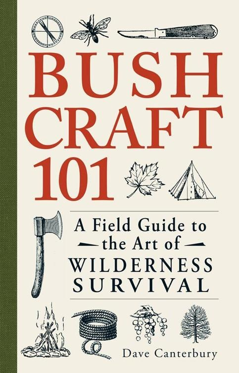
求生
101
野外生存艺术指南
戴夫·坎特伯里
马萨诸塞州，埃文
我想将这本书献给所有在我之前的拓荒者和伐木工人，他们通过自己的著作和日记传承了知识。如果没有这些人，我们就不会有如此丰富的信息来获取我们目前的知识，没有他们的奉献，像这样的书籍是不可能完成的。
前言
第一部分：装备准备
第1章：你的背包
五个C
背包：概述
携带羊毛毯
帆布背包
背包框架
篮式背包
头带式背包
军用挎包
徒步旅行者个人携带装备
背包使用技巧和窍门
第2章：工具
刀具
刀具安全/安全握法
劈柴法(Batoning)
切口
剪切
刀具保养
锯子
锯子安全
锯子保养
斧头
磨刃角度
安全操作和使用
劈柴
处理柴火
砍伐
修枝
截断和开槽
斧头劈柴法(Batoning)
斧头保养和磨刃
始终携带楔子
工具使用技巧和窍门
第3章：绳索、绳索、织带和绳结
绳索
绳子
织带
骡带
制作天然绳索
基本和实用的营地绳结
捆绑、绑扎和拉绳扣
绳索和绳索使用技巧和窍门
第4章：容器和烹饪工具
水瓶/水壶
杯子
锅具
悬挂锅具
煎锅
肉类烤叉
木板
食物处理工具
烹饪铁具
炉具和燃烧器
野外烹饪技巧和窍门
第5章：遮蔽
防水布和防水布帐篷
聚丙烯和硅尼龙
帆布
油布
地垫
枝叶袋(Browse Bags)
应急保温毯
吊床
睡袋
羊毛毯
天然庇护所
更智能遮蔽的技巧和窍门
第6章：燃烧
打火机
铁质燧石棒(Ferrocerium Rods)
放大镜（太阳镜）
刀/斧刃
摩擦生火（木棍）
炭化罐
安全成功生火的技巧和窍门
第二部分：在荒野中
第7章：建立营地
四个W
营地卫生
防水布和防水布搭建
生火技艺
起火材料
火堆布局
长火
达科他火坑(Dakota Fire Pits)
钥匙孔火堆(Keyhole Fires)
营地技巧和窍门
第8章：地形导航
指南针
基本指南针使用
理解地形特征和地图
定向地图
测量距离和测方位
每个伐木工都应该知道的五种导航方法
反向或后方位角
旅行时确定距离
找到自己（自我制图）
障碍物
PAUL（正方位统一布局）方法
计算日照时间
成功导航的技巧和窍门
第9章：树木：四季资源
松树
柳树和杨树
黑胡桃
檫树
橡树
利用树木的技巧和窍门
第10章：捕猎和处理猎物
理解陷阱组件
创建标志柱
诱饵捕猎
现代陷阱
临时捕猎材料
高地捕猎基础
诱饵陷阱
水域捕猎
专业设置
原始捕猎
落石陷阱(Deadfall Traps)
鸟类陷阱
小型捕猎套装
用临时鱼竿和天卡拉(Tenkara)钓鱼
处理小猎物
处理其他猎物
保存肉类
成功捕猎的技巧和窍门
结论
附录A：探路者概念：保护和利用资源
附录B：野生可食用植物和药用植物
附录C：荒野食谱
附录D：词汇表
版权
“先入为主的观念，特别是当一个人在其影响下相当成长起来时，是最难摆脱的。”
斯图尔特·爱德华·怀特，《营地与小径》，1907年
“Bushcraft”（荒野求生技能）是一个描述野外生存技能的术语，是在自然世界中生存和繁荣的实践。要有效地练习bushcraft，你必须掌握一套独特的技能，包括生火技术、导航、捕猎、搭建庇护所、追踪以及现代和原始工具的使用。明智的徒步旅行者在旅途中只携带少数必需品和工具；他们不是携带额外的装备，而是携带直接从自然环境中创造必要物品所需的知识和技能。要在没有现代舒适条件的情况下在森林中生存需要决心。像任何爱好一样，它需要奉献精神和知识，在某些情况下可能会拯救你的生命。许多bushcraft技能对于在紧急情况下野外生存是必不可少的。
回顾不太遥远的过去，你会发现历史上一些最具影响力的人物都将荒野生活视为一项严肃的努力以及令人兴奋的消遣。他们重新与自然连接，保护资源，并致力于保护自然世界。西奥多·罗斯福可能是最著名的与探索、保护和荒野生活相关的总统。他与内华达山脉俱乐部创始人约翰·缪尔合作，改善了美国自然奇观的保护工作，在全国范围内保护了2.3亿英亩的野生动物栖息地。在二十世纪之交的三十年内，美国人民重新发现了在大自然中度过时光的感觉，并从日常生活中找到了解脱。霍勒斯·凯普哈特和E.H.克雷普斯等作家通过使用”woodcraft(林地技艺)“和”camping(露营)“等术语捕捉到了这种新热潮。他们追随前辈的足迹，如乔治·华盛顿·西尔斯”Nessmuk(内斯穆克)“，他是在森林中徒步旅行以娱乐而非生存的创新者。最近，澳大利亚的”Bush Tucker Man(丛林食物人)“莱斯·希丁斯、加拿大bushcraft(丛林技艺)和生存教练莫尔斯·科钱斯基，以及著名的英国林地专家和教练雷·米尔斯，都将bushcraft实践带给了当代观众。
为什么在这个现代便利设施和先进技术的时代，有人会放弃舒适的生活，追求更简单但可能危险的森林徒步？原因很多，好处也很多。练习bushcraft是你享受户外活动的绝佳方式。如果你感到被困在城市环境中，一次好的徒步旅行是回归野外、关闭电子设备、逃离社会持续压力的方式。此外，你在丛林中磨练的能力在灾难准备和生存情况下可能成为救命技能。
Nessmuk说得最好，他解释道：“我们不是去绿色森林和清澈水域吃苦，我们是去享受。”这是一个强有力的声明，特别是在这个现代便利的时代。许多人认为要”享受”或舒适，意味着我们需要大量的装备和器具。实际上，你在野外成功需要的设备很少。相反，你需要对自然世界的知识。这本书在简短的篇幅内为你提供了这些知识，但必须通过你自己的经验和在丛林中的时间来补充，以获得你自己的”林地知识博士学位”（马克·贝克创造的术语）。
这本书是户外爱好者以及bushcraft新手的完美伴侣。它源于个人经验、研究，以及在几个不同环境和生态系统中的许多日夜实地经历。在我的经验指导下，你将发现远征所需的一切，从准备背包到建立营地再到选择工具和用品。这本手册还包含关于导航、生火、陷阱制作、钓鱼、觅食等方面的清晰说明。你甚至会学到保护资源的最佳方法，包括自然资源和人造资源。这里的经过验证的说明、技巧和诀窍将为你提供重要的bushcrafting技能，帮助你从室内生活过渡到在自然世界中生存——并茁壮成长。
我相信，通过理解自然资源并了解那些决定舒适与痛苦差别的物品，你可以在小径上或丛林中度过时光时获得近乎陶醉的体验。以这本书为指南，很快你也会享受荒野——而无需使其变得平滑。为此，我将这本著作献给你，受到我过去英雄和导师的启发，作为来自我在美国东部经验的bushcraft的重新开拓和更现代版本。
—戴夫·坎特伯雷
装备准备
你的背包
“徒步而行的人，准备在任何地方、任何天气下露营，
是地球上最独立的人。“
—霍勒斯·凯普哈特，1904年
当你练习bushcraft时，你是一个自给自足的单位：你必须在背上和身上携带所需的一切，包括在旅行期间维持你生存所必需的一切。（你还必须包括在紧急情况下可能需要的任何物品。）
你可以根据生存能力的五个C来组织必需品。在这五个基本要素中包含了你需要为紧急情况做好准备以及摆脱城市丛林束缚所需的所有工具和知识。这些物品是最难从天然材料复制的，需要最大量的技能来复制，并控制最直接影响你身体核心温度的条件。（它们也可以用来处理原材料以帮助控制你的身体核心温度。）这些物品，连同你根据当前条件穿衣的能力和对自然世界的知识，使得携带轻便装备并享受”徒步”时光变得容易。
五个C是：
切割工具 用于制造所需物品和处理食物
遮蔽要素 用于创造防护自然要素的微气候
燃烧装置 用于生火，不仅用于保存和烹饪食物，还用于制药和提供所需温暖
容器 用于长距离携带水或保护收集的食物来源
绳索 用于捆绑和系扎
这些物品，加上对地形的了解和一些确保食物安全的物品，将是你打包和携带物品的核心。然后你可以添加一些急救、导航和修理用品，让你在路上和营地的生活更加”顺利”。这是否意味着你需要大量痛苦携带的物品，或者会笨重到让你在几百码内就后悔这次旅行？不；相反，你必须为你的装备选择合适的要素，并且必须确保这些物品具有最好的质量。此外，你必须确保它们能够很好地执行几项必需的任务。
五个C主要旨在帮助你控制核心体温、舒适度和便利性。在打包或创建你的装备时，理解这些要素将有助于确定哪些物品真正重要，哪些只是增加重量。在任何装备中，你的首要任务是在任何天气条件下维持身体机能和核心体温。因此，燃烧装置、衣物和处理水的容器等物品将是至关重要的。如果你考虑舒适度，这些是你希望提供舒适夜间睡眠的物品。每晚至少睡四个小时对于享受你的徒步时光至关重要。（你可以通过一个人晚上睡得如何来判断他或她在野外的经验水平。）便利物品是那些你不必打包但希望携带的物品，用来让事情变得愉快或让某些任务变得更容易一些。通过在规划打包时专注于核心体温控制和舒适度，你将为便利物品腾出空间，这些物品让野外时光变得难忘。
现在你知道了打包的理念，你需要一个装载装备的东西。今天市场上有许多不同的打包配置和品牌，颜色和样式的选择几乎是无穷无尽的。我从来不喜欢有很多口袋和隔间的背包；每当你寻找某件物品时，找到它就成了一种折磨。保持简单；我们过去的导师也相信同样的道理。最基本的携带方式包括床铺/毯子卷、背囊(rucksack)、背包架或背篮。其中一些可以组合使用以获得更多舒适度或多功能性。在下面的部分中，我们将考虑一些临时的打包策略，以及今天可用的一些更常见的选择。
如果你计划使用羊毛毯而不是睡袋，你需要一条女王尺寸的100%羊毛毯和一条双人尺寸的100%羊毛毯组合作为床上用品；这在直到冰点的温度下都足够了。要创建这种携带选择，将一块防水布(tarp)铺在地上，折叠成三层（8’ × 8’是一个好的最小尺寸）。然后将女王毯对折，双人毯对折放在上面。在这里你将添加装备的其他要素，这些你不会立即需要，因为它们将被限制在这个卷中直到你扎营。备用衣物和一些干燥的引火物(tinder)是放入这个卷中干燥保管的好东西。
一旦卷铺在地上，将一根12英尺长的绳子或织带对折，放在卷的末端。将绳子卷入床铺卷的其余部分；当它在卷中时，一个环会从一侧伸出，绳子的两个尾端会从卷的另一侧伸出。将这些尾端穿过环并打结固定。然后你需要通过在卷的外侧使用两段绳索将卷捆扎在一起，并打结固定。在这种配置下，你可以将卷作为单肩带佩戴，或者绳子可以分开形成背包式携带。
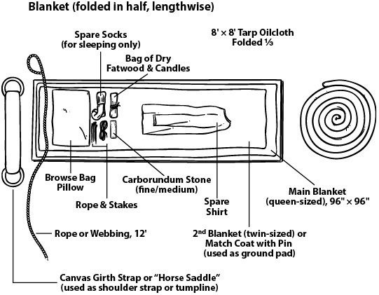
背囊(rucksack)是背包的常用名称，今天市场上有数百种。同样，背包中的大量口袋和隔间可能会造成问题；坚持使用具有大型桶式隔间和几个外部口袋的设计，以便轻松取用重要或经常使用的物品。足够装下背篮或约35-50升的背包，对于在野外的许多天来说已经足够大了。选择背囊时要记住的最重要的事情是背包及其所有组件部分（如肩带、拉链和扣子）的整体耐用性。帆布背包很好，但重型材料（丹尼尔(denier)500+）也同样有效。对于初学者来说，军用剩余物资是一个很好的起点。军用剩余材料经过测试能够承受大量滥用，如果你检查它们，通常会发现它们状况良好。它们将以非常好的价格为你服务多年。
在选择新背包购买时，确保公司有良好的声誉和生产背包的长期经验。记住：当你独自在树林中时，你的背包是你的生命线。终身保修是物有所值的投资。杜卢斯背包公司(Duluth Pack Company)自19世纪末以来一直在经营，今天仍坚持与公司创始人相同的质量和保证。如果你选择背囊选项，这些背包是最好的选择之一。至于剩余背包，瑞典山地背囊、美国ALICE（全用途轻型个人携带装备）背包和美国海军陆战队ILBE（改进型负重装备）背包在经过时间考验的耐用性方面难以超越。
任何背包系统都应包含一个足够大的防水袋，能够填满主舱室，以确保内容物保持干燥——无论遇到什么天气条件。建立营地后，你可以取出防水袋，用空出的背包来收集营地资源，如柴火。如果你想将背包与床铺/毯子卷组合使用，背包可以小一些；只需从任何马具店添加”D”环，就能让卷铺悬挂在腰带高度的背带上。许多现有的背包和背架都包含填充腰带来帮助分散重量，如果你觉得它们碍事或想要更轻的负重，大多数腰带都可以拆卸。
背架是我最喜欢的野外装备携带系统。你可以单独使用它们，也可以与其他物品组合使用。外置背架的多功能性在今天几乎被遗忘了。目前最流行的临时背架是罗伊克罗夫特背架(Roycroft frame)，以汤姆·罗伊克罗夫特(Tom Roycroft)命名，他是一位户外运动者，曾向著名的加拿大丛林技能(bushcraft)和野外生存专家莫斯·科钱斯基(Mors Kochanski)传授了这种背架的制作方法。这个简单的三角形可以在几分钟内制作完成，如果绑扎正确且木材选择明智，可以使用很多年。要制作这种背架，首先切割三个组件（可以轻松从单根硬木幼树制作），然后按照以下绑扎说明：
切割一块腰部横板或劈开的硬木片，宽度比你后背的腰部区域大约2英寸（或从腋下到手腕的长度）。
切割2块长度为从腋下到伸展指尖距离1-1½倍的木条。
使用剪式绑扎法（见第3章）将两根较长的组件绑在腰部横板两端向内约1英寸处，然后在距离顶部约4英寸处交叉并对角绑扎，形成三角形。
背架完成后，创建7个绑扎点用于将装备系在背架上。背架带由12英尺长的单根绳索或织带制成，在背架顶部X处穿过做一个云雀头结。然后将绳索缠绕在腰部横板的”耳朵”上，系在腰部固定。
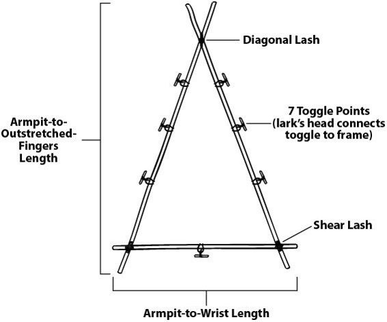
这种背架的优点是三角形框架内没有横杆，不会顶到你的后背。其他带横杆的背架类型会让背包的负重通过框架压到后背，时间长了会造成不适。装填罗伊克罗夫特背架时，你可以使用类似制作床铺卷的方法。同样，将防水布作为最外层组件。不要将装备卷在防水布里，而是将防水布折叠包围装备，确保最后一折形成挡水翻盖。用绳索以X形将其绑扎到背架上，用卡结(jam knot)或类似结绳收紧，然后加上背带穿戴背包。
金属背架也有多种配置和价格选择。一个不错的便宜版本（虽然对某些物品来说有点小）是军剩ALICE背架；你可以找到带完整肩带和腰垫腰带的版本，大约30美元。要将其作为独立背架使用（类似罗伊克罗夫特背架），你唯一需要添加的就是几个绑扎点的栓扣。在某些情况下，你还可以找到这种背架底部的可拆卸无线电架，增加其多功能性。你也可以从Cabela’s或Bull-Pac等公司购买新的金属管制背架。这些是为携带野外猎杀的猎物而制造的。这些背架比普通背包更大，质量大多不错，不过我建议在购买前检查这类背架的扣具、背带和连接部件的质量。对于新背架来说，很难超过同名公司制造的BULL-PAC。这款背架是为携带猎物而设计的，但它有一些大多数常规背架不具备的特点：设计中内置绑扎点，配有厚重坚固的五金件和背带，以及一个固定床铺卷的托架。这款背包应该可以使用一辈子，即使承载最重的负荷也非常舒适（空载时很轻）。将这些背架与其他系统配合使用是非常简单的过程；只需将装备绑扎到背架本身就可以出发（就像罗伊克罗夫特背架一样）。我使用Bull-Pac设计的背架，根据不同的远征结合许多不同的系统。标准的办公室垃圾桶当附在背架上时就是很好的诱捕篮，配上托架上的床铺卷，它是完美的狩猎/诱捕组合。其尺寸由背架本身决定。
背篮(Pack baskets)已经使用了很多年，最初始于1600年代末期哈德逊湾公司的毛皮捕猎者。它们通常配有背带，可以单独作为背包使用，也可以与其他物品组合使用。你可以将背篮装入大型背包中，使其携带更舒适。背篮的优点是其刚性：更容易放入物品并在后来取出，由于背篮通常由木材制成或由现代合成材料编织，如果你放入的任何物品是湿的，它们也能很好地排水。尽管如此，放入这些背篮中的任何装备（除了诱捕装备外）都应放在防水袋中，就像任何背包一样。
在这些背包中，你可以携带金属陷阱、陷阱工具和其他装备，而不用担心刺破帆布或其他背包材料。当你将帆布背包外壳（如Duluth背包）、内层防水袋和背篓结合起来时，这就成为了一个非常多功能的系统，在一个单元中提供三种不同的携带选择。你可以扎营后，取出装有营地装备的防水袋，取出陷阱篮（通常由白蜡木条编织制成并增加了背带的编织篮，可用作背包）在扎营时沿线路使用，并让空背包在短途侦察中携带资源回营地，如寻找柴火等。所有陷阱部件都可以留在背篓中，使用过程中陷阱线路上的任何血迹或泥土都会被限制在陷阱篮内。
野外生存技巧
背包挽具采用背包或框架的可拆卸背带系统，与包裹在防水布或毯子中的负载一起使用。一个例子是一套ALICE背包背带（通过军剩商店购买时广泛可得且非常便宜）。当与包裹负载（如防水布和装备）一起使用时，背带可以直接连接到用于固定包裹的水平织带或绳索上，从而形成一个简单但有效的背包。
头带(Tumplines)是连接到较重负载（如背包或框架）上的带子，戴在前额上以协助携带负载。在过去，这些通常是手工编织的带子，在前额处较宽。二十世纪的独木舟爱好者经常使用头带来携带重型背包，当需要将所有装备和独木舟从一个可通航水道运输到另一个水道时（这称为”水陆联运(portaging)“）。制作头带的一个简单方法是使用前面提到的绳索或织带，并在线路之间添加马鞍的肚带。肚带是马匹腰部的填充带；这可以用作填充肩带，绑在头带中间，从两端连接到要在前额使用的区域。你也可以将其重新用作更宽更舒适的肩带，与被褥卷一起使用。在很大程度上，在这个时代，随着现代背包的新设计，头带是不必要的，但当以更简约的方式做事并试图从装备中获得最大收益时，它们可能很有用。我可以告诉你，在设陷阱时，头带非常方便，因为你可能要携带一个装满约100磅当日猎获物的篮子，以及你的设备。仅此一点就值得携带，如果你计划设陷阱的话。
干粮袋(Haversack)是携带在身体一侧的小袋子。干粮袋自边疆时代以来一直是标准携带物品。这些袋子大小在11” × 18”到24”方形之间变化；然而，确切的大小是个人偏好问题。构造通常是布料或皮革。许多干粮袋都是防水的，由油布或手工制蜡帆布制成。这个装置用于携带即时重要的物品或你在旅途中收集的物品。永远不要把这个袋子塞得太满以至于没有更多空间，特别是为了你在路上找到的东西；你可能需要空间来存放快速火种来源或鸟巢材料。
野外生存技巧
腰带袋，通常由皮革制成，是野外生存者保存主要生火工具包和可能的备用雕刻刀或小折刀的地方。可以说，这是你的钱包，用来携带你可能需要的最重要的物品，特别是如果你把其他所有东西都留在营地或丢失了补给品时。这个袋子的大小是可选的，但你不希望它太大以至于在移动时变得累赘。
一旦你选择了背包（或多个背包），你必须决定放什么进去。以下是装备和用品的一般清单。这个清单绝不是详尽的；然而，它是一个很好的参考工具，确保你在旅程中拥有必要的基本装备。如果你还不太确定其中一些东西是什么或用于什么，不要担心；我会在进行过程中解释所有这些。
口袋
折刀指南针打火机
腰带
护套刀 Kuksa（传统木杯）用扣绳
腰带袋
放大镜 4” × 1/2”铁棒(ferrocerium)末端包裹1”胶带备用打火机雕刻小刀 10’#36焦油海员绳
干粮袋
监视外套（油布）手帕（亚麻）绳索（#36焦油海员绳的部分卷）工作手套（皮革）备用铁棒(ferrocerium)（6” × 1/2”末端包裹1”胶带）
背包
8’ × 8’油布防水布大型（55加仑）塑料垃圾袋双人羊毛毯皇后羊毛毯（或军用模块化睡眠系统[MSS]睡袋和露宿袋） S.A. Wetterlings猎人斧 1卷#36焦油海员绳折叠锯或20”弓锯丛林锅煎锅蜡布袋装3支蜂蜡蜡烛和6根肥木条蜡烛灯笼笔记本和铅笔 2-3根完整长度的麻绳，1/2”直径 25’#550降落伞绳（脊线）刀斧刃片、带子和织带或帆布的修理包 10’#8焦油海员绳 2根帆缝针，#9和#13 1根Lansky钻石棒 1块小磨刀石 2根16P钉子
夏季钓鱼套装（小型）
2根装好的线，1根飞钓浮线和1根编织线配#6钩小瓶铅坠各种鱼钩 3叉金属蛙/鱼叉
冬季陷阱套装
3个#110夹体陷阱 2个#220夹体陷阱 1个#3双长弹簧陷阱 12个各种套索 25’打包线火器和装备（季节性）
马匹用的旧肚带可以制作出色的背带，在当地马具店可以便宜买到。这些都是为了耐用而制作的，带有重型金属环，在需要时可以支撑非常重的负载。
如果你对羊毛过敏，羊驼毛是很好的替代材料；但是，它通常不如羊毛防水。
在试验你的装备时，去树林里过一夜，回来后重新评估你没有使用的物品。除非情况需要，否则下次就不要带了。如果你发现需要它，以后可以再加上。
记住要对你携带物品的用途进行创新思考。一般来说，每件物品都应该有三种用途，但你发现的用途越多，以后要添加的物品就越少。
5-10升的防水袋总是很好的补充，既可以分开存放装备的重要部件，也可以防水。它们还可以作为煮沸前后收集和储存水的容器，或者收集雨水。
工具
“在美国早期生活中，斧头和刀子是两种
不可缺少的工具…用刀子他们制作勺子、扫帚、耙子和
碗；修整他们捕获动物的皮毛，制作小屋内外
需要的小物件。“
[—菲利普·D·法甘斯，1933年]
优质、保养良好的工具可能意味着愉快舒适的徒步和不成功——甚至危险——的荒野冒险之间的区别。记住第一章中提到的切割工具是五大要素之一。这意味着在练习bushcraft(丛林技能)时它们是必需品。由于刀具、锯子和斧头有很多选择，本章将为你提供知识来选择最适合你需求和特定目的地的最佳工具。
保养你的工具也是需要掌握的关键技能。仅仅在装备中携带这些工具是不够的；适当的维护将保证你的工具长期的使用寿命和耐用性。同样重要的是你正确处理、使用和安全操作刀具、锯子和斧头的技能。从磨锋利刃到处理柴火再到砍伐树木，本章详述了成为专业woodsman(森林人)所需的基本技能，同时保护你自己——以及你周围的人。
腰刀是任何woodsman(森林人)能拥有的最重要工具。既然如此，你必须将这个工具直接固定在身上，防止丢失。有了这件物品，在紧急情况出现时，你可以重新制作所有其他需要的物品。因此，最终的问题是：什么是完美的刀？从经验来说，我认为通常是当需要时你身上有的那把刀。然而，为了这次讨论的目的，让我们检查一下在野外对你最有用的刀的特质。
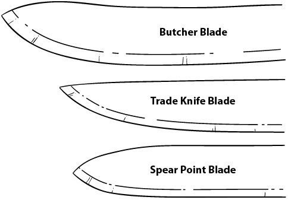
基本刀刃轮廓
首先看刀刃的长度。刀刃太小会使处理柴火变得困难，特别是如果你没有携带斧头或没有可用的斧头时。刀刃太大会使精细的雕刻任务更加困难。理想的平衡是大约4½-6英寸的刀刃长度。历史上，在美国边境发现的大多数刀具都在这个长度范围内，并且具有大厨刀或屠夫刀的轮廓。现在由高碳钢制成的刀刃，如1095和01工具钢是首选，因为它们能够产生火花雨(很像火钢)。这使它们成为出色的生火工具。你可以将高碳钢刀刃与坚硬的岩石(如石英或燧石)一起使用来点燃炭化布或材料，特别是如果你首选的生火方法失败或用完了。刀背必须有一个良好的尖锐90°边缘；确保它没有卷边或斜面。再次强调，这将允许你将其用作金属火柴或镁铁棒的击打装置。
今天许多刀具都涂有防锈涂层。你应该避免涂层刀具；涂有这种涂层的刀具很难产生火花雨或与坚硬岩石结合点燃材料。最好只是维护你的刀刃以防止生锈。
任何你作为腰刀携带的刀具都应该是全柄设计；这意味着整把刀是一块钢材，手柄通过销钉或螺丝固定在外侧。这非常重要，因为刀具在处理柴火时可能承受很大冲击，特别是在batoning(劈木)木材时被击打刀背(见下文)。因为你的腰刀是装备中如此重要的一部分，你应该为这个工具预留装备预算的相当大一部分。
Bushcraft(丛林技能)小贴士
刀刃研磨，或刀刃横截面的形状，是另一个归结为个人喜好的考虑。主要的研磨类型有：
凹磨
凸磨
平磨
斯堪的纳维亚磨
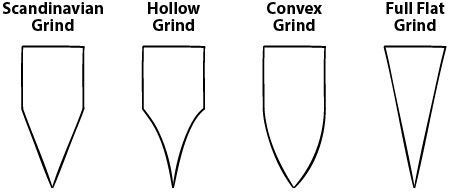
平磨和斯堪的纳维亚磨在野外更容易快速磨锐。它们劈砍效果好，但根据刀具不同，如果左右扭转可能会脆断，特别是在寒冷天气中。它们绝对是精细刮削和雕刻工作的最佳选择。凹磨刀刃将保持非常锋利的边缘，在剥皮任务中表现出色，但最容易损坏，因为刀刃较薄。凸刃最坚韧，最适合劈砍；但是，它们在野外环境中更难维护，在精细任务中表现不如其他类型。
折叠刀
许多类型的工具都属于折叠刀(jackknife)类别，从瑞士军刀(Swiss Army Knives)到多功能工具，再到最昂贵的单刃折叠刀。重要的是要了解这个工具能为你完成什么任务，并选择一把满足你需要的多功能性的刀。在购买任何口袋式工具或折叠器具之前，首先要将它视为一把刀来考虑。
当今市场上大多数多功能刀具的主要问题是，虽然它们在其他工具方面非常有用，但作为刀具的功能性却严重不足。哈里特·辛普森·阿诺的著作《坎伯兰河畔的播种时节》出版于1960年，书中讲述了一位绅士在篝火旁用他的削木刀为损坏的燧发枪雕刻枪托。我无法想象用今天的多功能刀片来完成这项任务，因为它们通常比传统的折叠刀式刀片更小更脆弱，实用性也差得多。然而，一些瑞士军刀式折叠刀确实有不错的刀片，而且还提供其他有用的工具。童子军多年来一直使用营地式刀具，甚至美军也采用了这种配置。这种营地式刀具包含了很好的工具组合，带有一个用于精细任务的有用小刀片。
专家霍勒斯·凯普哈特指出，如果你打算使用这个工具进行剥皮，你的折叠刀需要一个锋利且非常耐用的刀片。我们的许多先辈都携带带有多个刀片的折叠刀用于此类目的。今天，有几种风格的折叠刀由Case和Imperial等公司制造，包括猎人式、牧场主式和捕兽者式。对于剥皮目的，我更喜欢猎人型号，它配备两个刀片：一个用于鱼类和禽类的小刀片，一个用于剥哺乳动物皮的大刀片。这些刀片大约3¾英寸，当与5-6英寸的护套刀配合使用时，是一个很好的小工具。你携带的任何折叠刀都应该包含对你个人需求重要的工具，并且质量最佳。
一旦你选择了你的刀，学会安全操作它是至关重要的。在野外你最不希望的就是因为粗心而伤害自己（或其他任何人）。
死亡三角是你双腿上部之间的空间，包括腹股沟和两条股动脉。不惜一切代价避免暴露的刀片进入这个区域。永远不要朝这个区域切割，或以可能导致刀片进入该区域的方式持拿要切割或雕刻的物体。
野外技巧(BUSHCRAFT TIP)
如果你在野外探险时不是独自一人，任何时候准备使用你的腰刀时，都需要评估你的血液圈(blood circle)。这是你周围360°范围内超过手臂长度的区域，其他人可能接触到被推离被切割材料的刀片。
在野外安全操作刀具的做法至关重要。因此，当你不使用腰刀时，立即将其放回刀鞘中。永远不要将它放在地上或其他装备上。始终像握拳一样握住你的刀；这不仅能给你杠杆作用和控制力，还能消除手指接触切割面的任何可能性。如果你必须握紧刀片进行更精细的雕刻任务或使用刀尖（如制作缺口或雕刻网针时），如果有的话应该戴皮手套。练习使用你的刀会让你更舒适，但不要用自满取代谨慎。锋利的刀是一把双刃剑：能够完成最精细的雕刻任务，但也能造成深度伤口并留下永久性损伤。
有两种好方法可以让你的腰刀更高效地为你工作并提供更多控制，而不是将刀推离工作物的自由切割动作：
膝盖杠杆法。在跪姿时，将握刀的手腕锁定在你的外侧或对侧膝盖上。然后将材料拉向刀片，在刀本身不移动的情况下移除材料。这种方法特别适合去除大量木材，以及精细雕刻帐篷桩上的尖端和其他部件。
胸部杠杆握法。将刀指向外侧，同时握住材料和刀的手臂像鸡翅一样从胸部做杠杆动作，使用背部肌肉来控制并通过同时移动被切割物体和刀片来移除材料。这是在其他人近距离时移除较重材料的特别有效方法。
从处理柴火到制作切口，你可能需要用腰带刀进行劈木。劈木法(Batoning)是一种切割和劈开木材的方法；你使用一根短棒或木棍击打刀背，推动或驱使刀片穿过木块。这在将较大的材料制作成更细的引火材时特别有效，特别是那些外表潮湿但内部干燥的材料。要正确使用你的刀进行劈木，你需要一根短棒；通常这是一根硬木枝条，长度大约从你的腋窝到手掌的距离。软木材容易损坏，会飞溅出松散的木片，可能对眼睛造成伤害。如果可能，将要劈开的材料放在平坦的表面上。这样可以提供稳定的基础，防止刀刃意外接触泥土或岩石。一旦将圆木端面朝上立在坚实的表面或铁砧树桩上，将刀刃放在你希望切割或劈开木材的位置。用短棒敲击刀背，这将使木材在所需的标记处劈开。
野外技巧
纹理较多的木材，如橡木，可能倾向于从直切处不均匀地劈开；你可以通过在劈木时将刀刃从偏移方向扭开来在一定程度上应对这个问题。如果你没有在第一次敲击时劈开木材，或者刀片低于所需木块顶部的平面，你可能需要再次劈木，在刀背上朝着刀尖方向更远的地方敲击。这是你必须拥有高质量刀片的另一个原因。永远不要尝试劈开直径大于你刀长的木块，如果可能的话，尽量保持至少1英寸直径的差距。如果偶尔遇到节疤或其他阻止刀片前进的东西，在刀上方插入一个木楔。用短棒敲击楔子；这将释放刀片，通常会完全劈开木材。
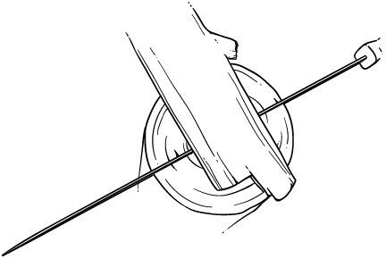
劈开树枝
在木材上雕刻某些切口的能力是一项重要技能；你将在多种营地需求中使用这种能力。有四种切口你会发现最有用。
桩切口
桩切口(stake notch)与桩的尖端一起，不仅可以用来制作防水布桩，还可以制作陷阱组件，为你提供良好的服务。要创建这个切口，选择项目所需的材料和长度，并确定切口的位置。将材料放在坚实的铁砧上，在切口所需顶部位置用短棒切出一个止动切口（即抵靠另一个切口停止的切口），深度为木材直径的三分之一。然后，使用你的腰带刀和膝部杠杆握法，从止动切口向后退约1英寸，以45°角朝向止动切口移除材料，完成切口。
V形切口
创建V形切口(V notch)的能力是一项非常有用的技能，当使用绳扣进行各种用途时——从防水布绳到锅架（绳扣是悬挂在绳索上的小木棍，用作悬挂物品的手段；见下文）。这个切口有助于将一段绳索固定到绳扣的所需区域。它也可以在更大规模上使用，如果切口的直径等于堆叠材料或与此配合使用的木块以同样方式切口，可以防止堆叠的材料移动。这个切口类似于”原木小屋”切口（见下文），但是有角度的，在深度或形状上不如后者精确。要创建这种类型的切口，选择所需的材料并将其水平放在坚实的表面上。然后，将你的刀刃以45°角放置，用短棒将刀刃劈到木材直径的1/3到1/2的深度，这取决于切口的用途。移到切口的另一侧，重复这个过程，创建一个”V”形。对于将承受压力且不堆叠的切口，切口深度永远不要超过材料直径的三分之一。
原木小屋切口
原木小屋切口(log cabin notch)主要用于建造；它可以小规模用于组装背包框架，也可以大规模用于建造小屋。要创建这个切口，用止动切口劈出所需切口的宽度，深度足以配合所需的木块。一旦止动切口完成，用刀或小楔子移除中间的材料。记住，在制作配合的切口时（就像任何建筑项目一样），你可以移除材料，但如果你的切口做得太大，你无法添加材料——所以要小心。测量两次，切割一次。
锅/吊环切口
锅/吊环切口(pot/bail notch)对制作烹饪工具很有用。它可以用来支撑锅的吊环（金属手柄），倒置后可以制作可调节的吊架，用于将锅移得更靠近或远离火焰或炭床。这个切口稍微复杂一些，但你可以按照这些简单的说明制作。
首先在所需材料上水平方向做两个止动切口，深度为材料的三分之一，呈X形图案。然后，使用你的刀和膝部杠杆握法，根据应用需要，切削并移除X的底部或顶部，留下一个稍微切削的尖端。如果这个切口做得正确，当在木棍或材料末端附近制作时，它将钩住你锅的吊环。如果木棍倒置，改变切口的方向，并且切口之间间隔几英寸，它们可以通过使用横棍并在末端楔形平坦区域钻一个凹痕来作为高度调节。这将创建一个让尖端休息的区域，从而悬挂或吊起你的锅。
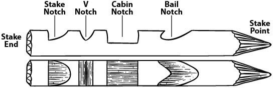
剪切削割的目的是在保持对材料和刀具控制的同时，削去更大量的木材。进行剪切削割需要某种砧座，以确保所需材料稳定，不会左右移动或滑脱。要在倒下的树木中制作砧座，在倒树上做一个大的木屋缺口，使用平面作为砧座。这样，你就不会将被切割的材料放在弯曲表面上。
剪切削割在制作羽毛棒时非常有用，羽毛棒是非常细的卷曲木屑（见下文）；如果没有斧头或锯子，它也很适合用腰刀切割树苗。你可以使用以下两种方法之一来完成切割：
对于小物件，如羽毛棒，用拳头握住刀具，将拳头放在坚固表面或砧座上，慢慢将材料向你拉。通过控制材料的角度，你可以创造出非常细的材料刨片。
如果需要力量，比如当你想切割树苗时，使用这种方法：站在所需材料上方，确保它固定在砧座上（或在树苗的情况下，确保它牢固地扎在地里）。利用你的上半身重量，仅通过肘部移动手臂，身体重心集中在顶部，直接向下推入材料。
[用刀切割树苗]
用刀砍倒树苗应该是最后的手段，因为你没有斧头或锯子，或者因为你找不到枯木来完成所需的任务。要切割树苗，你需要通过弯曲树木给它施加压力，并使用多次剪切削割来啃穿它。
海狸啃咬技术(beaver-chew technique)采用围绕棍子周长的多次切割来削弱它向中心的部分。这类似于海狸砍倒树木的方式，只是你使用的是刀而不是牙齿。
只要你使用一把好的、锋利的刀，这个过程相当容易，但你必须小心。尽可能贴近地面切割树木，以避免树桩弹起撞到你。较大的树桩在夜间也可能成为绊倒的危险。要为用于搭建庇护所或铺盖的树苗打顶（即修剪顶部较小的枝条），将树顶向下弯曲形成”C”形，站在树顶上。在手臂下控制树干的同时，使用同样的剪切削割和海狸啃咬技术来打顶。
[剥树皮]
剥树皮对大多数项目都是必要的，但在处理内树皮材料作为引火材料时尤其重要。要剥除树皮，将材料固定在好的砧座上，以剪切方式使用刀背。要制作更细的内树皮、脂木(fatwood)和真菌刨片，或为引火材料创造蓬松材料，你可以使用相同技术，调整压力和角度。
户外生存技巧
你刀具的刃口是一种资源，所有资源都应该被保护——你永远不知道什么时候紧急情况会来临，阻止你按计划回家。在你的刀上有锋利90°脊背的另一个好理由是便于剥皮和使用树皮或脂木处理引火材料。
[羽毛棒]
羽毛棒可以作为初始火堆的引火源使用。它们可以帮助更快地建立火源。使用较软的木材制作它们，因为密度较低，更易燃。羽毛棒增加了热量接触的表面积，使燃料更容易点燃。在砧座上剪切削割或膝部杠杆都是制作羽毛棒的好技术。在较软木材的较大枝条上，制作羽毛时你可能需要直立站着。所有羽毛都应该在与木材相同的平面上制作。制作羽毛棒后，如果你能进一步减小刨片的尺寸，使其达到火柴棒大小，这些效果最好。
制作多达二十根这种火柴棒大小的羽毛棒，在火堆底部用作引火束。脂木羽毛棒将是点燃火焰的绝佳火柴，减少你需要使用打火机明火的时间。一般经验法则是你从打火机获得点燃所需的火焰时间绝不应超过五秒。羽毛棒将有助于做到这一点。
保持你的刀具锋利并尊重地处理它是非常重要的。它是任何户外生存者拥有的最重要工具之一。
[保护]
保护你的刀具意味着护理它，使其不会因长期暴露在潮湿环境中而生锈。实现这一点的最好方法是在使用后重新放入刀鞘之前，用你的棉手帕或围巾擦干刀具。金属表面的润滑将帮助刀片排斥水分，同时保护它免受锈蚀。润滑剂的选择很大程度上取决于你对刀片的用途。我使用橄榄油保持刀具润滑。这是因为当我处理食物时，刀具绝不会被机油等石油产品污染。如果你不打算让刀具接触食物，机油也能很好地完成润滑工作。
[刀鞘]
市面上有许多不同风格的刀鞘(sheaths)。刀鞘最常见的两种材料是皮革和Kydex。皮革是传统选择。它最大的优势是可以长期在皮革内保持润滑，这样当你将刀子放入刀鞘时，刀子就会得到润滑。皮革最大的缺点是一旦被水浸透，它会长时间保持潮湿。为了防止这种情况发生或至少减缓这个过程，在家里将你的刀鞘在橄榄油中浸泡约二十四小时，然后让它滴干后再使用。或者，你可以用蜂蜡给刀鞘打蜡，在火边或其他热源附近加热皮革，迫使蜡浸入皮革的毛孔中。
Kydex最大的优势——它是一种可塑型的丙烯腈-丁二烯-苯乙烯(ABS)，一种热塑性塑料——是如果制作正确的话排水性能良好，并且几乎不可摧毁。Kydex的缺点是其紧密的贴合会形成一个紧密、坚硬的空间，可能会困住碎屑。任何进入刀鞘的碎屑在你将刀子进出时都可能会刮伤刀刃。Kydex能很好地固定你的刀刃，防止丢失；当使用皮革刀鞘时，购买一个在刀柄上有翻盖的，可以扣紧并随时固定刀子的款式。
你必须定期磨刀来重新建立磨损的刀刃。钝刀比无用更糟糕；它很危险，因为更难控制。你的刀子的锋利程度是你作为丛林生存者(bushman)技能水平的关键指标。
磨刀石(whetstone)是一种磨刀工具，用来从刀刃上去除金属以形成锋利的切割边缘。磨刀石是磨刀或恢复刀刃锋利的古老方法。任何磨刀过程都涉及几个步骤。
首先你必须了解你的刀子切割边缘的实际斜角度数；通常在10-20°之间。磨刀过程分为五个阶段：
一位刀匠曾经告诉我，你应该”磨一次刀，然后永远珩磨它。“虽然这是对的，但要记住使用粗、中、细磨料的磨刀过程的每个步骤都会在每次行程中从刀刃上去除金属。
大多数磨刀石传统上使用油作为润滑剂，但水对于野外和营地使用来说是更好的替代品。只要记住当你买新石头时，如果你使用过一次油，就永远不能再回头使用水了。
石头有不同的粒度，从粗到中到细，通常按粒度编号。(数字越大，粒度越细。)例如，800粒度的石头被认为是粗糙的，只用于大量材料去除，如大毛刺。另一方面，3000粒度的石头是用于最终精加工和刀子珩磨的超细粒度。一般来说，我使用约1000-1200粒度的石头进行任何常规磨刀，然后用好的皮带革磨。要磨刀，你应该首先让石头在水中浸泡一会儿，让其所有毛孔都充满水。然后，将它放在平坦的表面上或用木头制作一个支架来保持石头水平。你也可以使用小钉子暂时将它固定在你在原木或树桩上创建的平坦表面上。一旦石头就位，以由研磨角度决定的角度将刀刃从靠近刀柄的区域向刀尖方向拖过石头，在整个行程中保持相同的角度。
在磨刀刃时，仔细考虑其当前状况。如果你使用太粗糙的磨料，你会通过从刀刃上去除超过需要的金属来浪费资源，造成不必要的磨损。如果你正确保养你的刀刃，它应该永远不需要超过最后三个步骤——精磨、珩磨和革磨——来保持锋利的切割边缘。使用磨刀石会在刀刃的对面形成毛刺(一个在磨刀过程中被推到对面的薄金属片)；去除这个需要在你进行过程中在刀刃两面进行等量的行程。这里的经验法则是你需要为每个连续步骤增加两倍的行程数；如果你在精磨石上每面使用二十次行程，那么在珩磨石上需要每面四十次，在革磨上需要八十次。一旦你获得了良好的镜面光洁度，如果角度保持正确，刀刃应该是好的和锋利的。
记住使用石头前总是要先用水浸泡。虽然油多年来一直是野外的标准，但油会堵塞石头的毛孔，使清洁金属材料变得困难。水可以缓解这个问题，石头可以简单地用水冲洗。磨刀后用橄榄油或动物脂肪等轻油轻涂一层可以保护刀刃。你在磨刀时握持刀刃的角度将取决于刀刃本身的研磨角度。
今天许多人使用金刚石涂层卡片(diamond-coated card)或金刚石棒(diamond rod)进行磨刀，尽管大多数金刚石涂层工具大约相当于中等/精细石头。我在野外经常使用它们进行快速磨刀。它们易于携带，使刀刃对你的野外需求足够锋利，并且不需要像携带多块石头那样多的空间。不过你在珩磨方面做出了牺牲，尽管你仍然可以用皮带对刀刃进行革磨。一个好的妥协是携带一块小的精磨石和一根棒，然后使用皮带进行野外革磨。
陶瓷磨棒 是一种磨刀工具，用于在皮革打磨前精细处理刀刃上的毛刺。它们并非必需品，但一根小的铅笔大小的磨棒在你的装备中不会占用太多空间。无论如何，这些磨棒，无论是在家中还是在野外，都能让你在使用季节和淡季的日常维护中获得非常锋利的刃口。
使用陶瓷磨棒磨刀就像使用磨刀石一样，但由于圆形磨棒的接触面要小得多。陶瓷磨棒最适合用来去除磨刀过程中产生的毛刺，但如果刀具保养得当，你也可以在不磨刀的情况下将它们用作磨刀工具。
皮革打磨是指对刀刃进行抛光，是制作锋利切割刃的最后工序。如果你不让刀具在没有适当磨刀的情况下使用太久，仅仅皮革打磨通常就能很快恢复刃口。在野外，一条好的皮带就可以用作打磨皮革。打磨时，你实际上要以与使用磨刀石或磨棒相反的方向拉动刀刃。一个好的做法是找到磨削角度，然后将刀本身与打磨皮革保持45°角，刀刃背离你的方向向你拉动。
你装备中另一个必需的切割工具是锯子。与刀具一样，有多种锯子可供选择，它们有许多重要用途。
目前市场上有许多类型的折叠锯，这些是你可以携带到森林中的好工具，因为它们重量轻、紧凑且相对便宜。使用锯子总是比挥舞斧头更安全，除非你非常熟练使用斧头，否则锯子也会更精确。如果你手边有锯子，在制作切口时可以避免大量的劈裂工作，对于修剪和除枝，这个工具很难被超越。
丛林技巧
你可以使用锯子相对容易地劈木头：取一根干燥的树枝，直径大约手腕粗细，在材料的大约一半处做一个止切。然后将这块木料放在砧板或树桩上敲击，止切垂直于地面。这应该能从止切处向前将树枝劈成两半。
市场上有许多品牌的折叠锯，但根据我的经验，Bahco Laplander是市场上最好的丛林工艺(bushcraft)锯子，约30美元，非常实惠。我自己的锯子已经使用六年多了，仍然很强韧。
术语弓形锯、锯木锯和框架锯基本上是同义词；每种都是带有框架以保持刚性的单一刀片。我选择携带的类型是弓形锯。这是一个”D”形的管状金属框架，刀片连接到两端。它们的尺寸从12-30英寸不等，有适用于许多任务的刀片，如切割新鲜木材、粗切干木材或切割金属。只有当你计划长期远征（一周或更长时间）到可能需要处理较大木材的地区时，才携带弓形锯。一把好弓形锯的威力不容低估；它可以快速处理倒下的树木，迅速创建一大堆柴火。我选择携带20英寸弓形锯，因为我喜欢我的大型工具大约是我床卷的长度，或者大约是从我腋下到手掌的长度。添加到20英寸刀片上的框架使锯子总长度约为23-24英寸。弓形锯是斧头砍伐树木时的好伙伴；它很适合进行砍伐切割，非常适合除枝，一旦树木被砍伐或找到枯木，它是将木材切成柴火长度的最佳工具。
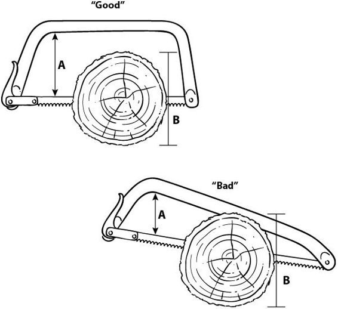
弓形锯有许多形状，从基本的”D”型设计到几乎三角形的形状。关于框架锯的一般要记住的是：它们只能切割与框架高度一样深的切口。框架中的任何角度都会在切割直径大于锯框架高度的木材时减少切割行程长度。市场上也有可拆卸或折叠的弓形锯，有木制和金属制的，但我从来不太相信在森林中有活动部件或拆卸东西。金属管几乎是你能得到的最坚不可摧的东西。
不使用时，始终保持弓形锯刀片被覆盖。最简单的方法是在框架的一端取下刀片，在刀片上放置PVC管，然后将其锁回框架中。锯木时，始终将你的空闲手穿过框架，确保锯子不会从切口跳出或造成伤害。使用锯子时，将你的空闲手（穿过框架的那只手）放在切断面一侧。通过施加压力，你将打开由刀片造成的间隙（或锯缝）；这将防止锯子在切得更深时卡住。如果操作不当，锯子可能造成难看的锯齿状切口，所以要谨慎、安全，慢慢来。
你锯子的刀片可能会因锈蚀而磨损和/或损坏。用你用于刀具和其他金属工具的相同润滑剂给它上油。你刀片的齿是偏移的，创造了锯缝（切口中木材被移除的空间）；偏移量决定了锯缝的宽度。当你使用刀片时，这个偏移会减少（锯缝也随之减少），导致刀片在切割时卡住或粘住。重新设置齿比你可能想要处理的更复杂和耗时。更换刀片通常更便宜；始终携带备用刀片。
然而，如果你在野外待很长时间，你可能需要一种重新设置齿的方法。你可以通过两种方式完成这项工作：
轻轻将每隔一颗锯齿向外弯曲，确保每个交替的锯齿都被稍微推向相反的方向。
2. 取下锯条，将其放在树桩或树砧上，用斧头轻轻敲击钉子，移动每隔一颗锯齿。然后翻转锯条，在另一侧重复操作。这个过程不会很精确，但在紧急情况下比什么都不做要好。你可以购买商用锯齿调整工具，但那是另一件需要携带的装备，并不必要，因为锯条在需要更换或重新调整之前会使用很长时间。
使用锯子后，请记住更换锯条护套。
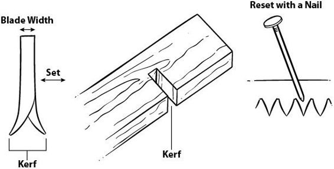
今天的林地工作者可以选择许多类型的斧头、手柄和头部重量，其中许多都是为特定目的而设计的。作为独行的bushcraft(丛林技能)实践者，你需要考虑斧头必须满足什么需求，你所在地区最常见的木材类型是什么，以及你愿意携带多少重量。斧头越大，使用起来就越安全；它需要更少的惯性来移除材料，并且需要更轻、更可控的挥舞。我们首先讨论不同类型的斧头，然后了解更多关于选择和使用的知识。
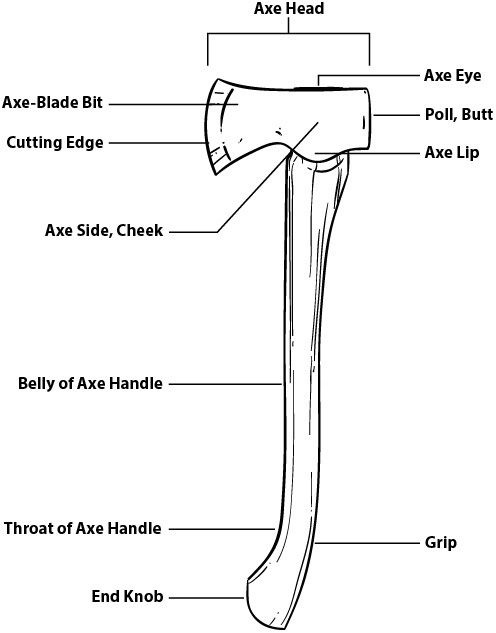
我们的许多祖先将腰带斧或手斧作为日常用品携带；许多人还携带战斧(tomahawk)来代替手斧。战斧与腰带斧的主要区别在于其手柄可以轻松拆卸，使其成为既可用于砍伐又可用于其他任务的手工工具。真正的战斧手柄通常细而直，相比之下，斧头或手斧手柄有轻微的弯曲。两种手柄都由山胡桃木等优质硬木制成，但战斧手柄主要靠压力固定；手柄呈锥形，从顶部穿过头部。锥形防止手柄完全穿过战斧的头部”眼孔”，但因为它没有固定到位，所以在需要或损坏时可以轻松拆卸或更换。
虽然关于边境战斧战斗的浪漫故事可能是真的，但这并不是该工具的最初目的。战斧是早期的多功能工具，可用于在营地周围处理较小的柴火。从手柄上取下头部后，它是出色的刮削和剥皮工具，也可用作劈柴的楔子。因此，如果你旅行的目的是管理陷阱线或处理兽皮，战斧比小腰带斧更好携带。
腰带斧，也称为工艺斧或手斧，从美国边境的早期就一直是主要工具；甚至每个童子军的装备中都有一把手斧。腰带斧有许多款式，手斧也是如此。对于任何这些工具的主要标准与刀具相似：你希望头部是高碳钢，如果可能的话是手工锻造的。总是选择木制手柄，这样在野外可以进行紧急更换。除了这些建议之外，尺寸、重量和形状是个人偏好问题。任何手柄长度少于16英寸、头部重量少于2磅的斧头或手斧都可以挂在腰带上或系在身体上，而不会变得过于累赘。
斧头也有许多款式、重量和手柄长度可供选择。决定携带一把大到必须系在背包或框架上的斧头，必须根据营地和路上要完成的工作类型来判断。手柄长度从腋下到手掌的斧头是一把好的伐木斧。只有在需要砍伐较大直径的树木时，你才需要这种尺寸。（在本书中，大树包括足够大到被认为是结构性的木材，或直径8英寸及以上的木材。）对于比这些更小的任务，介于伐木斧或腰带斧之间的斧头会很好用，对其他营地任务也很有用。猎人用的斧头，手柄长度在15-18英寸之间，是全能斧头的最佳折中选择。至于最适合林地工作者的斧头品牌或类型，瑞典斧头制造商是最好的。我在野外从未遇到过S.A. Wetterlings品牌或Gränsfors Bruk的失败。
在选择任何斧头时，刀刃研磨取决于其预期用途。更凸的研磨方式对于劈干木会很出色，但可能不会很好地穿透潮湿或冰冻的木材，并且会消耗更多的体力。凸形研磨不适合精细任务，如削尖木桩和立柱或在原木上切割凹槽。更多的斯堪的纳维亚”Scandi”类型研磨是一种很好的全能研磨方式，既适合劈柴又适合建造。大多数这些瑞典式斧头在刀刃面上有一个轻微的二次斜面，以形成实际的切削刃。
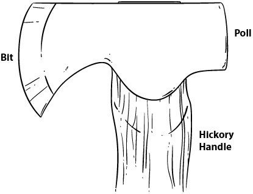
斯堪的纳维亚式斧头
熟练丛林技能者的标志之一就是他如何处理和保养自己的工具。对于任何不在使用中的斧头或手斧，始终保持适当的护套是非常重要的。始终准备一个耐用且安全的护套，或随时准备制作一个。永远不要将斧头放在地上；这可能成为绊倒的危险。相反，应该将其头部朝下靠在树上或放回背包系统中。准备挥动斧头时，就像使用刀具一样，你应该确保有一个清晰的区域——不仅要远离他人，还要远离任何可能在挥砍过程中缠绕斧头或使其偏离平稳弧线的物体。始终确保无论斧头击中哪里，斜击或误算的击打都不会因撞击岩石或土壤而伤害你或损坏你的斧头。劈柴时使用铁砧是个好习惯，无论是较大的木桩还是截断的树桩。你也可以通过在倒下的原木上切出一个大的原木屋式凹槽来制作铁砧，给自己一个平坦的表面。
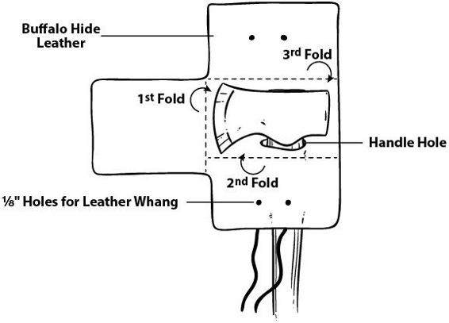
如果可能的话，你应该跪着劈柴，这样可以在你错过原木时减少斧头的移动距离。这样可以让你的腿远离可能的接触，让你保持比站立更安全的位置。要做到这一点，跪在铁砧前面并调整你的位置，这样当斧头在铁砧中间时，你的手臂是伸展的。在这个位置，斧头可能会击中地面（虽然这不是期望的），但它永远不会摆动到你的腿或脚。永远不要用刀具做斧头能完成的工作，但要注意你的柴火越小，用重型工具处理就越危险。
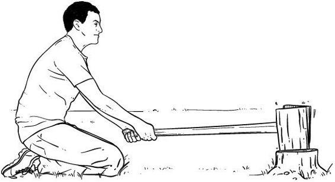
安全的劈柴姿势
另一种劈木板的方法是将其水平放在铁砧上而不是垂直放置。这将减少失误的空间，并允许轻松劈成引火柴大小。记住在劈任何木材时，它往往会飞向铁砧的左边或右边；开始前应该清理这些区域的人员或装备。一旦你将木材处理到小于手腕大小的木块，你可以使用复合铁砧来最终劈开较长的木块。将所需的木块水平放在铁砧上；一旦你进行了击打并且斧头穿透木材进入铁砧，保持斧头不动并将木材拉向一边以完成劈开。
你应该能够将一根直径8英寸、长约12英寸的原木在必要时处理成88块引火柴，或处理成任何需要的衍生品。使用至少2英寸直径的木块作为燃料源，使用不超过大号2号铅笔大小的木块作为引火柴。记住较硬的和绿色的木材会燃烧更久，但较软的枯木会更快点燃，所以根据你的条件，可能需要组合使用来建立良好的火堆。
砍伐树木可能对环境产生影响，所以不应该轻率进行。总是使用枯木进行任何建设，并在可能时使用较小的幼树。如果有必要砍伐树木，在继续之前考虑以下事项：
选择能满足你需求的最小可用树木。
确保安全区域没有任何装备或障碍物。（这包括可能影响预定树木倒下的其他树木。一棵半途卡在另一棵树顶的树木会带来全新的问题。）
确保你在树木将要铰接的区域后面有良好的逃生路线。
要了解砍伐树木前必须创建的安全区域，你需要知道树木有多高，这样你就知道需要多大的区域。为了实现这一点，你可以使用指南针倾斜仪。远离树木，直到将指南针对准树顶在倾斜仪上显示45°角。此时，你距离树木的距离将大约等于其高度。
丛林技巧(Bushcraft Tip)
如果你没有指南针，使用任何测量装置。我通常在斧柄背面以1英寸为增量烧刻标记。从树基开始测量，在方便的高度如5英尺处系一根绳子。远离树木，直到你能在斧头上的1英寸标记内捕捉到那5英尺的高度。此时，向上看树顶，计算出树木有多少个斧头标记那么高，然后乘以5英尺得到树木的大致高度。
砍伐大树应该只由有经验的丛林技能者(bushcrafter)尝试，因为这可能很危险。要选择承重等级的树木且仍然相当安全，使用”环抱测试”。拥抱你选择的树木，如果你能用右手触摸到左肩，或反之亦然，那么它的大小对于单独处理或没有很多经验的人来说是安全的。总是尝试在平地上砍伐，在倒下树木的路径上没有大石头或其他支撑点。检查安全区域——预定砍伐方向180°的区域——确保所有人员和设备都已清理。
要砍伐树木，采取在树木一侧砍伐的位置——永远不要在后面——距离一个完整斧头长度。检查确保你有逃生路线并已清理了该区域的缠绕物等。
砍伐树木需要进行两次切割以形成铰链，使树木倒下而不会断裂。（如果树木断裂，它可能会向后踢，可能造成伤害。）第一次切割在树木前部沿预定砍伐方向进行，称为底切或前切口。这将是一个底部平坦或垂直、顶部呈45°角的切口。这个切口的高度应该约为树木直径的一半，切入树木略超过三分之一。第二次切割在树木背面与砍伐方向相对的一侧进行，称为砍伐切口。它用锯子或斧头进行，设置时使任何角度切割的顶点比前切口顶点高约2英寸。这将形成一个铰链，使树木向前倒下。这个切口应该只有树木直径的约三分之一，以便留下铰链。楔子用来促进树木向砍伐切口方向的动量。
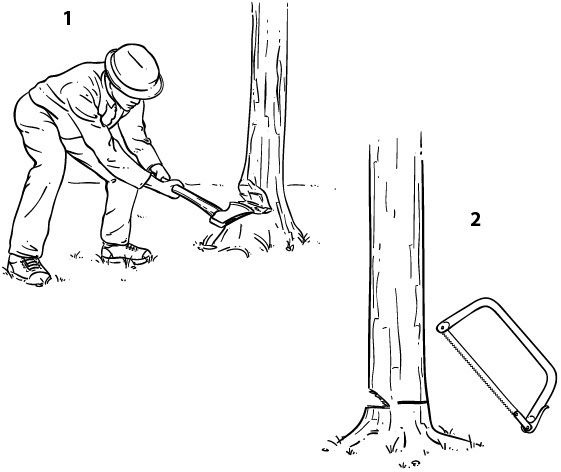
砍倒树木后，或者如果您想处理一棵枯木，您需要削枝（即修剪掉树枝），用于进一步加工或收集柴火。削枝时，始终站在您打算切割的树枝对面的树干一侧。这样，斧头永远不会击中您。要削去倒在地上的树木的树枝，始终从树枝与树木连接处的背面切割，而不是切入分叉处或连接的顶点。切入分叉处往往会导致树木分裂，无法干净地切断树枝。
将原木切割用于劈柴（“截断”）或用斧头开槽以便用于建筑，通常像使用锯子一样，通过三脚架支撑来完成。（三脚架支撑意味着使用三脚架支撑要切割的区域，这样您就有了原木或树枝的自由悬挂端，并且刀片不会卡在切口中。）用斧头截断原木时，使用V形切口并滚动原木进行四次切割，完成分离。在原木上切槽时，如果可能的话，您应该实际站在原木上进行切割。如果原木直径太小无法舒适地站立，则站在您要切割的一侧的对面。永远不要在原木顶部进行切割，而要始终在侧面进行，以避免意外偏斜可能造成伤害。
为了制作板条、木板或木瓦，制作一个大木棒，这样您就可以使用斧头的刀片代替froe（劈具）（froe是一个连接在手柄上的扁平金属切割刀片；它与木棒一起使用，在制作木瓦时从木材上劈出薄的平板）。与战斧头一样，这将允许您以更受控的方式将斧头用作楔子，从纹理很重的硬木或雪松上劈下这些物品。
与任何工具一样，您的斧头需要细心呵护才能保持峰值效率。这包括存储、维护和刀片磨锐。以下是斧头保养的一些基础知识。
购买斧头时，要特别注意手柄的纹理。手柄应该由山核桃木制成，并且具有沿手柄长度方向的直纹理，边缘没有跑纹。（跑纹可能导致手柄在使用过程中分裂。）手柄内不应有节疤。边材手柄比硬木更好，但两者混合也可以。使用后用亚麻籽油处理您的手柄以密封它，因为表面会磨损，容易干燥并可能开裂。您这样做的频率取决于湿度、温度和使用情况。
保养斧头头部与保养任何其他高碳工具没有区别。它会生锈，所以必须保持润滑。同样，我通常为此目的使用橄榄油（虽然我很少使用斧头进行任何食品加工）；这使保养我所有工具和金属装备保持一致性。
就像刀子一样，磨锐或磨刀时有几种工具可用。一块具有中等和细磨粒度两面的金刚砂石可以满足95%的需求，您可以在野外携带一块小的。Lansky制造了一种称为圆盘的工具，这是一个细磨和中磨双面磨锐工具，大约是冰球大小。它效果很好。与磨刀石一样，我更喜欢使用水而不是油作为圆盘的润滑剂。使用这种类型的石头时，进行圆周运动来磨锐刀片，像对待刀子一样均匀地照顾两面。如果您的斧头因错过挥砍或偏斜而出现严重缺口，您可能需要一个细锉刀来去除缺口。然后用石头磨锐它。
使用锉刀时，将斧头放在稳定位置，按照磨削角度将锉刀推向刀片或远离刀片，取决于您的偏好。要去除这些缺口或凹痕，缓慢均匀的行程既安全又准确。磨砺斧头是不必要的，因为细石头会使您的切割刃足够锋利。与刀子一样，斧头的磨削角度各不相同，遵循现有角度是最好的。
楔子在树林中对许多任务都很有用，但我们在这里只讨论几个。您可以用木头制作它们，但强烈建议您至少携带两个预制的楔子。由ABS塑料材料制成的楔子便宜且重量轻；它们可以轻松携带并且可能是救生工具。
一旦你砍下伐木切口，树木开始朝预定方向倒下时，在伐木切口中放置一个好的楔子，用斧头的钝端（“锤头端”）轻击楔子。当然，这应该小心操作，绝不要站在树木的正后方。
[楔子用于劈柴]
劈整根原木时，在做出初始劈砍切口后，使用几个楔子来帮助沿着原木的轴线劈开。随着原木开始劈开，依次用木棒将楔子敲入裂缝中。
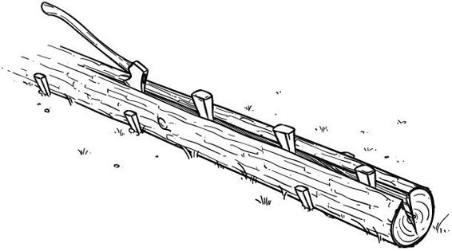
[楔子解救你的刀具]
在用刀进行木棒敲击或劈柴时，有时你的刀刃会卡在正在劈开的木块中。如果发生这种情况，将楔子放入初始切口中，用木棒敲击楔子来打开缝隙并解救你的刀刃。
制作一个简便、便携的磨刀板：用双面地毯胶带将1200目湿磨砂纸贴在油漆搅拌棒上。
如果斧头把手断裂需要更换，最好的移除方法是烧掉它。将刀刃部分埋入土中直到斧颊，然后在斧眼周围生小火来移除旧把手材料，而不会破坏刀刃的回火。
如果你的刀具没有能够从镁棒(ferrocerium rod)上刮取材料的90°刀背，你可以用平锉和虎钳小心地移除材料并使刀背成直角。
要快速为高碳钢刀刃添加保护性锈蚀层以防止生锈，可以使用青黑色胡桃果壳的汁液；大量涂抹在刀刃上并静置两小时。这会给你一个漂亮的黑色锈蚀层。然后上油并储存。
要为弓锯的刀刃制作安全护套，可在春季砍下杨树幼苗，纵向劈开树皮。将树皮从木头上剥离，包围刀刃，然后晾干。
绳索、绳线、织带
和绳结
“普通人对制作哪怕最简单绳结的技艺了解如此之少，这实在令人惊讶。”
—R.M. 亚伯拉罕，《冬夜娱乐》，1932年
你必须携带绳线作为装备的主要元素之一，因为它在制作其他物品时非常有用。你也必须携带它，因为用天然材料大量制作绳线很困难，而且会花费大量时间。绳线在生火、捆扎、绑缚方面很有用，在捕猎、钓鱼和许多其他事情上也很有帮助。因此，仔细审视你选择携带的绳线很重要。就像五C的所有其他元素一样，它必须能够胜任多种任务。虽然绳线(cord)和绳索(rope)实际上是同义词，但在本书中我们将直径小于1/4英寸的称为绳线，将直径大于1/4英寸且由多种纤维制成的（无论是天然还是合成的）称为绳索。
一些绳线，如军用550绳线（伞兵绳），有一个叫做护套的外层。这是一个编织护套，通常由聚合材料制成，覆盖内部的股线或绳线。在真正的550绳线中，护套内有七股绳线。550绳线在露营领域很受欢迎，因为大多数生存类手册都提到这种绳线；它们这样做是因为许多早期的生存手册主要基于军事理论，而军队有大量的550绳线。在早期，绳索和绳线由天然材料制成，如大麻(hemp)、棉花、黄麻或剑麻。
有许多类型的绳线可供你在野外使用，但我发现船舶用涂焦油扭绞尼龙细绳是当今可用的最优秀绳线。它由三股合成材料纤维编织而成。它有从约80磅测试强度到超过500磅测试强度（这些数字指的是细绳的抗拉强度）的各种强度等级，直径细且包装实用。传统伞兵绳(550)的最大缺点是它只有在原始状态下才真正有用。一旦护套被移除，七股内芯股线往往会分离并容易磨损。这使得通过分解来扩展绳线数量或减小直径以满足手头需要变得困难。伞兵绳在制作临时钓鱼诱饵和竹竿的连接线方面效果很好（连接线是天狗竿(tenkara rod)末端的连接编织线；见第10章）。然而，涂焦油船舶绳线容易分解为三股较小的纤维，有焦油涂层保护其免受紫外线伤害，在用于捆扎或绑缚时能很好地自我粘合。我通常携带1磅装的两种不同尺寸：#12和#36。#12非常适合制网和钓鱼，而#36适用于任何重型捆扎和绑缚，或作为防水布拉绳。
与绳线不同，我更喜欢绳索是天然材料制成的，如大麻。主要原因是它的可燃性，这有助于生火和制作鸟巢（稍后讨论）。绳索可用于许多用途，如临时背包和铺盖卷带。它可以作为最外层衣服的腰带佩戴，以保持鞘刀和腰包随时可用，而无需在外套或毯衫下摸索。你也可以将绳索用于许多营地杂务，如悬挂猎物进行处理、拔帐篷桩、悬挂吊床，或临时制作绞盘来移动重物。我建议在独自徒步时始终携带约两根12英尺长的绳索和一根25英尺长的绳索。
管状织带用于攀岩，因此具有很高的抗拉强度以防止断裂。与绳索相比，它有一些优势，重量更轻、占用空间更少，抗拉强度更高。当你用这种材料制作临时绑带等物品时，你会发现长距离携带时比绳索舒适得多。由于织带是平的，你能够携带更多的织带。由于织带通常比绳索占用空间更少，如果空间和重量允许，我建议携带两段20英尺的织带和一段50英尺的织带。这种材料可以做绳索能做的任何事情——在大多数情况下还能做得更好，除了帮助生火。你可以像我一样，总是两种都携带一些。
驴带(Mule Tape)是一种没有内股的外套，电工使用。相对于其尺寸，它具有很高的抗拉强度，你可以携带100英尺而只为背包增加大约一磅的重量。莫尔斯·科坎斯基(Mors Kochanski)，北方丛林技能教练和知名的加拿大作家，非常相信这个产品，我尊重他的意见。然而，就像装备的所有其他组件一样，环境是一个非常重要的考虑因素。在东部林地，有很多荆棘、猫爪刺和普通的刺，随着时间的推移，外套型绳索或绳索因纤维和编织的磨损而不可行。然而，如果你的环境允许，它非常适合所有较重绳索能够胜任的工作。
制作天然绳索 要制作天然绳索，首先你必须知道用于此目的的正确材料。根据其应用，它必须相当坚固，并且必须在四个季节都能获得。在东部林地有许多植物和树木可以制作天然绳索。要用天然材料制作一根强度尚可的单股绳索，你只需要找到藤蔓或地面上云杉树的根部。其中一些可能相对坚固，最好在需要之前通过收获一段并尝试在绳索中打一个简单结来测试你所在地区的材料。如果这样做会使绳索断裂，它可能不适合某些任务，但如果你可以在手指上缠绕三到四圈而它不会分裂或断裂，它可能适用于某些应用。
反包双股绳索
要在东部林地制作这种类型的绳索，最好的材料将是胡桃木(shagbark hickory)或郁金香树(黄杨木)的内树皮。东部林地以外植物纤维的其他选择有丝兰(yucca)和荨麻，以及罗布麻(dogbane)。黄杨木是迄今为止最容易的，可以制作出适合大多数应用的任何直径的优质坚固绳索。最近倒下的或死亡倒下的杨木是最不理想的绳索材料，但将是最容易收获的。用刀撬开这种树皮的边缘并剥离它；根据树枝或树木，它应该以长条状脱落。然后去除外树皮以获得内树皮纤维。为此，将这块材料在粗糙树皮的幼树或绳索周围摩擦；这将松动并去除外树皮。一旦获得纤维，你需要将它们进一步加工成更小的股线，然后成组股线以获得所需直径的绳索。
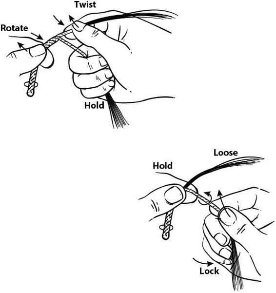
当你准备开始时，将股线分成两个单独的束。同时握住两个束但保持它们分开，一次一个地朝同一方向扭转它们。之后，将两个束捏在一起并朝相反方向扭转两个束（即，它们被反向包裹，首先朝一个方向扭转，然后朝另一个方向扭转），然后重复整个过程直到完成。最好从两个不同长度的束开始，这样你可以将另一个束拼接到绳索中以增加长度。一次只在一侧进行，永远不要同时进行。当你到达最短束的末端大约1英寸时，在那一侧添加另一个束，将其与尾部扭转并使其成为一个束。然后，正常继续反向包裹，直到拼接在绳索内。如果需要更强的绳索，你总是可以使用两根完全加工的绳索，并用相同的工艺将它们绳合在一起。这将给你大约相同直径单股绳索原始强度的三分之二。同样的技术也可以用于海员用焦油浸过的扭转尼龙细绳等绳索，以创造更强的绳索。
基本和有用的营地绳结 绳结是所有绑扎和捆绑的基础，对于固定从货物到拴扣的任何东西都是必不可少的。我们在日常生活中使用绳结，有数百种可供选择。经常练习绳结直到你掌握它们；你应该能够背着手和蒙着眼睛打结，这样如果需要的话，你可以不假思索地做！无论你是将装备绑在框架上还是建造避难所，绳结、绑扎和捆绑的使用都是一项关键技能。许多绳结将允许你回收否则可能需要切断的绳索，这将节约重要资源。适当的绑扎可能意味着避难所能经受风暴或在雪的重量下倒塌之间的差别，以及背包框架持续数年或在周末徒步三英里后断裂之间的差别。
在数百种可用的绳结中，本节只涵盖我认为对丛林技能必不可少的几种，以及绳索回收对保存资源的重要性。我们将讨论三种基本类型的绳结：滑结、捆绑结和静态结。滑结，顾名思义，通过一根线在另一根线的一个或多个环中的滑动而收紧。捆绑结通过绳索对绳索的摩擦收紧。静态结是独立的绳结，不需要进一步的动作来起到绳结的作用。
制动结
制动结(Stop Knot)是一个简单的八字结，用于绳索末端以防止绳索滑脱。这种结与任何其他结配合使用都能起到很好的安全保障作用。通常，你需要在这个简单的八字结之外留出一些绳尾。对于任何绳索或绳结，你都应该在标签端打一个简单的八字制动结，以确保即使绳结松动，也不会完全散开。制动结能防止绳索完全滑脱。
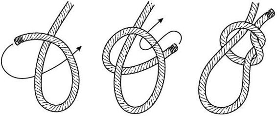
称人结(发音为BO-lin)是四种基本水手结之一。这是一个独立的结，也是救援行动中使用的主要绳结。即使在负载下，这种结仍能保持绳索三分之二的拉伸强度，非常适合在任何绳索末端制作静态环圈。这种结的唯一缺点是在重载下容易滑动或松开，这取决于制作绳结所用的绳索。不过，在绳尾打一个制动结就能轻松解决这个问题。
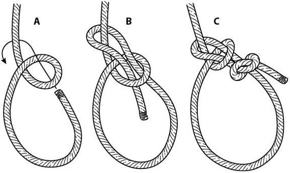
称人结最适合用于需要环圈穿过绳索并围绕物体收紧的绳索末端应用，比如庇护所的脊线。即使绳索承受很大压力，这种结也很容易解开。它适合与其他结(如云雀头结)配合使用，用于防水布拉绳，也可用于绳索末端的拴扣。
这是一种自紧式绳结，可用于各种情况，从用制动结连接拴扣到将一根绳索连接到另一根绳索以便从拴扣上悬挂物品。云雀头结由两个简单的环圈组成。但是，如果在非常重的负载下左右拉扯，这种结会滑动(不像prusik结)。它很适合用于防水布调节绳，特别是使用两根不同直径的绳索时，云雀头结用较细的绳索打。我认为这是林中使用的第二多功能绳结。
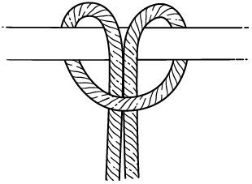
云雀头结
卡结是一种滑结，与制动结配合使用时，能卡住绳索环圈使其围绕物体收紧。通过拉动制动结部分的绳尾可以轻松解开这种结。这是适应性最强的绳结之一。
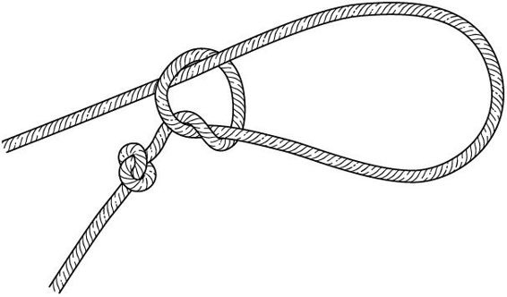
卡结
这是两个滑结的组合，用于使绳索保持张力和绷紧状态。当绳索必须拉紧但仍需要轻松解开以便调节或回收时，可以用于任何应用。
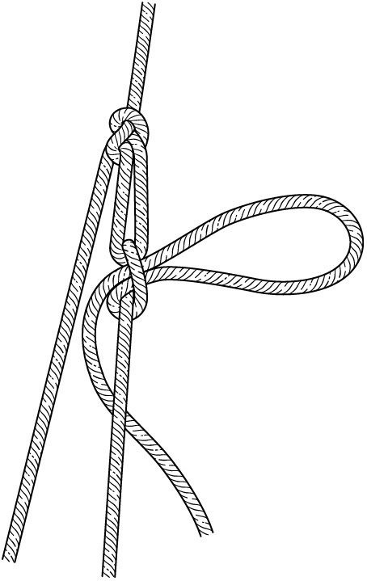
货车结
普鲁士结用于将绳索环圈连接到另一根直径更大的绳索上。当对环圈施加张力时，它会收紧，使其紧贴在较大的绳索上。这是一种承重结，用于攀绳或在湍急水流中管理绳索交叉，因为它能轻松向前或向上滑动，但在摩擦力作用下会再次自紧。这也是一种用于保持与防水布和庇护所拉出点连接的绷紧绳索的绳结。
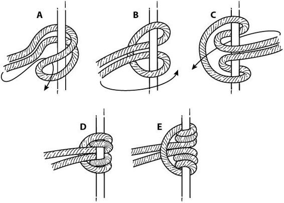
普鲁士结
这些结是简单的八字结，用于从单根绳索制作绳索环圈。这也是一种滑结，拉动时会对着相对的结收紧，但通过拉动绳尾可以轻松松开。这些环圈在普鲁士结和云雀头结配置中非常有用。
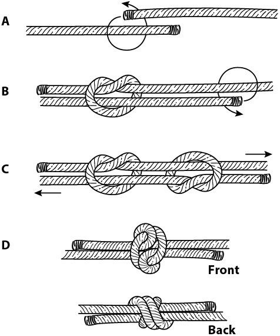
渔人结
木材结是摩擦结。木材结在压力下会与自身结合，用于绑扎、弓弦、脊线等应用。
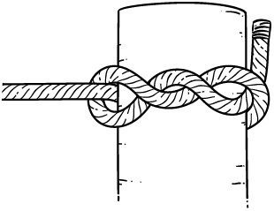
这种结也是四种主要水手结之一，如果你需要在设置后调节绳索，它非常有用。当绳索的任一端向结推动时，结会松开，但在较小直径的绳索中更难松开。它是绑扎的良好结束结，因为它使绳索回收成为可能。
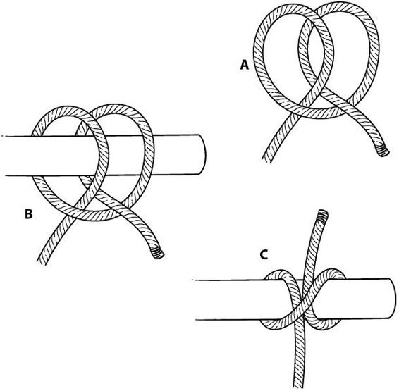
绑扎用于从自然环境中构建承受一定负载或用于支撑其他物品的物体。三脚架、背包架、露营家具和A字形庇护所支撑都需要绑扎来增强强度。对于基本的丛林技能(bushcraft)，你需要了解直绑或剪切绑扎以及对角或交叉绑扎。剪切绑扎用于将两个物体并排绑在一起然后分开，使绑扎进一步收紧。对角绑扎用于绑扎时相互交叉的木棍，比如Roycroft背包架的顶部。
捆绑用于防止物品分离或散开。例如，你可以用捆绑来包裹切断绳索的末端，防止绳端进一步磨损。你也可以用捆绑来装柄，比如将刀片或箭头装到手柄上。有时捆绑与粘合剂配合使用，有时不用，这取决于具体应用。
开关夹(Toggles)是林务员知识宝库中最有用的物品之一。它们几乎可以用于任何用途，从搭建庇护所到烹饪到设陷阱，甚至打包和携带装备。开关夹是一根简单的木棍或销钉（大小取决于需要），通过绳结连接到绳索上。这可以用作简单的连接点，易于移动或拆除，并且在需要时可以承重。
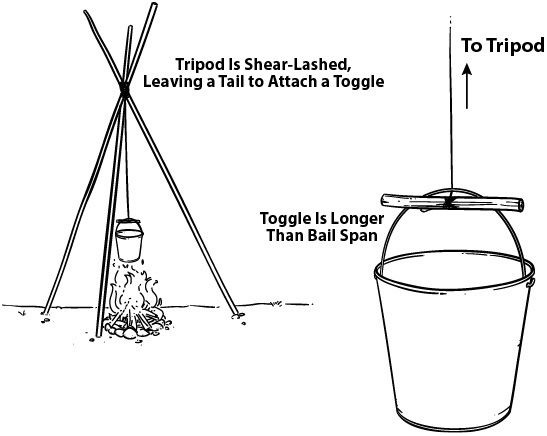
在绳索中用云雀头结(lark’s head knot)和夹紧结(jam knot)系上的开关夹非常适合悬挂装备，如背包、行囊，甚至枪支，以保持它们不接触地面。
由天然纤维如棉花制成的绳索非常适合用作炭化慢燃引火绳(charred slow match)。将一段放入铜管等管子中，点燃少量暴露的末端，然后吹灭以炭化材料。然后你可以轻松地用铁镁棒(ferrocerium rod)或打火石和钢重新点燃引火绳以产生大火星。通过将绳索向上穿过管子，你可以延长其燃烧时间。使用约12英寸的3/8英寸绳索和类似长度的6英寸铜管或黄铜管。要熄灭火星，只需将燃烧端拉回管子中。
要用动物生皮制作绳线，将你的刀子插入树桩的一部分，以圆形方式薄薄地切片生皮。刀子固定在树桩中，生皮被拉向刀片进行切割。这将给你比试图沿着生皮长度切割更长的单根绳索。
记住基于尼龙的绳索，如降落伞绳(parachute cord)，如果燃烧会熔化。通过仅使用这种绳索的外套并熔化它，你可以制作紧急粘合剂或为小孔打补丁，如容器中的小孔。
确保任何天然绳线不要在潮湿状态下储存；这会导致霉变并破坏纤维。
“装备越简单，管理它所需的技能就越多，人们从成就中获得的乐趣也就越多。”
—霍拉斯·凯普哈特，《野营烹饪》，1910年
在每个好的装备中，你都会找到加热水、烹饪食物以及制作药用茶和煎剂的物品。有许多类型的容器和烹饪器具可供选择，现代超轻野营时代为你提供了比以前更多的选择。选择由合适材料制成的瓶子、杯子、锅和平底锅是一个重要决定，应该反映你在野外的需求。因此，在进行任何购买或冒险进入野外之前，了解不同的炊具材料至关重要。
从十九世纪中期到二十世纪早期，徒步携带的大部分炊具都是由铝或钢制成的。早期的探险家也使用锡、铜和铸铁烹饪工具。现代技术已经生产出各种各样的不锈钢产品供你选择，以及超轻钛炊具。（实际上，你可以购买几乎不重的炊具；一整套现代炊具的重量大约相当于100年前制造的单个物品！）然而，轻质材料随着时间的推移不能很好地磨损。我发现虽然钛在快速加热方面很棒，但它在直接火焰下也非常容易变形。如果你要用野营炉做饭，它可能很棒，但对于想要在明火上烹饪食物的真正野外生存者来说，它达不到标准。
不锈钢坚固而有弹性，保温性好，在用油润滑时烹饪效率高。它确实有一个缺点：与钛和铝相比非常重。铝是弹性、传热和重量方面最好的材料之一。在1960年代和1970年代，围绕铝炊具和产品存在很多争议，当时科学家担心铝与阿尔茨海默病之间存在联系。然而，最近的研究未能证实这一点。今天，可以获得阳极氧化铝，它们被涂层以去除在加热和烹饪过程中与食物和液体的直接接触。钢、不锈钢和阳极氧化铝都是可接受的选择，取决于你的个人口味和偏好，但不锈钢在纯耐用性方面是赢家。
容器对任何装备都至关重要；它们是五大要素之一，因为在野外用天然材料制作盛水容器很困难。关键是你必须有能力通过加热来消毒水；同样，在你体温过低时，通过加热液体快速重新加温可能是救命的。谈到林地徒步旅行，水瓶是一个新物品。在内斯穆克(Nessmuk)和凯普哈特时代，水壶是可用的，但很少被提及作为日常携带。今天我们更熟悉水传播的病原体，因此关心我们水容器的质量。无论如何，你必须确保你饮用的水的质量。
塑料水瓶是浪费时间和金钱的。你选择携带的任何容器都必须能够承受直接火焰。疾病控制中心(CDC)和荒野医学会(Wilderness Medical Society)都认为，消毒水以确保安全饮用的唯一百分之百可靠的方法是将其煮沸。在海拔5000英尺以下的正常高度，一旦水沸腾翻滚，这样的受热接触时间就足以杀死所有活的水传播威胁。要做到这一点，你必须有一个金属容器。我推荐至少能容纳32盎司的不锈钢水瓶。这意味着你必须每天煮沸水四次来维持正常的身体功能。更小的瓶子意味着更多的煮沸次数，而更大的瓶子如果装满水会成为重量负担。如今市场上有许多优质水瓶，但要确保你购买的是一体式结构的，这样在火中使用时更加耐用。
市场上很少有高质量的金属水壶。我知道的唯一不锈钢水壶是由Self Reliance Outfitters销售的，配有杯子和炉架。市场上的铝制水壶没有经过阳极氧化处理，也不如不锈钢耐用。
你可以使用绳结和绳子将水瓶或水壶悬挂在火上，或在加热完成时将其取下。要做到这一点，用丁香结(clove hitch)将绳结稍微偏离中心绑定。这样当没有张力时，绳结可以轻松地转动到位和离开位置，但在悬挂时会锁定在瓶子的肩部。
杯子有与瓶子相同的材料，许多杯子设计成可以嵌套在瓶子底部。一些杯子配有炉架。你携带的任何杯子都是个人选择。过去的许多丛林人(woodsmen)认为他们的杯子具有特殊意义；他们的杯子会帮助在森林中”顺利度过”。Noggins或kuksas是通常由木材制成的杯子，尽管也有复合材料和ABS塑料版本。原始的瑞典kuksas是由坚固的橄榄绿塑料制成的。一些金属杯子上刻有或压印有测量标记，这使它们成为野营烹饪的好选择。
军用水壶杯主要由不锈钢制成，但手柄配置各不相同，从折叠式单带手柄到蝶形手柄。单带手柄使杯子在地面上更稳定，它们可以通过在带子上添加”D”环来轻松改装。这样就可以添加一根棍子作为更长的手柄，使烹饪更加愉快（这与瑞典烹饪套装非常相似）。对杯子的另一个简单改装是在边缘下方垂直于手柄的位置钻孔，直径约为1/8英寸。这样你就可以使用鱼嘴张开器(fish mouth spreader)作为杯子的吊环，使其可以用作悬挂锅。许多盖子也适用于杯子（普通式和军用水壶杯），使它们成为更多功能的烹饪锅。对于瓶子和水壶，不锈钢烹饪炉是美国军用水壶杯炉环的新技术改进。这种炉子嵌套在杯子下方，允许你使用Trangia或其他酒精炉来代替火进行加热和烹饪。（如果你在营地短暂停留，或者明火是环境问题时，这特别高效。）这些物品也可从Self Reliance Outfitters获得。
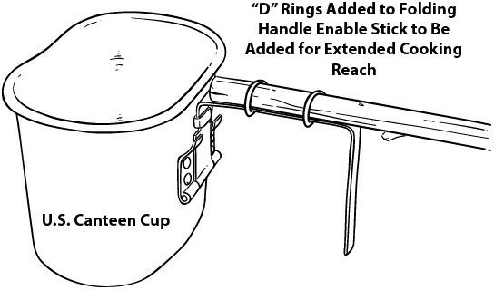
丛林锅和烹饪套装是过去丛林人携带的最常见物品之一，现在同样重要。这些物品有时可以嵌套，这样几件物品可以在背包内的一个空间中携带。在他的书《野营和丛林技艺》(Camping and Woodcraft)中，Kephart说对于个人装备，不超过一夸脱的锅是必要的，而且应该容易装入背包。瑞典烹饪套装非常适合满足你装备的这部分需求，但不幸的是它们很难找到。通常，它们由铝和不锈钢制成，配有炉架和Trangia炉；盖子变成浅锅或饮水杯，主体是1.6夸脱的烹饪锅或”Billy Can”。通过剩余物资，有许多来自欧洲国家的类似烹饪套装可供选择。单个1夸脱的锅应该不难找到。Zebra制造多种尺寸的不锈钢锅，Self Reliance Outfitters提供阳极氧化铝和1.8夸脱尺寸的不锈钢丛林锅。
如果你不关心丛林锅的盖子，你可以用任何不锈钢挤奶式桶或其他食品安全的金属容器制作一个。在容器边缘附近钻吊环孔，使用#9陷阱线作为吊环。这个锅会成为夜晚篝火旁的熟悉朋友，一段时间后你会发现在你的老朋友中烹饪的任何东西都味道更好。如果丛林锅有安全的盖子，它在背包中提供了良好的干燥储存空间，也是存放生火用具的好地方。某种烹饪锅以及不锈钢瓶子和杯子为你在任何条件下提供了相当可靠的组合。
有几种方法可以将丛林锅悬挂在火上进行烹饪或加热水。最有用的是三脚架、吊臂和可调节锅钩。
三脚架
三脚架是通过剪切绑扎三根等长的木棍制成的，直径约为1英寸-2英寸。这些木棍在未绑扎的一端应该楔入或削尖，以防止它们在湿地或雪地上滑动。绳索要留出足够的长度，这样在绑扎后，你可以在绳子上绑一个拨杆(toggle)，通过缠绕在三脚架顶端来调节锅子在火上的高度。拨杆应该比吊环的顶部跨度更长，以便通过楔入来固定。使用V型槽口和双套结来绑扎拨杆。你可以轻松地小幅调节高度，并左右移动三脚架的腿来控制锅子与火焰的距离。移动三脚架时不要摆弄绳索或锅子。
起重机有很多种类型；有些相当简单，有些则比较复杂。简单总是最好的，而且大多数时候也更坚固。最基本的起重机包括一根木棍和一个叉子。长木棍一端削尖，另一端用木屋槽口切出凹槽。将长木棍的尖端插入土壤中，然后在下面放置一根带Y形叉的木棍来固定木棍。这些部件可以调节以增加或减少角度，抬高或降低锅子。锅子通过吊环悬挂在木屋槽口上，这样可以防止它滑下木棍。
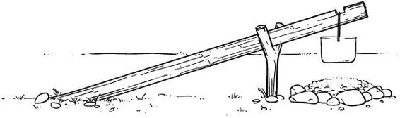
悬挂锅子的另一种方法是使用锅挂钩或吊环棍(bail stick)。这根木棍应该有多个调节点，以便在横棍、两根相距几英尺插入地面并在中间横置一根水平木棍的叉子，或在顶部有平角和与吊环槽口配合的凹槽的起重机上抬高或降低锅子。如果你使用横棍，那么你需要在木棍内设置几个叉子来调节。最终，为这项任务雕刻槽口通常比找到天然具有这种叉子或槽口的木棍更容易。另外，记住：当使用叉子制作任何东西时，不要使用真正的分叉树枝，因为这些容易分裂。相反，要使用另一根树枝从树上生长出来的切口，这样你就是在一个直的向下平面上敲击，并且总是用斧头劈开要敲击的区域，以防止它向外蘑菇状展开。

平底锅是一种浅的烹饪锅，为旅行者提供了煎炸食物的能力，同时也提供了一个进食的盘子。当然，如果我们满足于从锅里喝汤、从火中吃灰饼，或从火上的绿棍上吃烤肉，我们根本不需要平底锅。但你真的想那样做吗？平底锅为我们提供了在使用一些动物脂肪或油脂时煎炸食物的能力。对于较长的旅程，煎炸食物可以为味觉带来不错的变化。
前面提到的瑞典烹饪套装有一个可以变成浅碗或平底锅的盖子。然而，如果你没有这些套装中的一套，市场上有许多由铝、涂层铝、不锈钢和钢制成的平底锅。携带一个额外的平底锅是很值得的，因为它很实用。尽量选择有某种折叠手柄的，或有插槽可以插入木棍的。如果你只是在寻找一个盘子来存放食物或进食，许多锅盖也可以用于这些目的。
你可以通过使用另一根分叉木棍作为两个叉子之间的水平杆来制作一个简单的肉类烤叉。在木棍远离叉子的一端削一个尖，然后从尖端向上劈开约2英寸。将劈开的木棍末端穿过一块肉，然后将劈开的部分绑在一起以对肉施加挤压压力。将烤叉放在你插在火的两侧地面上的两根垂直分叉木棍上，这样可以根据需要旋转肉类以确保均匀烹饪。如果肉是野味动物，将串肉扦穿过肉和分叉木棍来稳定并保持胸腔张开；这将导致更均匀的烹饪。
野外生存技巧
除了用于消毒水和煮肉的水桶外，你几乎可以用天然材料制作所有需要的烹饪工具。本节讨论的所有起重机、锅挂钩和食物处理工具都是用木棍制成的。
木板(planks)是从较大的木块横截面切下的木片，用作面包和班诺克饼(bannock)等食物的烹饪表面。这些木板应该是非树脂性木材，以免影响味道；也优选硬木，这样食物可以靠近火源而不会有烧焦木材的风险。你可以使用木板烹饪几乎任何面包或面包相关的食物，但面糊必须稍微厚一些，因为木板通常倾斜在另一块木头或石头上以使糕点暴露在热量中。然后旋转和操纵它以利用来自炭火的最佳慢烹饪热量。
除了鞘刀和折叠刀之外，你不需要更多工具，因为你可以用这些工具制作任何其他器具。你最需要的便利物品之一是一个勺取设备，用来将煮熟的食物从锅里盛到嘴里。许多食物和液体可以直接从容器中饮用，但如果你想要勺子，制作一个并不费力。取一根约8英寸长、4英寸粗的分叉树枝。分叉可以在一端雕刻成手柄，然后要么用火中的木炭烧制碗部分，要么用刀挖出凹陷。你可以用同样的方法制作铲子；按照制作勺子的程序，但不是挖空碗部分，而是将末端切平。如果你发现需要叉子，一根简单的分叉木棍就能胜任，就像任何金属叉子一样。（如果你不想直接从火上烤肉的木棍上吃肉，或者需要从锅里夹出肉块，这可能是必要的。）如果你需要夹子，制作它们是一个简单的项目。使用一根新鲜的树枝，在树枝中间切开。然后，将新鲜的树枝对折。一根简单的木棍可以用来搅拌茶或咖啡中的糖。
在实际烹饪时，无湿气的平整岩石可以制作很棒的烤架表面。根据石板的厚度，你可以在石头上烹饪从鸡蛋到牛排的任何食物。将石头用作火背衬也能很好地保持热量，用于其他烹饪方法，比如烤肉架。围绕火堆摆放的石头可以用于从锅具或平底锅加热器到实际烘焙的任何用途。
自拓荒者时代以来，铸铁烹饪一直是优质营火烹饪的标准。人们说没有什么能像铸铁一样烹饪，一个保养良好的铸铁平底锅或锅子是传家宝。然而，铸铁的主要问题是重量。除非你有某种运输工具（如独木舟、马匹或全地形车），否则即使是最小的铸铁炊具也会大大增加你的负重。但是，如果你有选择，铸铁为营地或小屋周围的烹饪提供了便利和多样性。一个2夸脱的荷兰烤锅和一个能装下烤锅盖子的平底锅是营地烹饪的绝佳组合。
野外技巧
如果你想让铸铁锅具保持调味状态，避免用肥皂清洗。（调味意味着铁的气孔被油脂饱和和填充；这使炊具不粘，同时为其中烹饪的食物增添风味。）当你用调味良好的铸铁炊具烹饪完成后，用抹布擦拭干净并收好。如果有东西粘在表面上或你意外烧焦了食物，只用水装满并在火上煮沸，然后擦拭并彻底干燥。永远不要在铸铁上使用钢丝刷或肥皂。大多数新的铸铁锅都预先调味。如果你的没有，或者你买的是生锈的二手货，用钢丝绒清除锈迹，用大量食用油或猪油擦拭，然后在火上加热。根据需要重复此过程，直到油在锅中凝固。此时，你可以倒出多余的油并像往常一样擦拭。
有许多类型的烹饪铁器和铁匠铁艺制品；本节涵盖的类型是营地使用最有用和最多功能的。铁很重，所以如果你要携带这些，大部分时间你需要某种运输工具。
“松鼠烹饪器”，就是这样称呼的，是一种非常有用的烹饪铁器，由两根约床卷长度的铁棍组成。它们可以用于烹饪肉块、在火上悬挂锅子，或作为拨火棍来搅拌煤炭和在火中摆放木头。这两根铁棍的另一个用途是，如果放在锁孔形火坑上，可以作为平底锅烤架。要将松鼠烹饪器用作锅架或肉叉，将一根铁棍的锅架端穿过另一根铁棍的猪尾（也就是弯曲成猪尾巴形状的部分），然后将猪尾部分的另一端作为立柱插入地面。这样就成为一个可以旋转的起重机，可以根据哪一边在火上用作锅架或肉叉。
另一种在营地有用的铁器与木制烤肉架非常相似。它有两个立柱和一根水平穿过两个立柱孔眼的横杆。由此，使用钩子和链条或可调挂钩的组合来调节锅子在火上的位置，或在横杆上烹饪肉类。这些设置对于正常使用来说有点不实用，因为它们很重。但是，如果你能找到轻松运输它们的方法，它们非常有用。
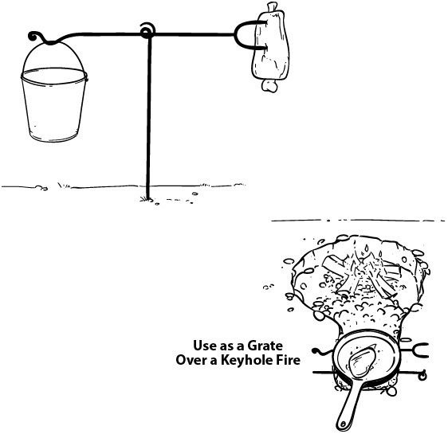
“炉具”和”燃烧器”这两个术语实际上指的是两种不同的东西。“燃烧器”是指产生火焰的装置。炉具是放置在燃烧器上方的支架、格栅材料或锅具或杯子所靠的部件。（市场上目前的Trangia和酒精”炉具”实际上是燃烧器。）为避免混淆，我在以下文本中将燃烧器称为炉具，将炉具称为”炉具支架”——这样，在搜索今天的市场时，你不会感到困惑。
市场上所有的酒精炉，无论是便士炉、可乐罐炉还是传统的Trangia炉，都采用相同的工作原理：封闭的材料芯（通常是石棉）密封在一个有限的空间内，容器底部有孔洞供酒精渗透。中央有一个储液室，液体倒入其中后会渗透到芯孔中。在储液室中点燃酒精（可以用铁铈棒或明火点燃）后，蒸汽从封闭蒸汽室内的芯中升起，通过设备上缘的小孔燃烧，形成喷射状火焰。有些人在设备中使用不同于纯变性酒精的助燃剂，但我不推荐这种做法，因为它们要么会堵塞出口孔，要么会产生大量烟雾。
大多数采用瑞典炊具套装原始设计的Trangia炉，一次加满酒精能燃烧约三十分钟，配合良好的炉架，大约五分钟内就能烧开一夸脱水。市场上的新款Trangia炉也还不错，但原版的最为耐用。网上有很多售价在20到100美元之间的原版炉，可以使用一辈子。Trangia炉可能需要更换的一个部件是用于密封盖子的”O”型环，这样可以在装满或部分装满酒精时将炉子存放在背包中。“O”型环可以在网上购买，也可以在大多数五金店找到类似的产品。这些炉子经受住了时间的考验，比现代多燃料背包炉更不容易出现问题。
炉架
炉架用于将加热的锅或杯子抬升到炉子（燃烧器）火焰上方，在燃烧喷射口和物体底部之间提供空间，允许氧气流动。有许多小型折叠式炉架可供选择；然而，许多都不提供挡风功能。瑞典炊具套装配套的炉架设计不仅是炉架，也是与套装嵌套的挡风屏，无需携带两件单独的装备。为美军水壶和杯子制作的较老式炉架采用开放式套筒设计，嵌套在杯子上，具有提供氧气的透气孔。CanteenShop.com的Robert Simpson最近为美军水壶杯设计了一款炉架，还为炉架和屏风提供了烤架顶部。与Self Reliance Outfitters合作，CanteenShop的工作人员还制作了不锈钢材质的杯子、水壶杯和bushcraft锅炉架，提供了这里提到的所有优点。请记住，您使用的任何炉架都需要与炊具套装很好地嵌套，这样就不会在背包中占用额外空间。您可以用任何大汤罐制作快速炉架，切掉罐子的顶部和底部，然后在罐子顶部和底部三分之一处钻几个孔以允许氧气流动。
烹饪任何类型的肉类时，水煮能最大程度保存动物的营养价值。也要喝肉汤；它含有关键的脂肪。
用于烹饪或直接放入火中的任何石头都不应来自溪床或河流。即使它们看起来很干燥，仍可能含有水分，加热时会导致破裂；爆炸时飞溅的碎片会造成很大危险。
火用于取暖，炭床用于烹饪。总是让火燃烧至形成大片炭床以满足烹饪需要。
总是仔细选择生火位置，考虑风向和风力，使火焰不会失控。
离开某个区域时，火应该完全熄灭，炭上不冒烟。彻底压碎木炭并散开，以对土地造成最小影响。
遮蔽
“在丘陵地带和森林茂密的地方，愉快的停留地很少难找……在平坦地区，无论是开阔平原还是有林的低地，好水源和高干的地点可能很难找到。”
—HORACE KEPHART，《野营和木工技艺》，1919年
为您的远征选择合适的遮蔽物将取决于您的环境、季节和在野外停留的时间。用耐用材料建造的良好遮蔽所可以决定是安全、温暖、干燥的夜间睡眠，还是潜在的生命威胁情况。为了帮助您为装备选择最佳选项，本章详细介绍了许多遮蔽选择，从防水布类型到睡袋和毯子，甚至是您可以临时或在紧急情况下建造的天然遮蔽所。您还将学习处理遮蔽材料和制作帐篷的基本技能，以及折叠和存储选项，以便与您的装备一起携带遮蔽所。从带有bivvy袋的现代军用模块化睡眠系统到传统羊毛毯和火堆布置，在这里您将找到选择和维护基本遮蔽元素所需的信息——这是创造抵御恶劣天气的微气候保护所必需的五个C中的另一个。
防水布或防水布帐篷的最大优势是它提供无底布足迹。帐篷中的防水底布可能会造成几个问题：
水可能从帐篷下流过并渗漏；然后防水底布会形成一个盛水桶来储存这些水。
如果水从顶部渗入帐篷，水会被底布阻挡。
没有从帐篷下方的气流或没有湿气逸出的地方，
有地面的帐篷在整夜中可能会变成冷凝水积聚的噩梦。
防水布和防水布帐篷便于携带和打包。它们也是最通用的，可以根据条件和季节进行不同的设置。这些物品最常见的材料是聚丙烯、硅尼龙(silnylon，硅胶浸渍尼龙)、帆布或油布。所有这些材料都有一定的优点，也有缺点。
聚丙烯是一种轻质材料，可以非常便宜地购买；然而，其较差的使用寿命和耐久性使其只适合短期使用。经验丰富的露营者绝不会想要拥有这种材料作为经常使用的遮蔽装置，因为它对环境的潜在影响。这种材料的另一个问题（任何材料都可能存在这个问题）是由它制成的防水布总是使用索环或金属环作为固定选项，而不是缝入材料并加固的实际环圈。最好是有固定的环圈或实际的固定点，而不是索环，因为前者提供更好的支撑并减少对材料的压力。
硅尼龙，一种浸渍硅胶防水的尼龙材料，是目前用于遮蔽防水布和顶篷最受欢迎的材料。硅尼龙的主要优点是非常轻便，可以压缩成非常小的包装以便于携带。对于希望在树林中花费大量时间的丛林工艺者(bushcrafter)来说，这种材料的主要缺点是非常易燃。许多公司仍在硅尼龙上使用索环，这会在材料受到压力时导致故障。如果你想使用硅尼龙防水布，有许多好的选择，但请记住，就像装备中所有其他关键元素一样，你需要它们具有多功能性和耐久性。你绝不能在硅尼龙防水布上拖拽鹿出森林而不损坏防水布。
传统帆布是用作防水布或防水布帐篷最有韧性的材料之一。如今，许多帆布防水布比过去更加阻燃和防霉。这使帆布成为长期用作遮蔽（覆盖）组件的首选材料。帆布材料的主要缺点是重量；任何超过约7’×7’的尺寸都太笨重，没有某种运输工具就无法使用。许多帆布防水布都有良好缝制的固定点，但你仍需要避免索环。
8’×8’、9’×9’或9’×12’的防水布帐篷对单独旅行者最有用。我非常偏爱Tentsmiths.com的埃及油布，因为它轻便且耐用。如果你要在一个季节中使用这种防水布，重要的是它在各种天气条件下都要有韧性。
你可以用任何画家用的帆布滴布制作简单的防水布帐篷。9’×12’的尺寸将为设置提供很多选择，并且可以用Kiwi Camp Dry或Thompson’s Water Seal等产品轻松处理以实现快速防水。你需要在这个帆布上有固定点来钉桩和拉牵绳。将防水布摊在地上；对于每个角落，拿一个弹珠、石头或一团叶子，将织物围绕这个物体聚拢，打结并留下尾端形成一个环圈。你需要在每个角落各有一个这样的环圈开始。完成后，将防水布纵向折叠，再次制作环圈，不仅在角落，还要在中心，在角落和中心之间均匀分布。然后，将防水布沿相反方向折叠，执行与之前相同的步骤，包括弹珠、石头或一团叶子，在每个角落和中心的每一侧添加环圈，均匀分布。完成后，将防水布在最宽点从两端向中心对折，再次在角落制作固定点。现在你应该有十七个固定点，可以轻松制作几种不同的设置。防水布帐篷设置将在第二部分中进一步说明。
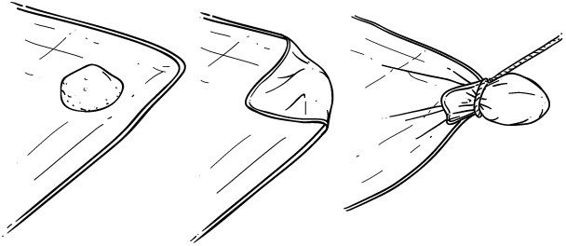
用石头制作防水布环圈固定点
油布防水布非常适合长期使用，由于优质的油布由高线数棉制成，它们相当轻便。8’×8’的油布防水布易于打包和携带。油布的唯一真正缺点是如果暴露在直接火焰下会燃烧。一些油布比其他油布更重，这取决于制造中使用的棉花类型，但优质的埃及棉既轻便又耐用。确保你有固定环圈而不是索环。
你需要：
重量超过8盎司的画家滴布织物 1夸脱矿物油，在大多数家居改善商店作为油漆稀释剂出售 1夸脱煮沸亚麻籽油，在家居改善商店有售混凝土颜料（可选）
警告：亚麻籽油易燃，所以要小心不要让这种防水布暴露在直接火焰下。
市场上有许多商业地垫，由各种材料制成。充气床垫容易被刺破，虽然它们比泡沫垫折叠后更小。然而，泡沫垫非常耐扯破，不怕树枝和树根，当地面潮湿时也容易晾干。我更喜欢从当地大卖场买的运动垫；这种垫子是黑色的，所以能吸收热量。这些比传统的睡垫更灵活，所以也可以用于急救目的，比如固定脱臼的膝盖或骨折。确保你使用的任何东西都适合你的目的。任何地垫在压缩时都必须足够厚，以对抗传导的影响（地面温度与身体的均衡，导致热量流失），同时又要便于在背包外携带。
浏览袋(browse bag)由轻质材料制成，一端和一侧缝合，形成一个身体长度的袋子，装满浏览物(browse)（树叶或碎屑）后可用作床垫。由于袋子由轻质材料制成，它可以折叠得很小，占用很少空间，或者给背包增加很少重量。浏览袋(browse bags)也可用作应急睡袋和额外保温方式。这些袋子最好的地方是它们能防止地面寒冷的传导；与地垫不同，它们在背包中占用很少空间。请注意，设置浏览袋(browse bag)以正确使用需要一些准备时间。
应急保温毯 应急保温毯在任何装备中都非常有用。它们可以充当热反射器、毯子、地垫或防水布。大多数可重复使用的毯子（这是你应该携带的类型）尺寸为5英尺×7英尺。大多数应急毯至少在每个角落都有一个孔环。虽然这不是固定到固体物体上的最理想方法，但在紧急使用时可能会派上用场。这些毯子是在庇护所中在地面上创建防潮层的极好轻便资源。在冬天将反射面朝上放置，在夏天朝下放置，以获得最大效率。
吊床已经使用了数百年，虽然对现代林中徒步者来说相对较新。吊床的优势是让你离开地面，远离小动物，当与好的防水布结合使用时，它们需要很少的注意来保持干燥——即使在暴雨中。它们也非常轻便和可打包，设置快速，提供非常舒适的睡眠。大多数现代吊床由尼龙型降落伞材料制成，但也可以用绳子以及帆布制成。
设置吊床
吊床设置并不复杂，这使得它们在快速旅行或试图不增加更多重量时更受欢迎。大多数现代吊床在两棵树之间绑紧，使用重绳或尼龙织带等绑带材料。大多数配备有登山扣，你可以夹在绑带上。你让吊床多紧取决于个人偏好，但请记住，无论你开始时绑得多紧，吊床的绑带在第一次躺进去时都会拉伸。有些人喜欢相当紧，因为他们觉得这在睡觉时提供更好的支撑，但其他人喜欢一些松弛。
在吊床上方飞一个防水布作为防水屋顶，形成一个极好的、简易的营地装备，特别是在温和的温度下。你可以在较冷的环境或季节使用吊床，但必须特别小心避免对流，因为有体温过低的风险。为了做到这一点，在吊床下方悬挂一个厚睡垫或下被。这将在吊床和被子之间困住空气，但不允许对流微风接触到贴着身体的吊床底部。在较冷的天气中，你也可以将睡袋或羊毛毯与吊床结合使用。将防水布搭得更低也会困住更多从你身体释放的热量。
通过困住温暖空气并将其密封在你身体周围的空间中，你总是能保持最温暖。为此，如果你能约束从你身体自然逸出的热量，你可以在更长时间内保持温暖。睡袋帮助你做到这一点。
睡袋现在是露营的标准。如今有许多类型的合成材料可用于保温填充和在这些袋子中创造蓬松度或困住的空气空间。羽绒或羽毛填充的袋子也有售，这些品种非常温暖。然而，当涉及到冷凝和水分收集时，这些袋子有一个主要缺点：在野外几天短时间内，它们就会被你身体的水分饱和。如果你在干燥和不太湿润的地区练习丛林技能(bushcraft)，一个好的帆布外壳和羽绒填充的袋子在寒冷的夜晚将是一个受欢迎的床铺。
军用模块化睡眠系统(MSS)
我们现在有用于保温的合成材料，很少有替代品能胜过军用模块化睡眠系统(MSS)。配备Gore-Tex野营袋（防水外壳），这对于几乎任何恶劣天气来说都是一个非常方便的短期选择，特别是当资源稀缺或环境影响受限时。在选择你需要什么时，记住合成袋需要定期干燥——这可能不可行，取决于季节和地理位置。（对于正常的干燥环境，合成袋很可能是猎人的最佳短期选择。）
MSS由外层Gore-Tex露宿袋(bivvy)防水层和两个内层合成填充睡袋组成，一个用于低温环境，一个用于中等温度环境。在极寒条件下，你可以将这些睡袋组合使用。市场上还有许多来自美国以外其他国家的军用睡袋，你可以以相当便宜的价格购买到。我发现瑞典睡袋在接近冰点温度时非常宽敞和保暖。结合一条双人羊毛毯，它们以不到50美元的价格组成了一个很好的组合。
露宿袋(bivvy bag)是一个防水袋，覆盖你的头部和睡袋。它提供了另一层防寒防潮保护。许多露宿袋实际上是管状帐篷，你在其中睡觉；它们提供一个封闭的透气空间，既能驱虫又能抵御大部分恶劣天气。一些露宿袋，如MMS中使用的那些，是Gore-Tex透气外壳，直接连接到睡袋上。这些是防水的，并为你的睡眠系统增加额外的保温层。
在携带方面，对待睡袋就像对待被褥一样——将它们卷起来并悬挂在背包上。
羊毛毯是长期使用的最佳选择，具有绝对的多功能性，但要用它舒适地睡觉需要一个叶床或枝叶袋(browse bag)，并且你可能需要在床边生一堆相当大的火。
丛林技巧
对于羊毛毯睡眠者来说，理解与火有关的平方反比定律和使用原木背墙绝对至关重要。平方反比定律意味着当一个人向更远的距离移动时，在给定距离从火中感受到的热量会按该距离的平方根减少。想象一个人站在距离火堆三英尺的地方。如果这个人只是再往外移动三英尺，他或她只会感受到原始距离25%的热量。在决定将睡毯设置得距离火堆多近或多远时，请记住这一点。
许多人争论现代羊毛混纺毯在野外能让你保持温暖和干燥。这是正确的，但你应该知道混纺中羊毛含量越高，毯子就越有效。100%羊毛制成的毯子具有防水、阻燃和保暖特性，即使在潮湿时也能保持约70-80%的保温值。70%羊毛毯的效果大约是100%羊毛毯的70%。
并非所有羊毛毯——即使是100%羊毛——都是相同的，在做出选择之前你必须考虑几件事。用原始羊毛(virgin wools，即第一次纺制的羊毛)手工编织的织机毯子总是优于机器制造的毯子。在这种情况下，较松的编织是有些可取的，因为它在重叠时会产生更多的蓬松度(loft)。
携带一条特大号和一条双人尺寸的毯子，因为这不仅为睡眠提供最多选择，也为外衣提供选择。这种多功能性使羊毛毯相比其他睡眠安排(如睡袋)具有很大优势。如果你找不到厚羊毛毯，可以使用缝在一起的较薄毯子。好的哈德逊湾公司品牌毯子仍然可以在旧货店、跳蚤市场和eBay等地方以相当低的价格找到。
建造天然庇护所的技能和知识是任何初学丛林技能者(bushcrafter)能够拥有的最重要的东西。为什么？因为充足的庇护所是在野外生存的最关键组成部分。即使没有背包，你也可以轻松地随身携带许多东西——失去这些东西至少会是严重的不便。切割工具、燃烧装置和容器可以轻松地系在腰带上，绳索也可以从废料中回收或放在口袋里携带，但充足的庇护所是另一回事。如果由于任何原因你失去了庇护所或它被损坏，你必须知道如何使用你拥有的材料建造一个。
如果你没有合适的防水布或帐篷，你可以建造许多形式的天然庇护所。然而，理解建造什么类型的庇护所和使用什么材料是控制传导、对流和辐射的关键。在建造任何天然庇护所时，首先要考虑的是该地区可用和可加工的结构材料。枯倒木材料对环境影响最小，需要的体力最少，收集最省时；但是，你必须确保它们在结构上是安全的。虽然它们已经死了，但到你完工时它们可能需要支撑相当大的重量。任何主要支撑(直径至少应为3英寸)如果可能的话应该砍伐新鲜的绿木。不支撑总重量的外部框架可以用枯倒材料建造，风险很小。
天然庇护所有三种主要形式：单坡式庇护所(lean-to shelter)、A型庇护所(A-frame shelter)和碎屑小屋(debris hut)。然而，你也可以建造任何天然庇护所来模仿防水布配置。
如果天气晴朗并且你可以利用微风，单坡式庇护所是最好的。你可以通过在树之间绑扎一根简单的横杆来制作单坡式庇护所。在一侧以45°角向地面添加几根树苗，然后编织水平的藤蔓或枝条。一旦完成这一点，通过从底部到顶部添加更多枝条来防水单坡式庇护所，总是将它们倒置放置(生长方向向下)。(这将允许水从庇护所引流。如果任何枝条按其生长方向放置，水将向接合处聚集并流入庇护所。)避免可能积水或雨水并滴入庇护所内部的树枝。
在恶劣或暴风雨天气中，在倚靠式庇护所的对面再添加一侧，创建一个A型框架来抵挡来自两侧的雨水或风。同样，不要让任何树枝或支撑物从内部伸出，否则庇护所会积水。天气越冷，茅草必须越厚，如果你想要它具有保温价值，叶子和碎屑的厚度必须至少为3英尺。
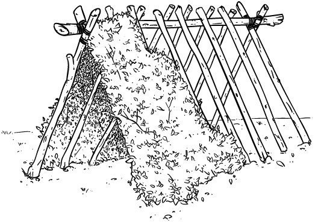
A型框架庇护所
碎屑小屋
在最寒冷的夜晚，特别是如果无法生火时，碎屑小屋将是必需品。这是A型框架的一个简单改进，将横梁的一端放在地面上，创建一个带有小开口的封闭三角形结构。这类庇护所的关键是要记住它们只需要足够容纳你一个人即可。你必须限制空间以保持内部热量，因为所有热量都来自你的身体并被困在内部。任何庇护所地面上的叶子和碎屑铺垫在压缩后应至少有4英寸厚，以避免传导效应。一旦进入，你可以用背包来封闭你进入的洞口，就像一个活板门。

在寒冷天气中使用防水布在地面上搭建庇护所时，使用碎屑或雪来帮助在边缘周围保温。这将减少对流微风从这些区域进入。
吊床在白天可以很好地用作椅子，将它们纵向设置在三脚架上，三脚架上有一个开放的横杆。
如果你的防水布需要重新防水处理以获得防水性能，一个简单的解决方案是用两份蜂蜡和一份牛脂或猪油制成的条块擦拭整个防水布。
当使用碎屑袋作为床垫时，如果所有可用的碎屑都是湿的，你可以在填充前用55加仑垃圾袋来衬里袋子，以防止水分渗透。
永远不要睡在距离任何火堆不到一整步的地方，以避免跳跃的余烬。
燃烧
“拥有在任何时刻点燃火焰的手段和知识是在荒野中生存的先决条件。”
—莫斯·科钱斯基，1987年
从有史以来，人类就需要火，不仅是为了温暖身体，还要烹饪和保存食物，在记录狩猎时照亮洞穴的黑暗墙壁，以及在夜晚入睡时有东西可看。火被用来驱赶可能在睡眠中捕食毫无防备的人类的动物，以及驱散夜晚的恐惧（想象的或真实的）。今天，我们对火的需求同样重要：我们需要火的热量在寒冷的夜晚取暖，我们用火烹饪和加热水，我们用它来使饮用水安全可饮用。
既然你知道你需要火，你就需要一个燃烧装置作为你装备的一个要素。有许多原始的生火方法——多到我可以写第二卷来涵盖它们——但请记住，你在”顺利进行”。你可以练习你的技能和”手艺”，但你也需要做好准备。仅用天然材料生火是非常困难的，特别是在某些环境中，它需要很高的技能水平。今天有三种可靠的点火方法：
就像任何其他装备一样，市面上有数千种打火机可供选择。哪一种最好？就是在恶劣天气中最可靠的，在背包中不使用时持续时间最长的，以及在需要时使用最简便的。普通的BIC品牌打火机在这个类别中是领先者。需要添加液体燃料的打火机容易蒸发，如果它们需要更换零件而不是一次性物品，它们就太复杂而不可靠。在使用便利性方面，很难超越BIC的轻击！不要选择便宜的仿制品；买一个真正的BIC，如果可能的话，买橙色的，这样你可以很容易找到它。
你应该至少有三个打火机：一个放在口袋里，一个放在腰包或背囊里，一个放在主背包里。重量可以忽略不计，但收益很大。打火机或其他明火装置的经验法则是5秒钟点燃引火物；任何进一步的使用都是在浪费资源。
BIC打火机有一个重大问题：它们容易受冷。如果打火机本身低于32°F，它就不会点燃。将一个贴身放在口袋里是避免这个问题的最佳方法。如果由于某种原因打火机变湿，它将不会点燃，直到再次干燥。这可以通过让它静置晾干或拆除前壳并晾干实际的打火轮来实现。更换干燥的打火轮使其再次工作。
Ferrocerium rods（燧石棒）、metal match（金属火柴）、misch metal（混合金属）——这些都是同义词。燧石棒是由铁、镁、铈、镧、钕、镨等燃烧性材料制成的实心棒。其中一些材料具有极低的燃烧温度，当你在棒上产生摩擦时，就会发生燃烧。要实现这一点，你需要一个比棒材料更硬的90°锐边。这个更硬的边缘会刮下材料并产生约3000°F的火花。在野外使用时，最好有尽可能大和长的棒，因为这会增加表面积和摩擦距离。较长的棒在击打时会有更多材料被刮下，产生更多燃烧金属（火花）。我更喜欢携带直径1/2英寸、长6英寸的空白棒，末端用1英寸胶带包裹。（这样可以制作手柄，同时也可作为紧急引火延长器。）许多棒有塑料、木材甚至鹿角制成的手柄，但除非它们真正被钻孔和固定，否则没有任何环氧树脂能防止棒最终从手柄中脱出。既然如此，你不如买一根空白棒并用不会脱落的胶带包裹（除非故意撕掉）。
燧石棒很少出现问题。但是，如果你长时间不使用棒，它可能会氧化。你可以用刀背去除这些氧化层，或者在棒上喷一层薄薄的油漆，在下次使用时刮掉。如果在反复击打时施加不均匀的压力，棒本身也可能出现波纹。你需要去除这些波纹才能使棒正常工作，因为它们在击打时会像减速带一样。要去除这些，你需要施加额外压力来去除多余材料，重新制作平整的击打表面。如果你正确击打棒，点燃引火材料最多不应超过三次尝试。如果没有成功，说明引火材料有问题，你需要找出问题所在。棒是需要节约使用的资源。
从装备资源管理的角度来看，放大镜或”太阳镜”确实是最好的生火方法。如果阳光充足，你只需要天然材料就能制造火种。如果你制作了炭化材料，太阳可以在几秒钟内轻易点燃它。携带的任何镜片都应该至少是5倍放大；实际上尺寸比放大倍数更重要。收集太阳光线的表面积越大，效果越好。但是，你不需要在这方面过分追求；直径1 1/2–2英寸的简单镜片就能很好地工作。有一些内置镜片的引火材料容器，叫做Hudson Bay Tobacco Boxes（哈德逊湾烟草盒），最初设计用来装烟草然后点燃烟斗。这些很适合装炭化材料和其他生火工具，形成一个很好的自给自足工具包。从旧双筒望远镜上取下的大镜片或从任何药店买的菲涅尔镜片也能很好地工作。
如果你的刀刃是高碳钢且具有良好的洛氏硬度等级，你也可以使用刀刃作为老式打火石和钢铁套装来点火。这种方法需要使用硬度等级7级或以上的岩石，如燧石、燧石岩或石英。用岩石击打或撞击刀背来刮下材料。用这种方法，你是在从刀背刮下铁颗粒。这些颗粒具有燃烧性，就像燧石棒一样，虽然这些火花只有约800°F。除非使用引火真菌，否则这种方法需要炭化材料来点燃火种。然后你可以用这个火种来燃烧引火束或鸟巢。
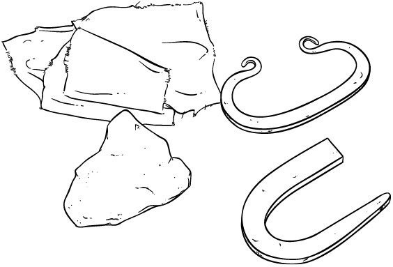
在本节中，我将解释原始点火的基础知识。有许多因素可能对点火成功或失败产生巨大影响，大多数书籍让它听起来比实际容易得多。首先要理解，任何火都需要热量、燃料和氧气来燃烧。你的目标是制造火种；然后将这个火种转移到巢中并吹成火焰。用这种方法制造火种需要阴燃的余烬；这意味着限制余烬内部的氧气流动。两根棒子之间摩擦产生的粉末被压实在一个小点上，表面积很小，不利于氧气流动。材料的湿度和潮湿是阻止点火的最大因素，所以根据环境不同，这些元素可能会大大增加或减少你的成功率。
制造火的另一个主要因素是你的材料。你需要相当软的材料；它们将用作底板和纺锤，这样向下的压力可以轻易刮下小块木屑。
在东部林地进行原始生火的首选方法是弓钻。制作弓钻需要四个部件。手持块或轴承块是在自然界中最难制造的部件，因为套装的这一部分是你希望摩擦最少的地方。这意味着手持块应该比纺锤和炉床板由更硬、更密的木材制成。手持块内的任何摩擦都会减少在炉床板上产生的摩擦，使操作套装变得更加困难且能效更低。纺锤部分成为”钻头”，用来从底板上刮下材料来制造粉末；粉末通过摩擦和速度产生的热量被点燃。纺锤和底板通常应该由相同的材料制成。一个好的经验法则是，选择的材料应该是你的指甲能够在上面留下印记的木材。
再次强调，含水量是这套工具中两个部件最关键的因素。火板或炉床是套装的底部部件，将被”钻入”，纺锤将在此处产生一堆细小碎屑或粉尘以供点燃。用任何坚固的木棍制作弓；如果这根木棍有轻微弯曲，长远来看会有帮助。它可以是新鲜的或枯死的，只要足够坚固能够保持紧绷的线或弓弦，并且长约3英尺。
一旦收集好组件，遵循以下一般规则：
纺锤应该大约有拇指粗细，长度从拇指尖到小指尖（手伸展时），或约9英寸。
炉床板需要比纺锤宽2.5倍，厚度约为⁄英寸。
姿势将是此方法成功的另一个关键要素；你应该始终将支承块手的手腕锁定在胫骨上，并确保纺锤垂直于板面。
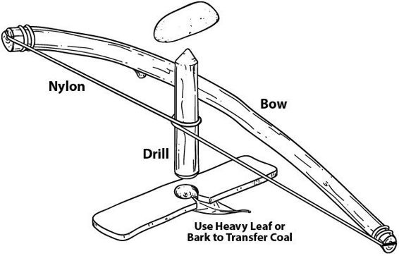
弓钻生火套装
当开始在板上移动纺锤时（尝试制造煤炭），起初不要剧烈旋转纺锤。施加稳定的向下压力，使用弓弦的整个长度来获得每次冲程的最大转数。当粉尘开始在切口中聚集时，你可以稍微增加速度。这将产生摩擦热，点燃聚集的粉尘成为冒烟的煤炭。大多数学生犯的最大错误是一开始就动作太快。如果这样做，你会产生热量但没有点燃材料。
炭化罐是每个森林人装备中的必需品。类似于薄荷糖罐或鞋油罐的某种罐子就可以。你将使用这个罐子创造炭化材料来协助生火过程，特别是当鸟巢或条件潮湿时。通过快速点燃炭化材料，你将有一个保证的余烬为鸟巢的点燃提供所需的热量。要使用这个罐子，在里面放入一些天然材料，如棉花、朽木或植物的柔软内髓。关闭盖子并将罐子放在火的煤床上。通过过热内部材料但不允许氧气进入，你将创造出像木炭一样的碳化炭化材料。在打开之前让罐子冷却下来很重要，因为向热材料添加氧气会导致燃烧发生。对于几块约2英寸×2英寸的棉花材料，在普通罐子中需要约十分钟来创造炭料。
野外技巧
要测试你的炭料，你可以使用任何点火源。（这是创造这种材料的优势——如果操作正确，单个火花应该立即产生发光的余烬。）使用太阳镜进行太阳点火时，适当的炭料应该在直射光下不到5秒就能点燃。这是你的安全网，以防你在路上或前一天没有收集到鸟巢或引火束的适当材料，必须使用边缘材料。
安全成功生火的技巧和窍门
如果你能找到管状灯芯，可以用它覆盖你的镁棒，防止不使用时氧化。它也可以用来产生余烬：通过点燃一端然后将其扑灭来炭化。这可以与你的镁棒或太阳镜一起使用来产生余烬。
说到生火，记住要练习原始方法，但总是准备现代备用品以防紧急情况。用更原始的方法练习会让你更好地理解操控火三角形以获得你想要的效果需要什么。
BIC打火机是环境温度的良好指标。如果你把它放在营地的毯子上它不能点燃，温度就在冰点以下。如果温度在冰点以上，BIC应该能容易点燃，前提是它一开始就处于良好的工作状态。
太阳点火在太阳的顶峰时间（上午10点到下午2点）总是最容易的，夏天总是比冬天更容易。
在野外
建立营地
“庇护所提供一个微环境，补充不足的衣物或允许你脱掉笨重的层次，特别是当你想停止移动或想在寒冷天气中睡觉时。庇护所也增强了温暖火焰的效果。”
—— 莫尔斯·科赞斯基，1987年
在徒步旅行中你能做出的最重要的决定之一是选择在哪里建立营地。这个决定的大部分基于一套简单的规则（四个W），但其他需要考虑的事情包括：
你打算停留多长时间？
你只是停下来快速吃午餐和休息吗？你只停留一晚然后继续前进，还是打算建立一个基地营地来工作几天？
任何你选择作为长期基地营地的地方都需要更仔细地考虑，因为附近资源最终会耗尽。
四个W是选择合适营地位置时要遵循的一个非常简单但重要的关注事项清单。它们是：
木材和水
第一个W代表木材。每次停下来扎营时，确保问自己以下问题：
我是否有接近的木材来源来完成我在这个营地环境中计划的任何任务？
是否有足够的柴火维持我在这里的时间？
是否有足够的枯倒木(deadfall)，还是我需要砍伐木材？（这取决于你随身携带的工具，这可能很重要。）附近是否有建筑材料可以用来建造庇护所框架、烹饪设备或我计划进行的任何其他制作？我能获得的木材是否是适合生火取暖或烹饪的合适树种？
一般来说，要生一堆快速取暖的火以及初始的火堆布局，你需要较软的木材树种，如柳树、杨树、松树或雪松。如果你计划烹饪并需要持久的炭床，而不想要这些木材中普遍存在的树脂和油脂，你会需要硬木树种，如白蜡树、胡桃木、橡树和山胡桃木。
第二个W代表水源。与木材一样，在建立营地之前有重要的问题需要回答：
营地短距离内是否有水源，便于轻松取水？
水源是流动水源还是静止水源？静止水源在夏季会蒸发，还存在停滞的威胁。任何地下水源至少需要煮沸，但如果可能的话，最好既过滤又煮沸。
水源是否足够大到可以容纳食用鱼类？水源是否对其他会使用它的动物有吸引力，如青蛙、小龙虾、乌龟等？水源是否足够大到能吸引哺乳动物将其作为日常水源？
这些问题可以帮助你在决定在哪里建立大本营时做出选择。
第三个W是风。无论你选择在哪里扎营，风都是一个需要考虑的因素，既要防止火势失控的威胁，也要考虑对抗或利用对流微风的能力。在搭建或悬挂防水布时也要考虑风向，因为风可能会将你篝火的烟雾吹向你的脸部或整夜吹进庇护所（这会成为妨碍你享受营地的巨大麻烦）。你营地的海拔高度会影响你暴露在风中的程度。在山脊上扎营会让你更容易受到风的影响，但在低洼地区扎营会让你更容易遇到低温。记住热空气上升，冷空气下沉；因此，如果可行的话，你应该选择中高地。
第四个W代表危险树木(widowmakers)。这些是可能在风力作用下容易倒塌或折断的立枯树。如果它们足够接近，可能倒塌到你的营地区域或你经常行走去取木材或水的区域，它们可能造成严重的安全问题。
一旦你选定了营地位置，如果你要扎营超过一晚，你需要考虑废物处理形式的卫生需求。尿液和排便都应该远离水源。两者都需要远离营地，以免招致细菌和小动物。尿液是个简单问题；你可以朝着远离营地和水源的相反方向走大约二十步，直接在地面上或对着树解决。然而，如果要长期逗留，处理大便可能需要更多工作。如果你只是短期停留，你可以在需要时简单地挖一个大约8-10英寸深的洞，完事后填埋洞穴，让一切自然分解。如果你要停留更长时间，可能需要一个小的长形沟渠。把这个沟渠挖得更深一些。每次使用后，覆盖排泄物；随后的使用中，你会沿着沟渠逐渐移动。任何包括多人在内、扎营几天的团体都需要更复杂的系统，如在不同区域设置几个沟渠。
对于个人日常卫生，我通常使用背包中的手帕结合火堆的灰烬，加入一点热水后创造一个具有抗菌性质的快速解决方案。要制作这种溶液，将硬木的白灰加入水中，比例为三份水对一份灰。我曾用同样的溶液洗过衣服，在没有肥皂的情况下，它能做得相当不错。这可以用于洗涤（如果需要），但简单的火烟在短期内具有抗菌性质；站在火边并打开衣服让烟雾进入，可以杀死许多汗水产生的异味。
我通常携带牙刷，因为根据我的经验，它远优于任何植物材料或咀嚼过的木棍。（另外，想到牙龈中可能有木刺就足以让牙刷的重量变得物超所值！）短期刷牙时，温水就能做得足够好；如果需要研磨剂，也可以将灰烬与水混合。
你必须每天解决的最被忽视但又最重要的问题之一就是你的脚。如果你不能行走，你就不能徒步旅行。许多因素影响你的脚，它们需要特别关注，这样你才能在徒步旅行时保持舒适。徒步旅行的靴子当然应该充分磨合，并符合你所处环境的需要。夏季靴子应该透气性好，冬季靴子应该有良好的保温性。除此之外，要注意脚上的袜子，并始终携带替换品。湿脚，无论在什么气候下，长时间都不会舒适。徒步时应该经常更换袜子；在长途跋涉中，预计每天至少要换三双。如果你必须穿着袜子睡觉，绝不要穿着你整天穿过的那双；无论如何我都不建议穿袜子睡觉，除非你携带一双专门的宽松袜子。紧身袜子会限制血液循环，导致夜间脚部寒冷，即使在好的睡袋中也是如此。每晚睡前应该让脚部在空气中或火边充分干燥，如果无法清洗，来点烟熏也无妨。
您使用的遮蔽元素将决定您如何适应特定情况。这就是为什么我如此坚信防水布和防水布帐篷的原因。即使您使用吊床，多功能性是在任何特定场景下舒适过夜的关键。重要的是您选择或制作的防水布要有最大数量的绑定点，无论是通过环扣还是实际的绑定尾绳。还应该有用于从外部拉拽防水布以增加内部空间的环扣。
以下说明解释了一些最常见的防水布配置。在我们开始之前，这里是用于防水布和防水布帐篷搭建的基本词汇：
当防水布在搭建时没有任何织物接触地面时，这被称为飞搭防水布。这对于吊床类型的设置非常有效。如果防水布织物的任何部分在地面层级被钉住，您就是在搭建防水布。
搭建营地是指建立营地，撤收营地是指拆除营地。
通常，在飞搭防水布时，您会使用某种脊线作为防水布的主要支撑。当使用方形防水布时，防水布可以以方形或菱形方式铺设在这条脊线上，我强烈推荐方形防水布以获得最大的多功能性。我使用的脊线通常是直径1/2英寸的天然材料绳索或25英尺长的550伞兵绳。这个长度会给您充足的空间，以防树木之间的距离比期望的更远。按照以下说明进行万无一失的设置：
在脊线绳索或绳子的一端系一个称人结。在另一端系一个带有2英寸尾部的单结，用作止结。
将绳索绕过一棵树或主要绑定位置，然后将标签端穿过称人结。这将创建一个自紧环，不会锁定（便于调整）但在负载下保持安全。
一旦绳索的另一端绕过对面的树，创建一个卡车结，留下一个在止结上停止的环。这允许您通过将此环穿过防水布上的绑定点来固定防水布的一角，然后在绳环中放置一个简单的拨动器，拉下来拉紧防水布。如果需要，这可以轻松取出，用于撤收营地或稍后进行调整。
在防水布对面端使用的最佳物品是用6英寸线环制成的简单普鲁士结。将线系到脊上后，将环拉过对面的绑定环并拨动它。然后您可以沿着线滑动它，直到防水布紧贴脊线，它将通过摩擦保持，使调整和撤收变得容易。
此时，将防水布在两个或四个角上拉伸到所需高度，并用线将其拉向另一个物体或将线钉到地面。重要的是要确保这些线也易于调整，因为许多防水布材料会根据天气情况伸展。可调节的线使拉紧变得容易。
您可以通过将矩形或方形防水布的两个对角固定在脊线上（如前所述），并将防水布的另一侧用钉子钉到地面来建造简单的斜棚。这里要理解的最重要的事情是防水布的倾斜或角度控制着重要因素，例如保持多少热量以及雨水是否容易从前面进入。
我最喜欢和最快速搭建的防水布遮蔽所之一是菱形遮蔽所。同样，这最好用方形防水布制作。将防水布的一角固定到立体物体（如树）或仅固定到脊线的一端。将剩余的三个角钉到地面，创建菱形遮蔽所。这种类型的遮蔽所有许多优点，特别是当与脊线一起使用时，因为它可以快速调整为在晴朗天气下创建斜棚。它非常适合在阳光遮蔽下完成营地任务，并在夜间或恶劣天气期间提供三面遮蔽。如果您的防水布有外部环扣，您可以将中心线环扣拉向另一个物体以在内部创造更多空间，或者您可以在内部使用棍子来实现这一点。
防水布帐篷通常是方形防水布，前面有延伸部分，当使用中心杆或当防水布通过中心绑定点固定到脊线时，这些延伸部分成为门。这创建了一个三面结构，两个襟翼用作门来创建完全封闭。您也可以用大矩形防水布制作防水布帐篷，但您必须携带比正常更大的防水布才能获得与制造的防水布帐篷相同的效果。防水布帐篷的最大优势是它们的多功能性。如果需要，它们可以用于普通防水布的所有配置，具有帐篷的优势。
某种地布不仅作为防潮屏障有用，而且作为将您自己或您的装备从直接地面上设置的便利场所。您可以用任何防水（如果可能）的废料材料制作它，但它不需要比您身体的长度和宽度更大，以保持您的装备轻便。足够大可以折叠的地布可以纳入床卷配置。在晴朗天气徒步中，您可以完全放弃防水布。
生火是任何林间技能者必须掌握的最重要技能。有了火，你就能取暖、烘干衣服、让水变得适合饮用。这些是你在营地日常生活中可能需要火提供的最简单功能，但它的用途远超任何单独的装备。你需要火来烹饪食物、制造所需的灰烬、炭化材料为未来生火做准备，以及在夜晚驱走恐惧。围着篝火，你会讲述冒险故事，憧憬未来的探险。篝火是森林中的电视，不断变化着，如同在夜晚燃烧时切换频道。
所有火焰燃烧都需要三个要素：点火源（或热量）、氧气和燃料。通过理解和控制这些输入，你就能掌握火的技巧。如果你增加或限制其中任何一个输入，都会改变结果。这意味着你可以生起取暖之火、烹饪之火，或制作炭化材料为下次生火做准备。
燃料进一步分为第二个三角形：引火物、引燃材料和燃料。这些是主要输入要素，会增加或减少你成功的机会，特别是在最初生火条件不理想的情况下。
引火物是火焰组成要素中最易燃的材料。它可以由天然到人造的多种材料组成，但应该容易接受火花或在加入阴燃余烬时轻易着火。
引燃材料由天然材料制成，直径为铅笔粗细或更小。你需要大约三分之二的初始火堆由这种材料组成。
燃料将是任何比引燃材料更大的东西，包括原木在内，这取决于你使用的火的性质和需要。
在第6章中，我们讨论了火具包(fire kit)的主要组成部分：
打火机
铁铈棒(Ferrocerium rods)
放大镜（阳光镜）
炭罐(Char tin)
这些材料一起提供了生火的方法。现在你需要起火材料：引火物。
作为火堆布局的一个要素，鸟巢是一束高度易燃材料的组合，其形状和结构模仿鸟的巢穴。必须理解的关键是，它真的需要像鸟巢一样：精细、中等和粗糙材料的组合，这些材料高度易燃，比如软木树的内外树皮，如白杨和杨树。草类和杂草也适用，桦树皮也可以，但有些树皮具有其他特性，稍后会讨论。鸟巢与余烬结合使用，余烬可以从炭材或其他方法如弓钻法产生。它的大小必须能够维持火焰足够长的时间来点燃引燃材料。引火物的经验法则是确保它有垒球大小或更大。
当材料略微湿润或潮湿时，鸟巢使用效果最佳，余烬可能需要较长时间才能引起燃烧。使用这种方法时，将巢与实际火堆布局分开，将余烬放置在鸟巢内部鸟蛋应该在的位置。将巢举到刚好高于嘴部水平，记住热量是上升的。轻轻对着余烬吹气来加热周围材料。随着余烬和材料发光变亮，你可以增加气流直到巢着火，然后将其旋转180°使火焰穿过材料上升。然后，将这个燃烧的束状物放入火堆布局本身。
引火束与鸟巢的不同之处在于，它们被放置在火堆布局的底部，通常不使用余烬点燃。要使这种方法成功，引火物必须足够干燥和易燃，能够轻易从你的铁铈棒接受火花。这种束状物在材料、大小和性质上与鸟巢相似，只是不需要余烬的持续热量。你可以将引火束和鸟巢与细枝束结合使用，以延长使火持续燃烧所需的时间，这给你更多时间寻找材料添加到火中。
细枝束可以单独使用或与鸟巢或引火束结合使用。点燃这种引火物最有效的方法是使用打火机的明火。这将允许你通过对可燃材料（如干燥的杂草茎和杂草顶部）施加过量热量，在某种程度上绕过三角形的引火物部分。将细枝束包裹在巢或引火束下面，然后将火焰翻转到自身上。让火焰和热量穿过细枝束上升；如果不使用明火，这是最有效的方法。然后将这个燃烧的束状物插入火堆布局。
某些植物材料被我们称为”闪燃引火物”。它们含有易燃的挥发油，会轻易燃烧，但由于涉及的纤维很细，它们燃烧很快，火焰持续时间很短。当这些被组合成鸟巢时，它们可以非常有效。它们也可以用于引火束达到同样目的。闪燃引火物的最佳例子是蓟绒和香蒲绒毛。
野外技巧提示
许多树木都含有天然油脂和树脂，可以作为助燃剂。这些非常有用，因为树皮和木材的燃烧时间比植物纤维长得多。最重要的两个来源是桦树皮和松脂。这两种都需要不同的处理方式。桦树皮可以从树上剥下来，但其预期用途将决定处理类型。请记住，任何时候你试图用打火棒产生的火花点火时，都需要大量的表面积来捕捉火花。桦树皮等也是如此；你需要尽可能细地撕碎它，以暴露更多可以被火花点燃的表面。如果你有明火，树皮可以直接从树上剥下来燃烧。
松脂
松脂可以用于很多方面；受伤松树滴出的树液高度易燃，你可以简单地将其涂在干燥材料上，用打火棒或明火点燃。这些树脂也会沉积在树木本身中，形成所谓的油脂木(fatwood)、沥青木(pitch wood)或引火松木(lighter pine)。大多数松树在任何有接合处的地方——例如树枝从树干伸出的地方——都有浸满树脂的木材区域。在死松树上，树脂会向下流向根部。立着的枯松树是获取这种木材的最佳选择，但倒下的枯松树也能提供很好的资源。
这种木材闻起来有松节油味，在明火下非常易燃。但是，你可以进一步处理它，使其在生火工具包中更加有用：
用刀背刮这种富含树脂的木材，制造一堆细刨花。这些刨花会在你的铁铈棒产生的热火花下快速燃烧。
制作羽毛棒。
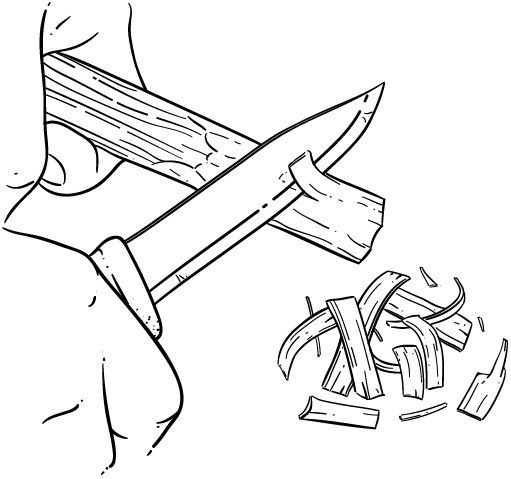
[从油脂木上刮刨花]
[羽毛棒]
制作羽毛棒是增加引火材料的绝佳方法。如果没有小的干树枝，软木是制作羽毛棒的最佳选择。
在较大的木棒上刮出一系列薄薄的小木卷。如果这种木材是油脂松木，你就有了助燃剂，使这种引火材料更加强力。通过制作羽毛棒，你增加了表面积，使火焰能够更快地加热材料，使其燃烧更快。一个好的羽毛棒在同一平面上会有几个这样的细刨花，每个都有几个卷曲。如果需要，羽毛棒可以构成用于火堆布局的整个引火堆。
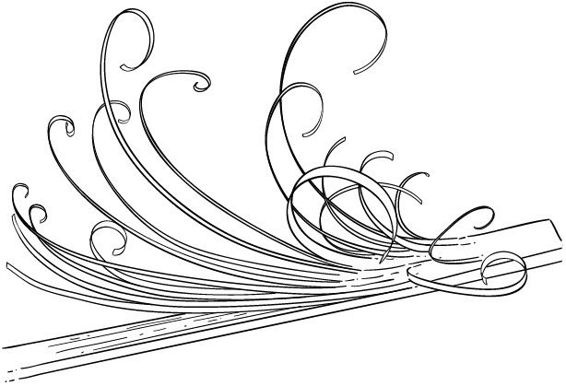
[羽毛棒]
你设置的火堆布局类型由你的需求决定。这里我们将讨论几种基本布局。除了引火束的大小和创建良好可持续火堆所需的引火材料数量之外，要记住的两个规则是：
通常更多氧气更好。这并不意味着你应该从点燃火堆到它可以自我维持的整个过程中都要吹或扇火；而是意味着你必须在引火材料之间留有大量空间，让氧气能够流入火堆。
火焰喜欢混乱。这意味着你不需要把东西整齐地堆叠起来才能做出好的火堆布局。想象一下儿时的挑棒游戏——那就是你的引火材料中混乱的样子。
生火时要记住的另一个主要规则是，在火焰升到当前燃料水平之上之前，不应向任何火堆添加燃料。这将防止你剥夺火堆布局中宝贵的氧气。
丛林技巧
我在学校上课时看到的大多数生火失败的人都是因为他们使用的燃料相对于火堆当前产生的热量来说太大了。记住燃料直径越小，燃烧得越快。继续添加引火材料，直到你能看到明显的炭床，然后开始添加燃料。
帐篷火
帐篷火堆布局是我大部分时间用来生初始火堆的方法。它非常有用，因为产生的上升气流允许氧气从底部进入，热量快速上升到顶部。最好的火堆利用文氏效应(Venturi effect)（上升气流）。将许多木棒堆叠成帐篷状，顶部相接，在帐篷内放置引火束或鸟巢，这样热量上升到木棒中，火焰沿着材料的垂直长度加热。
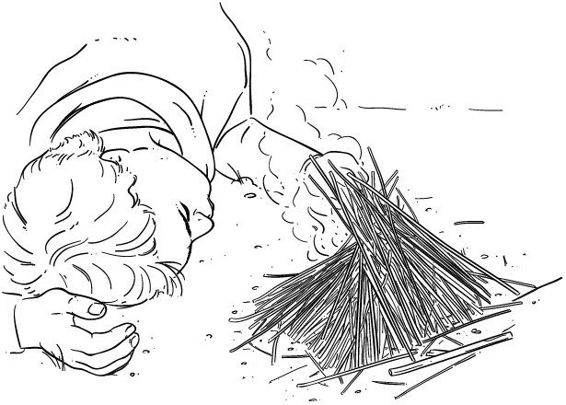
[帐篷火堆布局]
木屋火
木屋火堆布局最适合在最佳条件下使用非常干燥的木材。它让人想起玩林肯积木：你用燃料创建一个方形盒子，里面放一堆引火材料和引火物。将较大的木块交叉叠放；它们之间的空间给氧气提供了流入布局的机会。在这种类型的火堆布局中，引火物和引火材料通常用明火点燃。
当庇护所不够理想且天气非常寒冷时，长火(long fire)可以成为舒适夜眠的救命稻草。长火正如其名——以长线形式搭建的火堆，当你睡觉时与你的身体平行。要搭建长火，你需要一些大的枯木或可以砍倒的干燥立枯木。长火的长度应与你的身高相等，并放置在距离你打算睡觉区域大约一步的位置。通常明智的做法是在火后建造一堵原木墙，它会吸收热量并成为蓄热体加热器。这些通常被称为反射器，尽管没有反射表面，它们实际上只是保持热量并通过对流将其推回你的营地。这些后墙应该与庇护所顶部一样高，火应该放置在能够获得横风以帮助供氧的位置。在没有合适庇护所的寒冷天气中度过长夜，维持长火需要足够的木材来装满一辆普通尺寸的皮卡车，高度达到驾驶室。仅仅想象这一点就能告诉你所涉及的工作量和仅仅收集这么多木材就要消耗的卡路里。如果需要这样的火，你应该至少在日落前四小时开始准备。
如果你真的想利用上升气流来实现热燃烧的火，可以建造一个达科他火坑(Dakota fire pit)。如果要燃烧的材料是绿色的或潮湿的，或者如果你需要额外的热量来完成诸如坑锻等项目，这些方法效果很好。
挖两个相距约2英尺的洞，直径约14英寸，深6-12英寸。然后通过在两洞之间挖掘隧道将这些洞连接起来。在远离下风向的一个洞中建造火层。在相对的上风向洞中，在面向风的边缘挖一个角度。这将最大化进入隧道的气流。

达科他火洞
这种类型的火有优缺点。它会燃烧得非常热，所以如果你燃烧标准以下的材料，这种方法将最有效地利用材料。然而，燃料消耗也将达到最大值，所以如果资源短缺，这不是一个好的设置。
这种类型的火最适合烹饪。要设置锁孔火(keyhole fire)坑，为你的火挖一个小洞（深度取决于你想要的火的大小）。在这个洞的前面，你将挖一条与火洞同深的沟槽，这样你就可以从火的核心拖拽煤炭到沟槽上方创建一个烹饪区域。产生的火坑形状类似锁孔。如果你使用平底锅烹饪或烘烤食物，这种方法特别有效。
如果你的庇护所位置由于环境原因排水不好，而你又无法让自己离开地面，你可以在庇护所周围挖沟来引导径流。
旧锉刀通常回火很硬，如果你磨掉边缘，可以制作出合格的火钢用于燧石和钢铁点火。这样做时，一定要慢慢来，并将锉刀浸入冷水中以保持其回火。
火被点燃后，当你努力使其持续燃烧时，永远不要在火焰高于当前燃料水平之前添加燃料。
在建造诸如烹饪用烤肉叉等工具时，始终使用绿色的棍子和木材。永远不要使用松树等含树脂的木材；相反，使用山核桃或白蜡树等硬木。
当火钢等铁制品发热时，涂上蜂蜡将有助于保护它们并防止生锈。
穿越地形
“知道你在哪里是不必要的。你需要知道的是如何回到你曾经在的地方。”
—DON PAUL，1991
导航对任何林地工作者来说都是一项被低估的技能。即使是从短距离侦察中找到回营地的路，也应该总是用某种验证方法来管理，以防你迷失方向。不仅要理解地图和指南针的所有方面，还必须通过密切关注你曾经去过的地方和正在去的地方来发展方向感和旅行技能，这一点很重要。学习地形特征关联和使用扶手栏杆(hand rails)在短距离旅行时会大大帮助你，但要进行长途跋涉，地图和指南针是成功的关键。
并非所有指南针都是平等创造的，今天市场上有许多类型。我总是确保我携带的每件设备都既适合其预期用途又具有多功能性。指南针也不例外。你的指南针应该充当：
导航设备
紧急情况下的信号设备
用于急救以及日常卫生的镜子
能够通过太阳点火进行火种制作的工具
考虑到这些功能，你可以开始想象你应该选择的指南针类型。你需要一个为地图阅读而制作的底板指南针(baseplate compass)。这种指南针有一个平板，通常由塑料制成，可以放在地图上，并且是透明的，用于与地图配合使用，以及在地图上用指南针规划路线。它还有一个可移动的刻度环(bezel ring)，在指南针上旋转，度数读数标记在上面，最好用夜光漆。这将使通过本章讨论的地图和视觉方位方法轻松调入旅行方位。确保指南针有镜子和5倍放大镜。当涉及到你的指南针时，我建议花钱买一个好的；这样，当需要时你会信任它。如果你想要，你可以携带一个备用指南针，但它永远不会取代为地图阅读和导航而制作的真正底板指南针。
为什么要携带指南针？
这个问题的答案并不像听起来那么显而易见。一般的方向判定并不需要指南针；实际上，在晴天时，你自己就是一根阴影棒！在北半球，如果你面向太阳，你就是在朝南的方向看：早晨朝东南（SE），傍晚朝西南（SW），在上午10点到下午2点的天顶时段一般朝南（S）。
丛林技巧(BUSHCRAFT TIP)
如果没有阳光，树木会告诉你答案。所有树木都有一个共同点：它们都必须进行光合作用才能生存，所以最多的枝条会在树木面向南方的一侧。观察几棵树来验证你的结论。
携带指南针的最重要原因是让我们能够在远距离上走直线。每个人都会经历所谓的侧向偏移，这会导致我们在长距离行走时逐渐向左或向右移动。如果你能看到一个物体，你可以很容易地朝它直走。然而，如果你下山或有障碍物阻挡了你对预定目的地的视线，你就不再能走同样的直线了。这就是你携带指南针的原因。
除了确定方向外，指南针的基本用途是建立方位。如果你的指南针有带度数读数的可移动表圈，你就能执行这项任务。大多数指南针都有一根两种不同颜色的指针，通常是红/白或橙/白。指针的白色一侧指向南方，有颜色的部分指向北方。指南针的”前面”或”顶部”是有镜子的地方，所以如果你打开指南针并看向镜子，你的指南针就指向前方。在指南针表圈下方应该有一个轮廓箭头或一组线条，它们随着表圈的移动而移动。这很重要，因为你将使用它来”设定”视觉方位。
取得和跟随方位
一旦你理解了指南针的组成部分，取得视觉方位并跟随它就很容易了。使用指南针盖上的瞄准装置（这通常看起来像”V”形枪械瞄准器）瞄准远处的物体。将指南针放在身体中央，双臂部分伸展在身体前方，远离身体。倾斜镜子，使你既能通过”V”形看到远处的物体，也能看到指南针上的表圈。指南针上的指针总是指向北方，所以这时移动你的表圈，使轮廓或”房子”线对齐，让北针在里面。然后你就能在指南针顶部得到方位。此时，如果你放下指南针，在行走时保持北针在表圈线内，你就是在走直线或精确方位。
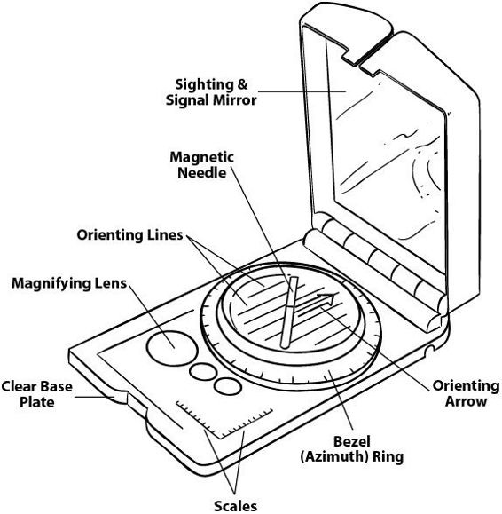
远距离旅行的跳跃式前进
在行走时试图观察指南针可能不安全，这种情况下你需要跳跃式前进。要做到这一点，你将使用刚才设定的方位来瞄准一个离你较近的物体，你可以朝它走而不会失去视线。一旦你到达该物体，在同一方位上选择另一个点并走向它，如此反复，直到你到达想去的地方。如果给了你一个要跟随的方位，或者你已经查看地图获得了方位，你可以将该度数读数放在指南针顶部，然后转动身体直到指针在”房子”内。此时，你面向的就是方位方向，你可以继续前进，无论是连续移动还是跳跃式前进。
记住，地形图是三维表面的二维图像。所以如果你理解在地图上看到的内容，你就能想象它在现实生活中的样子。这里我们将讨论任何地形图上最突出的五种颜色和五个最有用的地形特征。
五种颜色
棕色用于等高线。这些线条显示海拔；一般来说，等高线以20英尺为增量。如果你能在山顶附近的线上找到写着的海拔高度，这将有助于确定等高线水平。例如，如果一条等高线是800英尺，那么它上面5条线将是900英尺，下面5条线将是700英尺。
绿色用于植被。一般来说，绿色越深，植被越密集。
蓝色用于水源、小溪、河流、湖泊、池塘等。
黑色通常是某种人造物体，如小径、铁路或建筑物。
红色显示主要道路，如高速公路。
五个地形特征
山顶是起伏中的最高海拔点，提供俯瞰机会。
山脊线是一系列山顶。这些区域能够进行高地旅行；动物也出于同样目的使用它们。
鞍部是两个山顶之间的低洼区域。这些区域为营地提供良好的挡风处，而不牺牲海拔。山顶和山脊通过鞍部排水到下面的山谷。
冲沟是从鞍部向下的海拔降低，两侧都有高地。这通常是水流的良好汇集点，在许多情况下通向山谷。
山谷是在山脊线之间的低海拔地带。这些区域汇集径流，是寻找未标记溪流的最佳地点。如果它们蓄水，它们上方的高地将是伏击前来饮水的猎物的绝佳位置。大多数山谷也是良好的陷阱设置地点。
阅读其他地图细节
一旦你能读懂地图的基本特征，你就需要了解它能提供的其他信息。地图可以告诉你从一点到另一点的距离，以及显示你的指南针读数（称为磁北）与地图布局（称为方格北）之间的差异。如果你计划使用地图获取方位角(bearing)进行旅行，这些信息将非常重要。
地图比例尺是通常位于地图底部的参考信息，告诉你地图上的英寸数等于地面上的某个距离。地图按1:10,000这样的数字比例缩放。这意味着地图上的1英寸代表地面上的10,000英寸。地图上的比例尺条通过显示分解为英寸或厘米的测量装置使这变得更容易，这样你就可以用尺子准确测量并转换为距离。决定在计算时是使用美制测量系统还是公制系统也很重要。我在本书中使用的大多数例子都是公制系统，因为我发现所有以十为单位的除法都是简单的数学。
对于基础导航，你不需要太担心方格北和磁北之间的偏角差异。但是，如果你要在距离上非常精确并打算从地图上获取方位角，你就需要了解这个过程。你的地图包含一个偏角图，它会显示磁北和地图北之间左右偏移的度数。任何地图的顶部都朝向北方。将地图上的正上方想象成对应于时钟指针指向12点。磁北实际上在12点钟的左边或右边，这取决于你在地球表面的位置。你的指南针总是指向磁北，但地图是按照线性和横向方向制作的，所以地图上的北方不是磁北。这种差异在偏角图中表示为偏移度数。一旦你找到偏角图，你可以做两件事之一：
如果你的指南针具有可调节偏角功能，请在指南针中设置偏角差异。
在从地图规划路线时获取的每个方位角上使用基于偏移度数的计算。
如果你想将地图上的二维图像与你在面前景观中看到的内容相匹配，地图定向是重要的。如果你仅根据地图计划路线，这也很重要。要定向地图，请将指南针完全打开放在一个角落，使指南针的直边与地图上的网格线平行。如果你使用这张地图来规划路线并考虑旅行方位角，要开始这个操作，你需要在指南针上设置偏角差异，或者从指南针顶部360°处偏移你的方位环那个量。完成后，旋转地图直到北针再次进入指向框(doghouse)。地图将与你面前的地形定向。确保开始此程序时你的地图指南针顶部朝向地图顶部。
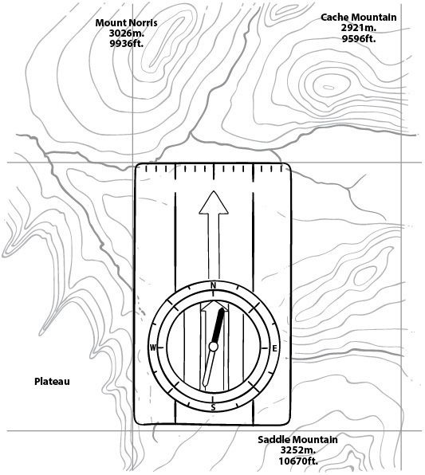
指南针定向
一旦你在地图上找到比例尺，你可以使用任何测量装置，从打结的绳子到标有与比例尺相同距离刻度的纸片。将这个物体放在A点和B点之间，你可以计算要行进的距离。
从地图获取方位角或方位角
地图正确定向后，你可以使用指南针从地图上获取方位角或方位角(azimuth)。（“方位角”和”方位角”是相当同义的词，意思是行进方向。）要做到这一点，不要移动地图。将指南针的直边放在你所在的点和你想到达的点之间。然后旋转方位环直到指针进入指向框。指南针顶部的方位角将是你的行进方位角。
扶手(Handrails)是地形中的线性物体，当它们朝向预期行进方向时，你可以将其用作跟随的指导线。溪床、山脊线、河流或路基都可以发挥这种功能，帮助你在不遵循指南针方位角的情况下导航到某个位置。
挡板(Backstops)是你知道不应该超越的点。这些通常是与你预期目的地垂直的线性地形特征。挡板可以是河流、小溪、路基或铁路。它不需要正好在预期目的地的顶部，但应该足够接近，这样你就知道，如果你碰到那个特征，你已经越过了你的标记。
基线(Baselines)与挡板相反；这些用于返回你开始的地方，应该与营地或大本营垂直。当你到达基线时，你应该明白要朝哪个方向才能回到营地，而不必用指南针方位角非常精确。
偏向瞄准(Aiming off)（通常）与基线结合使用。你会故意朝预期目的地左边或右边几度获取方位角，这样你就知道到达时要向左转还是向右转才能到达所需位置。
紧急方位角(Panic azimuths)的创建是为了在你迷路时，你有一个方位角
立即插入你的指南针，这将带你到一个已知点。例如，假设你正在向北行进，东边有一条河流，它不是你预定行程路线的一部分，也不是一条扶手线(handrail)。然而，如果你迷路了，你知道从河流向正西方位角前进会带你回到预定路线。从那里，你可以将其作为基线来重新确定行进方位，或让你回到正轨。
[反向或后方位角] 在使用指南针行进时，迟早你会偏离路线。当这种情况发生时，你应该尝试反向方位角来返回到最后已知的位置。反向方位角只是意味着朝着与你之前前进方向相反的180°方向行进。最简单的方法是将你的指南针看作时钟。如果你当前的方位在12点钟位置，将刻度盘旋转到6点钟数字，你就得到了反向方位角。
[行进时确定距离] 重要的是要意识到不仅要知道你需要行进多远，还要知道你已经行进了多远。在地图上查看、拿出测量工具并知道你的目的地在你东边2.5公里——千米——是很好的。但是一旦你在路上，你如何知道自己已经走了多远？计步珠(Pace beads)是这个问题的答案；这些用来测量已行进的距离。
使用它们时，制作两串珠子：一串九颗珠子和一串四颗珠子。这些用来计数5公里。九颗珠子一边的每颗珠子代表100米，四颗珠子一边的每颗珠子代表1公里。你将从两串珠子顶部开始，随着你以100米为增量行进，相应地放下珠子。关键是要弄清楚走100米需要多少步。
要计算你的步数(pace count)，或者你在陆地上行进100米需要多少步，你必须考虑几个因素。你应该有一本日记，记录在营地内外使用的个人笔记。在这个笔记本中，你应该记录你的步数。在所有地形中检查你的步数，并始终带着你打算携带的装备。记录你在平地、上坡、下坡、不平地面等的步数。这样当需要时，你可以对多种地形进行平均。你的步数是按完整步数计算的，所以如果你用左脚起步，你的计数将在每次右脚着地时进行。
[找到自己(自我定位)] 有些人认为拥有地图和指南针就能让他们不迷路。然而，如果你不跟踪自己的位置并最终迷路，要在地图上找出你的位置可能非常困难。
如果你能找到地图上至少一个可识别的特征，你可能能够完成后方交会(resection)来找到你的位置。从高地观察地图上两个不同的特征。也许你找到了一座火警塔，从你所站的位置可以看到两个山顶。如果这座塔是地图上唯一的一座，你就准备好了，但要验证这一点，最好从塔进行后方交会。
对你能从所站位置看到的目标进行方位测量，并使用反向方位角在地图上画线。如果这些线从两个山顶在火警塔(在这种情况下)相交，你就验证了你的猜测，即塔就是你在地图上看到的那座。在这个例子中这听起来很容易，但在茂密的森林或夏季茂盛的植被中，这可能几乎不可能，所以最好从一开始就观察地图，并使用这里列出的所有方法进行导航，以了解你当前的位置。
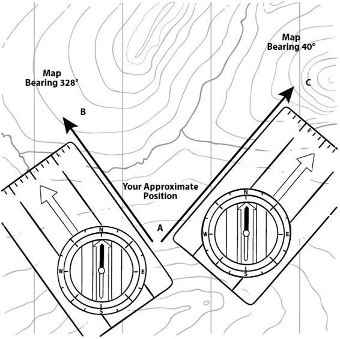
丛林技巧
这里有一个有趣的故事，展示了人们多么容易迷路。我在一个寒冷的冬季早晨在森林中，距离我车辆停放的主要道路不到200码。大约三十分钟后，我听到另一辆车开过来并停在我的车附近。我开始听到身后传来踩雪的嘎吱声；听起来不像鹿，更像人类。当我坐在树上的观察点时，我看到一个猎人从我身边走过。他走了大约50码，然后停下来，环顾四周，向左转走了几步，然后又停下来环顾四周。几分钟后，他向右走了几码。这时他开始环顾四周，好像不确定自己的确切位置；请注意，他距离主要道路只有200码！在我的树上高处看来，大约十分钟里他在看起来像小圈子的范围内徘徊，然后他在一棵树旁坐下，我可以看出他不是在狩猎——他明显在摆弄他的装备，表现得有点紧张。
几分钟后他又开始走路，但这次我咳嗽了一声，以免通过呼叫吓到他。当他朝我这个方向看时，我简单地说：“你的车在我身后大约200码。”他回答：“我知道”，然后匆忙走开了。看到我的车时，他应该知道当他进入森林时可能还有其他人在附近，从他的行为我确信他在距离自己的车200码内就迷路了。在有很多看起来都一样的特征的区域，比如树木，一个人很快就会迷失方向。你应该始终从出发点进行方位测量，这样至少知道返回的方向。
在你的徒步过程中可能会遇到许多障碍物，你可能必须绕过它们或穿越它们。绕过一个物体，如湖泊或池塘，是相当简单的。根据情况，你可以选择做以下两件事之一：
在另一边找到一个容易识别的物体(如果你能看那么远)，它与你行进的方位在同一条线上。绕过去后从那个物体重新进行方位测量。
如果你看不到障碍物的另一边，或者没有可靠的方法
识别另一边的某个物体，那么您需要使用90-90-90法。使用这种方法时，您将使用步数计算。在障碍物边缘停下，向左或向右转90°，步数计算直到越过障碍物。然后向前转90°，行走直到避开障碍物。如果您正在为距离计算步数，这一段需要记录下来。现在向相反方向转90°，走与第一段相同的步数，形成一个三边盒子。这将使您回到遇到障碍物之前的方位。
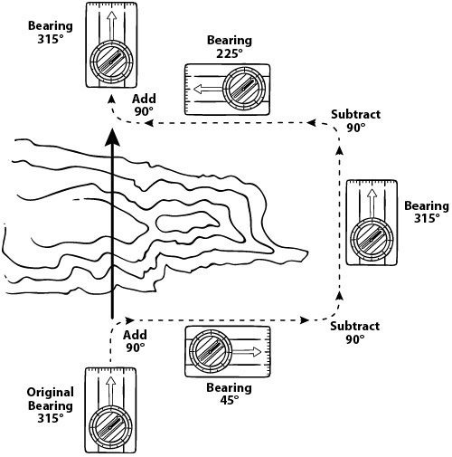
如果您必须穿越障碍物，可能需要确定其宽度。如果您需要砍一棵树来协助穿越，或者您有绳子需要确定其长度是否足够进行绳索穿越，这种情况就会出现。
识别障碍物另一边您能清楚看到的某个物体。
在障碍物边缘，在您识别的物体正前方将一根棍子插入地面。
向该物体取一个罗盘方位，向左或向右转，走直线直到与原始方位到同一物体的罗盘读数达到45°差异。您现在已经创建了一个直角。
回到您的标杆的步数距离将与穿越障碍物的距离相同。
PAUL(正向方位角统一布局)方法
使用PAUL方法可以让您侦察未知区域，并计算出回到营地的直线方位，而无需一路反向方位角回溯。如果您已经走了相当长的距离，这会非常有用。要使用这种方法，您需要在日志中设置一个记录页面做笔记，并且必须记录沿途每个点的方位和距离。完成侦察的简单方法是携带一面高度可见的旗子或头巾，最好是橙色的。
从您的营地向远处物体取一个方位角。在您的日志中，记录您走向它时的方位角和距离。到达那里后，将您的旗子放在物体上，继续在该区域周围侦察——但永远不要失去对旗子的视线。当您准备继续前进时，回到旗子处，向远处的另一个物体进行读数。走向它，再次在日志中记录方位和步数。将旗子放在物体上并在周围侦察。
继续这个程序直到您准备返回营地。在您的书中绘制一张小比例尺地图，使用您记录的点和距离。根据任何测量设备决定比例尺——例如，1英寸=100米。绘制地图后(这很容易用地上的棍子或石头完成)，检查从最后一点到您营地的返回方位角和距离。然后您应该能够直线返回。如果您在溪流或水源旁扎营，您就有了现成的后挡。
计算日照时间 有时您会想知道还剩多少日照时间。明智的做法是在夏季日落前至少两小时、冬季四小时前扎营，因为需要准备舒适过夜的用品，如柴火。要在没有手表的情况下计算这个时间，抬起您的手，拇指收在下面，手指并拢。将手放在太阳下方。您能在太阳和地平线之间放置的每一只手等于一小时，每根手指代表十五分钟。
L.U.R.D.：左、上、右、下。记住虽然地球在运动，它也使天空中的物体运动。将一根棍子插入地面，仰面躺下。像瞄准枪械一样看着棍子顶端，将其与一颗星星对齐。几分钟后，随着地球旋转，星星看起来会移动。如果星星向左移动，您面朝北方。如果星星向上移动，您面朝东方。如果星星向右移动，您面朝南方。如果向下移动，您面朝西方。移动也可以组合出现：向右向下就是西南方。这种方法对除北极星外的任何星星都有效。
记住月亮大致沿着与太阳相同的弧线运行，在夜间是很好的导航辅助工具。它在东方升起，在西方落下，其天顶时间晚上10点到凌晨2点时，当您看月亮时，它处于南方方向。
新月可以用来在北半球轻松找到南方方向。从上弦月顶部到下弦月底部再到地平线画一条想象线，将指示南方方向。
旅行时，回头看看您来的路总是好主意。在返回路线上，如果您之前从那个角度看过，事物会显得更熟悉。
当使用除罗盘外的任何导航方法获取大致方向时，至少检查三种方法进行验证。
树木：四季资源
“从最古老的时代开始，人类就有一种原始信念，认为植物蕴含治愈力量。”
——马修·伍德，《草药智慧之书》，1997年
由于所有植物都有生长季节，许多用于食用或药用目的的植物只有很短的季节可以利用。然而，树木有所不同；它们的许多资源全年都可获得，最重要的是建筑材料和药材。通过了解常见树木及其特性，你可以识别出几种能为你提供最多样化资源的树木。本章详细介绍了最重要且资源丰富的树木，这些树木在你的野外生存时光中将非常有用。
松树作为常绿植物，全年保持针叶，这在野外是一种重要资源。白松的药用价值最高，红松最适合用于引火材料和建筑任务等其他用途。所有松树都有可食用的种子（尽管采收大多数东部物种的坚果可能得不偿失）。在春天，年幼的雄球果（雄球果较小，通常在树的较低位置；它们通常覆盖着粉状花粉，永远不会产生种子）也可以生吃或煮熟食用，松树的内皮分成条状后炸脆也是可食用的。
药用价值
白松针叶可以制成富含维生素C的浸剂，是很好的免疫系统增强饮品。方法是采集一把针叶，切成三段，放入8盎司开水中。盖上盖子，远离火源浸泡十五分钟。过滤后在冬季或食物来源稀缺时每天饮用三次。
急救
松脂是很好的急救资源，也是粘合剂。原始形态下可以像快速”新皮肤”膏药一样使用，有助于覆盖伤口并具有防腐作用。松脂可以在树木受伤的任何地方找到。如果需要但找不到，用斧头有意在树上切一刀通常很快就能获得少量松脂。如果预计长期需要，可以沿着你的路线用同样方法创建区域以备将来采集。
从小树枝上切下外皮成条状，用作临时膏药，由于内含松脂，具有高度的防腐性和粘性。
脂材木(Fatwood)是松树中松脂自然聚集的树脂区域（见第7章）。树枝从树干生长的任何区域都会含有一些脂材木。如果松树枯死但仍然直立，松脂会流到树干底部和根部区域。这种脂材木可以通过其切割时的厚重外观和手感来识别，并具有明显的松节油气味。这种木材是优秀的引火材料，无论是细屑还是羽毛棒(feather sticks)形式都高度易燃。
白松也是制作原始生火工具（如弓钻套装）的不错材料，但必须注意避开枯木中树脂含量高的区域。
粘合剂
松脂胶是由松脂、火炭和某种粘合剂（如香蒲花絮或研磨粉碎的兔粪）混合制成，以提供一定的柔韧性。这是很好的粘合剂，可用于从修补容器到安装箭头或刀片等各种用途。制作这种混合物的步骤如下：
在金属容器中，按等比例混合松脂、木炭和粘合材料。
在炭床上缓慢加热并搅拌，直到变成浓稠糊状。如果可能，尽量不要让它着火，因为这会使松脂胶变脆。
糊状物硬化后可以储存。要重复使用，将其加热至熔点。
松脂胶可用于制作绷带，但记住它会很热，所以小心不要因烧伤造成进一步伤害。制作完成后，你可以让它在容器中干燥，然后在需要时重新加热。或者将松脂胶制成松脂棒以备后用，方法是在糊状物中一点点转动木棒，像制作棉花糖一样，让松脂在棒上干燥。将硬化的松脂重新加热至软化，然后以糊状形式涂抹。
建筑材料
松枝是许多冬季需求的绝佳建筑资源，可用作铺垫以及天然材料建造避难所的木瓦。记住任何铺垫都应该有4英寸厚度的压缩度。使用植物材料作木瓦时，应该交织排列，与其生长方向相反。这将创造一个能排水并抵抗积水的避难所，防止避难所漏水。
松树和云杉的根可以制成很好的绳索，特别适合快速绑扎和避难所建造。你可以在地表以下找到这些根，并能拉出很长的段落。直径小于3/8英寸的最好用。如果需要去除根部外皮以在预期用途中获得更好的柔韧性，可以用手中的两根短棒夹住根部，然后拉动根部穿过。这个虎钳会去除大部分树皮。
这些树都属于同一家族，东部林地最常见的四种是白柳、黑柳、郁金香杨和棉白杨。杨树是最好的建筑和燃烧树木之一。所有这些都是制作原始燃烧工具（弓钻）的优秀材料；它们的内皮干燥后都可以加工成高度易燃的鸟巢和引火束。
柳树非常柔韧，特别是幼树，树皮是制作篮子和野营烹饪器具的优良材料。因为这些木材很软，所以是制作碗和勺子等物品的绝佳雕刻材料。在夏季，树皮可以大片剥落，用来制作容器和箭袋。
柳树皮已被用作止痛剂（类似阿司匹林）数千年。
可以咀嚼，也可以制作煎剂。更多制作煎剂的信息请参见[附录B]。
柳树是很好的水源指示植物，因为这些树木需要非常湿润的土壤才能生长。郁金香树是东部林地最高的树木之一，由于它在生长过程中会掉落下部分枝，所以是寻找生火材料的绝佳地点。这个科的其他常见树木有锯齿杨、颤杨和杨树。
黑胡桃树有许多有用的用途和药用特性。我们从这种树中提取三种主要化学化合物：碘、单宁和胡桃醌。
碘是一种有益的急救元素，具有杀灭细菌的能力。此外，它赋予黑胡桃作为染料的品质，可以染制从织物到木材再到金属陷阱的任何物品。（要有效地给金属陷阱染色，可以将它们与黑胡桃树的绿色果壳一起在容器中煮沸。）绿色果壳在防锈方面也很有效：直接涂抹在01工具钢和1095刀片等金属上时，会产生漂亮的深色铜绿，有助于防止生锈。
单宁是一种收敛剂。这种树的绿叶制成的浸剂对皮疹和毒藤等干燥症状非常有效。（更多制作浸剂的信息请参见[附录B]。）单宁也是鞣制兽皮的优良化学品。树皮和果壳的冷溶液会产生深棕色的兽皮，浸泡几周后可以破碎和加工。
胡桃醌是一种毒素，可以阻止或抑制许多植物的生长，使它们在树木周围生长不良。如果在受限的水池中使用，它也可以浓缩制成鱼类致晕药剂。压碎黑胡桃果壳并将其放入水中以释放这些毒素。
檫木树皮是一种驱风剂（即排出消化道气体），有助于治疗任何种类的消化系统疾病。它可以制成美味的茶，还具有收敛性，可以用作皮肤疾病的膏药。由于树木本身含有固有的油脂，木材燃烧时间长且火力旺。檫木也可以用作织物染料，产生锈红色。这种树的树皮和根部维生素C含量也很高，是免疫系统增强剂。
注意：内服前请检查药物副作用。
橡树是东部林地最坚固的建筑材料之一；它们制作优良的弓和手柄，木材燃烧持久且火力旺盛。橡树的药用价值不可低估。橡树主要有两种类型：白橡和红橡。有一个简单的区分方法：红橡有尖叶，白橡有裂叶。红橡更适合建筑用途，而白橡更适合药用。白橡是如此强大的药物，以至于它被用作欧洲本草学的象征长达数百年。白橡的内皮磨碎后制成煎剂，据说对颈部以上的所有疾病都有效。此外，这种药物可以控制任何类型的体液渗漏，从流鼻涕到腹泻。橡树富含收敛剂和单宁。马修·伍德等权威人士认为这些树是”模范收敛剂”。制作煎剂的信息请参见[附录B]。
在冬季，你可以简单地切开橡树的树皮，看内皮是红色还是白色，以区分红橡或白橡种类。
如果无法制作煎剂，你可以咀嚼树皮以获得类似效果。
像嚼口香糖一样咀嚼松脂会引起过度流涎并抑制饥饿感，还能缓解喉咙痛。
从外观最健康的活树上收集任何药用材料。
任何浸剂或煎剂都应该每天三到四次，每次8盎司的增量使用。
诱捕和处理
猎物
“在野营活动中首先要考虑的是选择诱捕场地，最好选择一个尽可能多地依靠水路旅行的地点。水獭、水貂、海狸和麝鼠是诱捕者最理想的猎物，由于这些都是两栖动物，因此水域地区在各方面都是最好的。”
—W. 汉密尔顿·吉布森，《林中野营生活》，1881年
陷阱艺术经常被误解。想想狩猎：你有机会扫描动物，用你选择的武器射击任何进入你射程范围内的生物，射程可能轻易达到100码或更远。而使用陷阱时，你必须引诱动物在你不在场的情况下将脚放入一个2英寸的圆圈内。诱捕(trapping)与追踪一样是一门艺术，但有很多方法可以增加你成功的机会。一旦你学习了踪迹和地形追踪的概念，这就变成了理解陷阱布置(sets)、耐心和统计学的问题。你设置的陷阱越多，你捕获到东西的机会就越大。然而，这并不意味着你应该没有适当目的地设置陷阱。注意设置标记——也就是动物曾在该地区活动的迹象。通常，如果你在营地附近设置几个陷阱，即使几天也不会捕获到任何东西，更不用说一夜之间了。诱捕是一个概率游戏，当考虑用这种方法获取肉食时，十二个陷阱应该是最少数量。我知道这听起来很多，但一旦你理解了基本原理，用最少的材料在大约一小时内就能完成。
几乎所有陷阱都包含三个主要组件：触发器(trigger)、杠杆(lever)和动力装置(engine)：
触发器是陷阱中实际被触发来启动陷阱的部分。在原始陷阱中，这通常是诱饵棒，或者例如康尼贝尔陷阱的金属丝触发器。
杠杆通常是承受陷阱所用张力的装置，由触发器释放或移动。
动力装置是为陷阱提供动力的部分。在落石陷阱(deadfall)的情况下可能是重力，或者是绿树或灌木的弯曲树苗。任何造成重量转移或储存能量的东西都是动力装置。
陷阱的设计一般执行三种主要功能之一：压碎、绞杀或活体捕获。（或者，如约翰·“高大”·怀斯曼所说的，绞杀、碾碎和悬挂。）你设置的陷阱类型及其功能将取决于你想要诱捕的猎物。记住，虽然活的食物永远不会变质，但处理愤怒的浣熊可能是一个危险的游戏，所以在诱捕时谨慎总是明智的。最好杀死动物并保证安全，而不是必须处理一个可能危险的动物。
标记柱的目标是发现哪些动物经常出现在你计划用于诱捕的区域。如果你已经发现了许多迹象并知道你在寻找什么以及该地区有什么，那么这个步骤就不是必需的。要做到这一点很容易。选择一个动物可能经常通行的好区域，在地上插一根棍子。清理这个区域周围大约2英尺见方的地面，这样如果动物来调查，足迹就会清晰可见。一旦设置好，可以在棍子上使用任何类型的视觉或气味引诱剂来吸引动物。一个好的做法是同时使用两种类型的引诱剂。例如，你可以使用青蛙内脏和羽毛，或者在棍子上系一块明亮的布料。动物会注意到它们日常路线上的变化，就像如果有人在你的客厅里移动或放置新东西时你会注意到一样。动物来调查并留下足迹，使你能够识别该地区经常出现的动物类型。由此，你将更好地为这些动物量身定制陷阱和诱饵。
丛林生存技巧(BUSHCRAFT TIP)
气味控制被高估了！是的，我说被高估了。没有必要过度控制人类气味。哺乳动物很好奇，它们都是”嗅探者”——它们想知道什么东西去过哪里以及为什么，有些甚至被难闻的东西吸引，比如你的汗液或尿液。我认识一个人，他实际上在他的标记柱上使用了他排便后擦拭自己的叶子，结果发现它吸引了几只浣熊和一只负鼠。人类气味有时对狩猎非常有害，但食腐动物不会被它困扰。这里的教训是，有时闻起来很臭的东西是最好的引诱剂，担心掩盖你的气味是不必要的。泥土和冒烟的火会在很大程度上掩盖你的气味，除非你手上有一些难闻的化学物质或燃料，否则你会很安全。
动物吃某些东西；它们也有最喜欢的东西，以及它们没有尝过但肯定会喜欢的新东西，就像你我一样。找到这些东西可能很容易，也可能很困难，这取决于季节性。对鸟类来说，坚果、种子和水果总是一个好选择；这些对小型哺乳动物如花栗鼠和松鼠也很有效。如果你的背包里有属于这一类别的新奇不同的东西，你可能就领先了。
腰果对松鼠来说可能是新的，甜美的香气肯定会吸引它们。对于其他食腐动物，如浣熊或负鼠，任何臭东西如青蛙内脏或半个蓝鳃鱼都会很有效。好诱饵的关键要素是找到动物想要但在该地区不常见的东西。如果橡子满地都是，松鼠选择为你的陷阱做诱饵的那个的机会有多大？然而，一个孤零零的核桃，破开释放香气到空气中，可能正是吸引松鼠注意的正确门票。鸟类喜欢小水果，所以如果你必须走一点路去收集一些浆果，在你知道它们以种子为食的地区，你应该这样做！
以下部分介绍了一些现代陷阱的基本用途，我认为这些对于自力更生型装备包最有益处。我不会涵盖所有类型的现代陷阱，只介绍那些占用空间小且功能多样的陷阱。现代陷阱由金属制成，因此不会发生动物损坏或咬断（动物咬断陷阱部件如绳索套索）的情况。这些陷阱确实会占用你装备包或背包的空间，数量多时会很笨重；携带大约三个这样的陷阱，配合钢缆套索和/或原始陷阱设备使用。
Conibear陷阱（也称为”身体夹具”），以其发明者命名，可能是有史以来制造的最有效的单一陷阱。它有能力捕获所有小型猎物物种，包括水禽、地面鸟类，甚至鱼类，只要设置得当。这是一种致命陷阱，很少会发现动物在其中存活。它可以设置为不同的敏感度水平，可以使用诱饵设置，也可以不用诱饵设置。你可以轻松地用手设置较小的#110型，而#220型通常需要使用工具设置，这使其成为不太理想的选择。
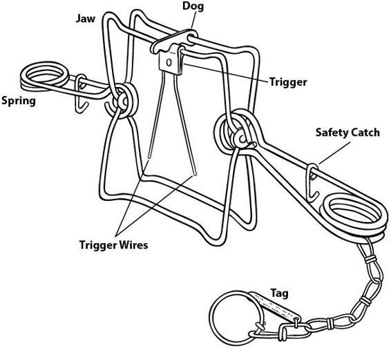
顾名思义，钢缆套索是由钢缆制成的套索。它们的尺寸取决于你的猎物。通常钢缆套索有称为锁定装置的机制，防止套索松开，所以动物挣扎得越厉害，套索就越紧。这可能看起来不人道，但它可以迅速杀死动物。
陷阱或套索引擎是一种快速激活陷阱的装置，而不是依靠动物试图逃脱来收紧绞索。引擎可以是有弹性的绿色树枝、配重或某种减震绳；它只受你想象力的限制。钢缆套索是携带许多陷阱而不牺牲太多重量的好方法，特别是如果它们是最小尺寸的。这些也可以用常见材料制作。套索的唯一缺点是它们很可能只能使用一次——如果捕获了动物，套索会被扭曲和扭结到无用的程度。
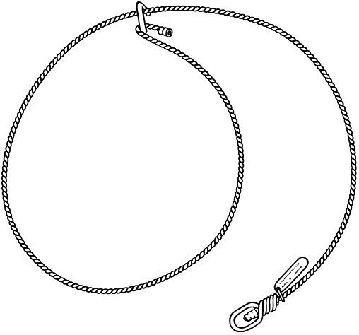
你可以使用许多材料来即兴制作现代陷阱或那些由非绳索材料制成的陷阱：
在任何五金店获得的挂画线很适合制作钢缆套索，能够轻松捕获兔子大小的猎物。#4线材最适合这项任务。使用线材时要记住的一点是，细线径的线材与引擎结合使用时，可能会切断肉体或斩首你的猎物。
吉他弦也能制作好的钢缆套索，只要你使用较重的缠绕弦而不是较细的单线弦。
用于钓鱼的简单钢丝前导线是现成的套索，只需简单调整，如果携带的话将服务于两个目的——钓鱼和陷阱。
捕鼠器是小型陷阱装备包中经常被忽视的资产，就像穷人的Conibear：对松鼠和小鸟等较小动物非常有效。在使用捕鼠器进行陷阱时，将它们涂成暗淡的土色，并在一角钻一个孔来固定它们，防止在非致命打击情况下被拖走。
高地陷阱是指在水面以上的高地设置陷阱，用于捕获如郊狼、狐狸、浣熊、负鼠和其他小型陆地动物。根据你使用的陷阱类型和寻求捕获的猎物，在陆地上设置陷阱比水中陷阱需要更多的设备。在本节中，我们只讨论足夹陷阱；稍后我们将讨论套索和身体夹具陷阱。
足夹陷阱是动物被牢牢抓住（通常是脚部）并保持活着直到陷阱设置者到达的陷阱。这种陷阱有五个主要组件：
框架。这是陷阱的底座，所有其他组件都附着在上面。
弹簧。这些可以是长弹簧或线圈弹簧；它们操作颚部使其闭合。
颚部。它们通常由钢制成，要么有偏移，要么没有偏移，意味着有一个空间切口，使颚部在闭合位置有一点间隙。（这有助于动物的舒适度，帮助防止”环切”——动物的腿因挣扎逃脱陷阱颚而被切断的情况。）
踏板。这是你希望动物在接近诱饵时将前脚的全部重量放在上面的目标区域。
挡块。这是保持陷阱颚张力的杠杆。当动物踩在踏板上时，这会释放挡块，挡块位于所谓的操作或”强力”颚之上，并在踏板的卡槽中切换。
高地设置使用的足夹陷阱有三种基本类型：单弹簧、双弹簧和线圈弹簧。
单”长”弹簧陷阱是一套钢颚，当踏板被触发时由一个动力弹簧闭合。双长弹簧有两个弹簧操作颚部，线圈弹簧也可以是单个或双个。顾名思义，线圈弹簧是由盘绕金属线制成的弹簧。在过去，山地陷阱设置者主要携带长弹簧陷阱，这些是非陷阱设置者最熟悉的形象。
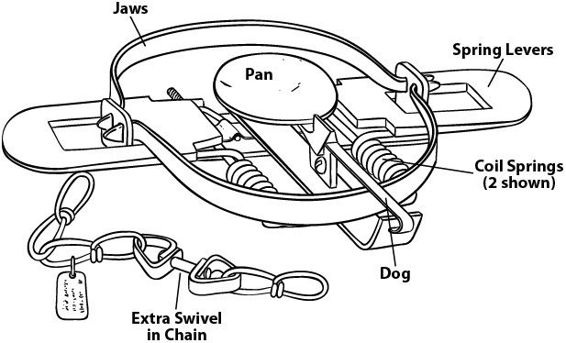
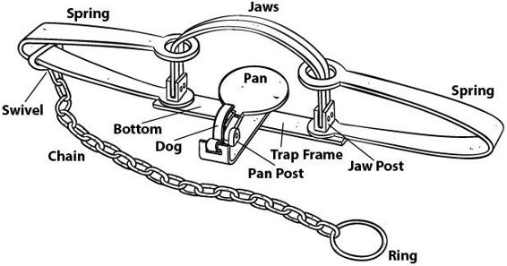
在准备好陷阱使用之前，我们需要讨论另一个重要项目：踏板张力是指使踏板下压并释放制动杆所需的向下压力。在较新的陷阱中，这由连接踏板与陷阱框架的螺丝控制。拧紧此螺丝会使踏板更难移动；如果松开则相反。踏板张力决定了你捕获什么类型的动物——需要更重的动物才能触发张力更大的陷阱，从而有助于减少捕获非目标动物的机会。
连接到陷阱框架的是陷阱链条。通常连接到桩子或锚点，防止被困动物带着陷阱逃跑。链条长度各不相同；我偏好约18英寸的链条和至少三个旋转点。旋转点有助于防止动物扭转链条，在等待你到达期间进一步伤害自己。
让我们准备好陷阱使用。当陷阱从工厂出来时，它们涂有油脂以防止在运输或储存中生锈。必须去除这些油脂，以便陷阱可以染色或打蜡或两者兼而有之。要去除这些油脂，在热水中煮沸陷阱，然后让它们风干直到轻微生锈。是的，你希望它们有轻微的锈层，因为这样染料和蜡会更好地粘附在金属上。一旦陷阱清洁掉任何油脂，就可以用商业产品染色或在黑胡桃壳中煮沸。
与任何其他爱好一样，市场上有很多与陷阱相关的装置，但你可以（也应该）保持简单。你需要一个筛网来筛选细颗粒土壤到你的陷阱设置上。对于打桩，斧头的锤柄即可，甚至一根大的劈柴棒也行。挖掘陷阱床，工兵铲(entrenching tool)、小手铲，甚至挖掘棒都可以正常工作。用于暴露踏板的小刷子非常有用，但我发现吹掉踏板来暴露它对捕获没有不良影响。
关于给陷阱打蜡的说明：这样做的原因是帮助它们平稳运行，以及防止进一步生锈。如果你在水中或结冰温度的湿地中使用它们，它也会保持它们正常运行。这项操作的最佳蜡是蜂蜡；如果你没有自产供应，可以商业购买。给陷阱染色不是绝对必要的；根据许多专家的说法，喷漆或什么都不做同样有效。只要陷阱用蜡充分润滑，如果正确设置就会运行并捕获动物。
你需要大桩子或地锚来固定陷阱。首选的两种方法是约2英尺长的螺纹钢桩，或地锚。地锚是连接到钢缆的角铁片。当打入地面时，它是直的，但当向上拉时会在下面的土壤中横向转动，牢固锚定陷阱。我遇到过许多使用木桩捕猎的老猎人。这些可以很容易地用天然材料制作，尽管这会迫使你携带坚固的铁丝（最小16号）来将陷阱连接到桩子上。地锚的主要问题是没有大型撬动装置很难移除。然而，使用它们可以确保你的猎物不会逃脱，你也不会丢失陷阱。所有未用地锚固定的陷阱都应该双重固定。
有了你的设备，你就准备好设置陷阱了。记住，就像所有房地产一样，关键是位置、位置、位置！设置在错误地点的陷阱通常不会捕获，或者比放置在好位置的陷阱需要更长时间才能捕获。大多数猎物在特定路径或路线上行进，这些地方是你陷阱的最佳位置。
首先，寻找动物存在的迹象；足迹、粪便和觅食残留物都是良好的指示器。在森林环境中，任何路径相交或连接的地方都是首选位置。在交叉路口，我喜欢在小径两侧以45°角设置两个陷阱。俗话说，“如果足够好设置一个陷阱，就足够好设置两个。”
你可以在小径与开阔田野相接处设置陷阱。在开阔区域，高地通常比低地更受青睐，因为大多数捕食动物在高处行进以获得良好视野来发现猎物。选择陷阱位置时，务必考虑风向；你用来吸引动物的任何诱饵或引诱剂都需要在上风方向，以便气味传播良好。
给陷阱放诱饵是设置陷阱的关键要素。大多数时候你希望动物努力获取诱饵。除非放置在托盘式机构中，否则设置在陷阱触发系统上的诱饵应该附着在触发装置上，使其不能轻易取走。在其他设置中，只需将诱饵尽可能放在陷阱后部即可有效地迫使动物触发陷阱。你希望动物为诱饵而努力，因为你试图捕获它；你不想喂养它！
记住，除非你使用其他不食用猎物的部分作为诱饵，如内脏，否则你使用的大多数诱饵也是可以食用的食物，为你的身体提供营养。要记住的重点是：相对于从被困动物获得的蛋白质量，你必须使用多少诱饵？如果你为捕获食物而消耗的能量超过从中获得的能量，你需要找到其他获取食物的方法。
我试图向所有学生灌输的另一个教训是：不要等到饿了才去寻找食物；这只会让情况变得更糟，降低成功的机会。就像任何其他事情一样，狩猎、钓鱼和设陷阱都会消耗卡路里和能量。如果你等到油箱空了，你就没有资源让你的狩猎变得高效。在野外寻找食物的最大好处之一是它能占据大脑。在SAR（搜救）场景中的等待时期，这可以起到奇效。
这是否意味着你不应该在用大青蛙的其余未吃部分做陷阱诱饵之前先吃掉青蛙腿？当然不是；这意味着你应该挑选你吃的东西，在可能的情况下保存资源以获得更大的餐食，选择容易获得的高蛋白、高脂肪食物，并使用其他东西来获得更多蛋白质和脂肪。始终寻求改善你的处境；这就是生存能力的全部意义。让它顺滑，不要让它粗糙！
BUSHCRAFT技巧
诱饵和引诱剂的区别很简单：引诱剂通过气味将动物吸引到设置位置，而诱饵是动物想要吃或调查的东西。引诱剂通常由腺体或油脂制成，诱饵通常以食物为基础。引诱剂的一个好例子是臭鼬麝香；它可以从很远的距离把动物带来看看。诱饵包括生肉等东西。
选择了一个好位置后，你必须决定陷阱应该多大或多小，以及使用什么陷阱。对于夹腿陷阱，我更喜欢双长弹簧(DLS)陷阱。小型DLS能夹住与大型单弹簧相同的动物，但它也能捕获更小的猎物。这些陷阱在水中设置时更加稳定，通常也比单弹簧或螺旋弹簧陷阱更安全且更容易设置。我更喜欢Sleepy Creek制造的#11 DLS。我用它捕获过从负鼠、浣熊到土狼的所有动物。
我建议携带至少六个这样的陷阱，配合套索和身体夹，但如果重量是个问题，三个就足够了。对于长期的肉类和毛皮收集，十二个会更好，但要携带那么多陷阱，你需要除了背包之外的运输工具。对于良好的全能肉类收集陷阱捕猎(trapping)，我携带的任何组合陷阱都不超过十二个。为你的环境携带合适的十二个陷阱，如果你设置得当，将让你获得肉类而无需狩猎任何东西。
顺便说一下，除非你担心安全问题，否则设陷阱时手套并非必需。我发现在设置陷阱时它们很危险，因为它们抑制了我手指的感觉，而我依赖这种感觉来安全地设置陷阱。
当你准备在一个能吸引最警惕动物的绝佳位置设置陷阱时，首先要挖一个陷阱床。这是隐藏你的陷阱的区域，使设置看起来自然。床必须足够深，以覆盖你的桩或锚以及陷阱链；首先插入这些并在实际将陷阱放在它们上面之前覆盖它们。铺设陷阱床是设陷阱中最重要的步骤之一。信不信由你，如果你创造了一个完美的设置但陷阱床铺设不完美，你最终会发现你的陷阱面朝下，仍然设置着，在泥土上面。如果陷阱没有牢固地铺设，它会在泥土中摇摆。当动物在你的设置处活动并意外踩到陷阱的外侧或薄弱颚部时，这会导致强颚部在泥土中升起。这会引起动物的好奇心，它会在发生移动的地方挖掘，通常会钩住陷阱的颚部并将其拉起。此时游戏就结束了。
#11 DLS陷阱有两个弹簧作为稳定器。因此，即使铺设不完美，陷阱也不会像螺旋弹簧陷阱那样容易摇摆。
确保陷阱首先得到适当铺设，总是根据风向进行，狗在设置的后面。这防止狗阻挡动物的脚或将其推出闭合颚部的路径。陷阱设置并用筛过的泥土覆盖后，继续用筛过的泥土覆盖整个陷阱床。这很重要，因为你不希望大块泥土、碎片或岩石影响陷阱的操作或卡在颚部内，导致分离和动物逃脱。完成铺设后，轻轻扫除或吹掉盘子上的泥土以露出它。这一步帮助你决定偏移（盘子与实际泥洞或诱饵区域的关系）以及你的背衬和泥洞/视觉吸引物将放置在哪里。
背衬是设置后面的结构，防止动物从除了你希望它来的方向之外的任何方向接近。它可以是任何东西，从泥土、树叶或其他碎片的半圆，到原木、树木、岩石或树桩。在背衬处放置一个泥洞作为诱饵容器。洞应该大约12英寸深，呈30-45度角。这有两个作用：
它迫使动物从前面接近，让它的眼睛和鼻子与洞对齐。
它迫使动物深入寻找奖品或挖掘——无论哪种方式都很好。
在洞内放置某种吸引剂；市场上当然有许多商业诱饵，但你可以使用任何发臭的东西。我更喜欢鲶鱼粘性诱饵，它装在一个大容器里；持续时间长，只需要一点点。作为替代，上次猎杀剩下的任何东西都可以。只要想着臭——任何腐烂的东西都可以。
土洞的另一个绝佳技巧是先在洞里放诱饵，然后用其他猎物的尾巴堵住洞口，比如兔子或浣熊的尾巴。这也成为了视觉吸引物。记住动物是通过视觉和嗅觉来捕猎的，所以视觉效果总是很好的补充。有时仅凭视觉效果就足够了。另一种技巧是使用显著特征作为背景。这可以是大骨头、烧焦的原木，或任何与环境形成鲜明对比的物体，用来在视觉上吸引动物到设置点。
诱饵或引诱物本身。你可以把诱饵塞进骨头的空腔里，
甚至只是把一些内脏放在大石头下面，用一点泥土覆盖，看起来好像是被其他动物埋藏的。目标是让动物从前方接近你的陷阱，把鼻子伸进洞里去触发设置；这就是偏移发挥作用的地方。
偏移包括左右偏移和前后偏移。想想动物的习性：它会先伸出一只脚，这只脚会偏离中心线。你可以通过围栏(fencing)来强制决定是哪只脚。（我们很快会谈到这一点。）动物的大小决定了从鼻子到脚的距离。我曾多次在尝试用较大的后置设置捕捉郊狼时，意外捕获了较小动物如狐狸或浣熊的后腿。我发现对于捕获肉类，两个方向上2-4英寸的小偏移效果最好。如果你试图捕捉较大的捕食者，你需要6-9英寸的偏移。
一旦你决定了偏移量并能准确看到踏板的位置，就设置你的土洞或视觉吸引物或两者兼而有之。然后放置背景物，如果它不是自然存在的物体的话。背景物到位后，你就可以考虑围栏了。
围栏是你用来让动物把脚准确放在你想要的位置的工具。它可以很简单，比如筛子里的一些粗糙材料，动物不愿意踩在上面。尽量不要让任何围栏或背景物延伸超过陷阱的前部或”松动”颚部。如果延伸超过陷阱颚部，会让动物对把脚放入狭窄空间感到警惕。换句话说，对于与犬齿相对的颚部，“过度围栏”是存在的。然后你可以使用次级围栏，如小石子、木棍，甚至谷壳，来进一步将动物引导向踏板。
完成所有这些步骤后，用筛过的泥土轻轻覆盖踏板；大约1/4英寸就足够了。此时，踏板应该是整个设置中最低的部分。
这正是你想要的，因为动物必须把重量压下去才能舒适地踩在那里。设置完成后，你就可以放诱饵、引诱物、放置视觉物，或三者兼而有之。其他动物的粪便总是很好的好奇心促进剂，既作为视觉和嗅觉吸引物，也作为次级围栏。插在泥土背景中的羽毛也是很好的视觉吸引物。一位伟大的老师曾告诉我，每个设置都应该有BLT：“诱饵(Bait)、引诱物(Lure)和粪便(Turd)”。
一般来说，陆地动物的毛皮更值钱，但水生哺乳动物更容易捕捉，因此是更可靠的肉类来源。水中捕猎需要的技巧和设备比捕捉陆地动物少，而且诱饵在水中或水边很容易获得。
这里的关键词是简单。这些区域的大多数动物都是两栖动物，与老鼠有关，所以与犬科和猫科动物相比，它们没有那么聪明。你用几个#1到#3号的双长弹簧陷阱就能在水中捕猎得很好。用它们你可以捕获貂(mink)和海狸(beaver)。
水中设置不需要垫层，因为水就是你的陷阱床，长弹簧使稳定性不成问题。水中捕猎使用的主要设置是用于海狸的口袋设置或海狸堆设置。
口袋设置是用你的靴尖在堤岸上挖的一个洞。把诱饵放在洞里，洞要刚好在水位之上，然后把陷阱对准洞口居中放置。你也可以使用围栏；设置几根木棍从前方引导动物，迫使它踩在陷阱踏板上。
对于海狸，最好的设置叫做海狸堆。如果你能捕获一只海狸，获得的海狸香(castor)就能捕获下一只，然后下一只，以此类推。海狸香是海狸产生的一种气味，用来标记领域；海狸尾巴根部附近有海狸香腺。这种气味对所有动物都很有吸引力，但对其他海狸特别有吸引力。
在堤岸边缘创建一个平台，在大约10-12英寸深的水中平台上设置一个#3双长弹簧陷阱，从一侧到中心距离的1/2处偏移到中心的一侧，左或右都可以。在堤岸上，通过用脚拖过泥浆创建一个假滑道，就像海狸用肚子滑入水中一样。如果你能找到一个真正的新鲜滑道，在这里设置陷阱，因为这可能不需要用海狸香作诱饵。在滑道上方，放置一些新鲜撕碎的草和几根你刚削过的木棍。如果你有海狸香，在这堆东西上放一些。海狸会不断巡逻水边并调查这些滑道。当一只海狸用肚子贴近堤岸时，它会把脚踩进你的陷阱。
麝鼠(muskrat)很像海狸，但如果你能找到表明它们存在的窝或滑道，这些也是使用小型#110康尼贝尔陷阱(Conibears)的理想地点。貂是肉食动物，麝鼠是它们最喜欢的食物，所以任何你不吃的麝鼠肉都应该用于此目的。浣熊和负鼠也会巡逻堤岸，任何腐烂的鱼或有臭味的材料都会吸引它们的注意。
就像钓鱼一样，张力大的大陷阱捕获大动物；张力轻的小陷阱几乎可以捕获任何动物。
除了之前讨论的套装外，还有一些特殊的套装。在这个类别中，我会放置一个盲设陷阱（即没有诱饵的陷阱），你可以用铁丝套索创建：松鼠杆陷阱。使用这种方法，你通过将一棵倒下的树靠在另一棵动物已经居住或经常出没的树上，为松鼠设置一条阻力最小的通道或路径。它们总是会沿着这根杆子爬上去，而不是爬主树干。在这座桥上使用一系列开口套索，十次中有九次能捕获松鼠。你甚至可以通过惊吓地面上的动物让它们跳到树上来驱赶它们进入陷阱。
倾斜杆陷阱
自从我们成为狩猎采集者以来，古代人民就一直使用原始陷阱，它们在今天和古代一样有效。原始捕猎法的最大优势是需要携带的装备少得多，一旦掌握技能，设置时间也很短。一旦你熟悉了这个系统并习惯了操作，你可以在一小时内设置二十个陷阱的捕猎线。这需要练习和实地时间，就像任何其他技能一样，但它是一项与生火或搭建庇护所同样重要的能力。
触发器
在简单原始捕猎中最重要的是学习一种可以适应多种陷阱的触发器系统。这样，你可以预先制作几个套索，并根据情况随时调整触发器和陷阱。一个简单的拨动触发器就足以设置各种陷阱，可以捕获所有小型猎物、鸟类，甚至用于河岸线设置捕鱼。熟悉几种使用这种简单触发器的陷阱比对许多需要时间和精力使用的复杂陷阱有一些了解要好得多。雕刻复杂的组件需要时间和大量思考以及调整才能做对，而直接的拨动装置就是这么简单，许多这些陷阱甚至可以不用任何工具制作。对于你设置的每一个复杂陷阱，你可以设置许多简单陷阱并获得相同或更好的结果。
丛林技巧提示
许多人把原始捕猎过度复杂化了！捕猎其实很容易理解。任何能有效抓住或杀死动物的陷阱就是你需要的全部。我走遍了世界各地，仍然是狩猎采集者的部落人民向我展示了使用简单拨动触发器的简单陷阱是获取肉类的最佳全能陷阱，也是他们每天用来捕捉小型哺乳动物和鸟类的陷阱。KISS（保持简单明智）方法适用于捕猎。
落石陷阱(deadfall traps)已经使用了几个世纪，最常用于捕捉较小的猎物，如地松鼠、老鼠和较大的啮齿动物。落石陷阱可以使用与套索陷阱相同的拨动触发器系统。这被称为”派尤特落石陷阱”(Paiute deadfall)，以经常使用它的沙漠派尤特印第安人命名。落石陷阱需要比猎物重五倍才能杀死；陷阱会压死猎物。然而，这并不意味着动物会立即死亡——它可能会随着时间的推移窒息而死。
你可以添加组合，比如洞穴设置。洞穴设置是小洞，类似于有时在树或原木底部使用的口袋设置。它们建在落石陷阱上方，为陷阱增加重量并帮助伪装，使其更有效。传统的派尤特落石陷阱使用大石头作为杀伤装置。你可以通过使用原木或前面提到的洞穴设置将这种陷阱适应到林地区域。其他用于中型动物的落石陷阱可以通过建造一个简单的框架轻松制作，但仍使用相同的拨动触发器。这些陷阱只受到你个人创造力的限制。这种陷阱系统的主要缺点是组件部件的可用性取决于你所在的位置，以及建造它们所需的时间。
鸟类陷阱可以使用前面讨论的相同套索和拨动系统，或者可以是笼子陷阱，用来活捉鸟类，保存它们以供以后使用。许多笼子陷阱用于较小的鸟类，但较大的鸟类和水禽最好使用前面部分讨论的其他方法捕捉。笼子陷阱对地栖鸟类如鹌鹑、松鸡和野鸡效果很好。它们也可以用于小型栖息鸟类，如哀鸽和斑鸠。
使用套索装置捕捉鸟类不需要捕捉小型哺乳动物所需的拉伸强度，因此携带可以分解直径的多股绳索在以这种方式捕捉鸟类时是一个很大的优势。这类陷阱使用脱离式拨动系统，也可以适应落石陷阱。活鸟捕捉系统通常使用绊线或某种棍子，迫使鸟类越过它去获取诱饵。
捕猎套装的范围可以从精巧到一卷银行线(bank line)（用于捕鱼和制网的沥青尼龙线）和一把刀。我更喜欢小套装的轻重量，依靠我的知识和技能来使用大量陷阱。我携带一些物品来帮助确保成功，同时将重量和空间保持在最低限度。
在仅使用钓鱼线和刀具的装备组合上确实有其价值所在。对于短期生存情况或背包应急装备，我建议增加几个中号三钩(treble hooks)(同样可用于陷阱制作和钓鱼)、六个大号桶形铅坠和大号单钩，装在塑料密封袋中，放在钓鱼线卷内，用几个软木塞和一卷4号图片线固定。这种线的主要用途是制作特殊陷阱，如松鼠杆陷阱，需要线材的刚性而非钓鱼线的柔韧性。它增加的重量很少，可以多用途作为钢丝导线用于树枝钓组和钓鱼(如果海龟较多的话)。树枝钓组是指将带钩的鱼饵线悬挂在水下的树枝上。钓鱼时，还需添加一个便携钓鱼装备。
一些最好的钓鱼竿是用竹子或河边芦苇制作的。这些鱼竿可以从9英尺到13英尺长，砍取新鲜的也能很好地使用。这种性质的鱼竿的线应该与鱼竿同长。无需收线——利用鱼竿的杠杆作用将鱼带到抄网或岸边的距离内以固定捕获物。
这种叫做”天狗钓法(tenkara)“的钓鱼技术在日本山区使用，现在已开始迅速传播到世界其他地区。它基于与竹竿钓鱼相同的概念，但有一些调整。天狗钓法主要用于河流和溪流，所以它是一种飞钓形式，与点钓法(dapping)相近(将鱼饵/假蝇提起并放回水面，在水面上做假动作)。天狗钓法的精妙之处在于线和装置与鱼竿连接和分离的方式。你可以准备几种不同装配的线用于不同应用，可以在几秒钟内与鱼竿连接和分离，而无需切断或将线绑到鱼竿上或从鱼竿上解开。这是通过使用连接到鱼竿末端的所谓lillian编织绳实现的。这可以很容易地用任何降落伞绳的外皮或小直径绳索制作：
使用大约3英寸长的伞绳，将绳子的末端像袜子一样套在鱼竿的末端。
留出大约2英寸的悬垂部分，通过在该点用小直径绳或线缠绕鱼竿来永久固定前1英寸。用松树脂密封，使其与鱼竿形成粘结。
在外皮的最末端打一个结，并将这种尼龙材料稍微烧一下，在末端形成一个球状物。完成后，你的鱼竿现在可以接受任何装配好的线了。
如前所述，使用天狗钓竿，你可以保持多条装配好的线以匹配钓鱼条件，并快速更换它们进行调整。你可以在不同的存储梯架上准备浮水飞钓线、编织线和捻制线，装配不同的鱼饵和鱼钩组合。通常，携带四种不同的装配线将使你能够覆盖大多数情况。在你选择了该特定线的类型和装配(例如，鱼钩、铅坠、浮漂或干式假蝇和咬钩指示器)后，使用8字结在线的顶部打一个简单的环，形成1/2英寸的环。要将线连接到鱼竿上，在线中创建一个云雀头结环，将其放在你在lillian编织绳上创建的球结上。此时，它会自紧。它不会脱落，但在你想要更换线时很容易移除。
丛林技巧(Bushcraft Tip)
线梯架是用来整齐保持装配线的器具，并非绝对必要。如果你愿意，线可以盘绕在罐子里，但梯架可以防止它们在取出使用时打结。梯架简单来说就是用木头或塑料制作的微型梯子。它们可以很容易地用平木条制作，两端雕刻成半月形。长度是个人喜好问题；我喜欢大约4英寸长的。将线缠绕在上面保持整洁以供使用，并为该特定应用设置。
处理小型猎物比处理大型动物更快更容易，需要更少的能量将肉从捕杀或捕获区域转移回营地。专注于小型猎物的主要原因是，很多时候它可以在一次就餐中消耗完，留下一些剩余物作为鱼饵。处理和烹饪或保存大型猎物是一项耗时且有时繁琐的工作。在有掠食性动物存在的地区，在你的营地区域有大量肉类、血液或尸体可能非常危险。处理小型猎物在大多数情况下是一项非常容易的任务，任何人只需最少的技能或练习就能完成。
许多较小的哺乳动物，如地松鼠、老鼠、田鼠等，除了浅切一刀移除内脏和肛门道外，无需其他处理。然后你可以将它们放在火中烧掉毛皮并烹饪肉类。整个食用以从少量食物中获得所有营养。记住任何剩余的肉应该用来诱饵陷阱以捕获其他东西。
中型动物处理起来难度不大；你只需要去除毛皮使其易于处理，并将其分成四份以便更快烹饪。移除所有内脏和肛门道。移除时小心不要刺穿肠胃，因为这会影响肉的味道。许多内脏值得食用，如心脏和肝脏。检查任何猎物的器官以确保它们看起来健康：颜色鲜艳，无斑点或蠕虫。再次记住，将剩余物用于多个陷阱或钓鱼。
东部林地提供了多种多样的其他野味，如果你知道如何捕获和处理它们，这些动物可以维持你的生存。
在野外拔毛或除羽是一个耗时的过程；你最好像处理哺乳动物一样剥皮。处理鸟类时要记住的主要事项是清空嗉囊(crop)，这是位于喉咙底部的一个囊袋，用于在消化前储存食物。这里通常含有最近进食的干种子等物质。同样，肝脏和心脏是很好的食物，所有鸟类都可以食用。但是，对于秃鹫等食腐鸟类，你应该充分煮沸肉类，以确保在食用前杀死任何寄生虫。在检查肉类和器官的整体健康状况时，请运用你最好的判断力。
处理鱼类时，从肛门到鳃底部切开，清除所有内脏，撕掉鱼鳃。你可以刮鱼鳞，也可以带着鳞片或皮一起烹饪，然后像烤土豆一样从里到外吃肉。如果你选择在食用前给鲶鱼剥皮，你需要一把钳子来刮鳞和剥皮，因为它可能很坚韧。北美的所有淡水鱼都是可食用的。
蛇等爬行动物可以剥皮并去除内脏，然后像其他食物一样烹饪。在处理任何毒蛇之前，先去掉头部。青蛙也可以剥皮或者在去除内脏后直接烹饪食用。乌龟处理起来有点棘手：切掉头部，将身体倒挂放血，通过切割龟壳和肉之间的薄膜层来移除下壳，并清理内脏。你可以用龟壳作为锅来烹饪龟肉。龟肉是很好的钓鱼饵料。
自古以来，人类就保存肉类以备后用。有很多方法可以做到这一点。以下是一些简单的保存方法，几乎不需要额外的装备或其他资源。
干燥去除肉类中的水分，使其可以在旅途中或路上随时食用。关键是将肉切得尽可能薄，这样过程会很快。根据可用的自然资源，你可以通过几种不同的方式干燥肉类。
将肉悬挂在小火上方一段时间，直到肉在弯曲时发出开裂声，像牛肉干一样。
在平石或架子上晒干肉类。如果有充足的烈日，将肉从一边翻到另一边直到晒干。
肉类在干燥过程中也可以熏制，以增加风味和额外的杀菌成分。注意这与熏肉过程不同（将在下一节讨论）。
要熏肉，你需要用现有装备制作某种围栏，比如雨披、垃圾袋、应急毯等。也可以用天然材料制作。搭建一个三脚架，在热炭床和小火焰上方约2英尺处放置熏肉架。围栏使烟雾和热量直接上升到肉类，完成熏制过程。与干燥不同，你实际上是在慢煮肉类，而不是试图去除所有水分。烟雾为肉类增加风味以及抗菌特性。你可以使用绿木来增加烟雾含量，但要远离松树等含树脂的木材。
熏肉
腐烂和腥臭的肉吸引食腐动物。
猫类主要通过视觉而不是嗅觉狩猎，所以如果你在捕获猫科动物，在陷阱上方悬挂视觉物体效果最好。
在冬季其他食物稀缺时，犬科掠食者更容易被肉类诱饵吸引。
被射杀后装在桶形内衬中的臭鼬可以用来用气味污染其他物品。
臭鼬气味是最好的远距离呼叫引诱剂之一。
河狸香几乎能吸引所有动物。
我想感谢你阅读这本书。当然，重要的是你不仅要吸收书中的教训，还要走出去享受大自然所提供的一切。学习我们讨论的技能的最好方法是实践它们。
重要的是我们不要忘记祖先的教导，并将这些技能传授给那些愿意学习的人。虽然我们内心都是丛林技能者(bushcrafter)和林地人，但我们也必须记住，我们是土地的管理者。资源保护以及保持事物的可再生和更新应该是任何外出活动的主要目标。只有这样，才会有美丽的土地区域供我们的孩子和他们的孩子享受。
当你冒险进入野外时，可能会出现问题。在这种情况下，在较短、较容易的徒步旅行中练习这些丛林技能将帮助你更好地准备处理紧急情况。你将能够把生死攸关的情况转变为严重但不致命的问题，一个能够解决的问题，而不是面临生死考验。
我花了多年的研究和实验来辨别哪些是最有价值的技能，哪些是最重要的携带物品。这本书试图在短小的篇幅内用一些插图来总结这些内容。可以就个别主题写成卷册，但我也相信生活的80/20法则：你每天听到和看到的80%是最不有价值的信息。这本书涵盖了我认为最有价值的20%的丛林技能。它不仅会让你成为更好的丛林技能者，还会让你”平稳地”而不是艰难地度过。
最终，这就是最重要的。祝你好运！
保存资源意味着很多方面。在本书的语境中，这意味着需要节俭并最大程度地利用你拥有的资源。如果你在野外受困，你不知道多久才会被发现，所以你必须理解并保存关键资源。以下是一些值得思考的要点。
除非必要，否则永远不要使用你的刀。尽可能折断树枝，用手或尖锐的石头剥树皮。
永远不要错过收集干燥火绒(tinder)供以后使用的机会。如果你有时间和卡路里消耗，用原始方法生火，把确保的火种留到绝对需要时使用。
获得肉类后永远不要浪费。将剩余的肉干燥并储存在头巾中供以后食用。
充分利用动物的所有部分。骨头可以制作工具，内脏可以用作诱饵。
尽可能使用枯木(deadfall)建造庇护所和生火，避免浪费精力折断和切割材料。
水可能很珍贵。每当即将下雨时，设置收集装置。
不要为了获取猎物而进行不必要的旅行。在你的大本营周围以菊花链模式(daisy pattern)设置陷阱，而不是直线布置。
尽可能在水源附近建立营地。这使得收集水和获取食物更容易，需要更少的旅行。
总是考虑下一次生火并通过制作炭布(char cloth)或保存一些火绒来做计划。
在舒适的时候旅行。在炎热的天气中，在早晨和傍晚旅行；在寒冷的天气中，在阳光充足的时候旅行。
太多人纠结于识别野生可食植物以及他们能吃什么不能吃什么。再次强调，保持简单。看看你的院子周围；可能有几种非常常见的野生可食植物。与其担心那些稀少的植物，不如专注于常见的植物。选择八种，然后牢记它们。在最近一次新西兰之行中，我惊讶地发现许多在美国的相同植物在那里也茁壮成长；蒲公英、三叶草、车前草、香蒲等，都像在这里一样生长。很可能，如果你在野外花费大量时间，至少会迷路或受困一次，所以专注于常见植物。如果你能识别八种可食植物，至少有几种在美国其他地区以及国外也很常见。通过学习植物科属，你可以通过相似性识别可食植物，这对你很有帮助。但是，要注意许多植物都有有毒的相似植物。警告：永远不要食用野生蘑菇或任何其他真菌。在食用任何植物之前要完全识别。
有四类可食植物提供良好的营养价值但不含脂肪。你应该记住每组中至少两种，并学会在所有季节识别这些树木或植物。
以下是这些类别中一些常见可食植物的列表：
可食植物类别
| 植物 | 类别 |
|---|---|
| 香蒲(Cattail) | 根茎/块茎 |
| 欧洲防风草(Parsnip) | 根茎（警告：这种植物的叶子和茎可能引起接触性皮炎） |
| 蒲公英(Dandelion) | 绿叶植物 |
| 牛蒡(Burdock) | 绿叶植物/根茎 |
| 山核桃(Hickory) | 坚果 |
| 胡桃(Walnut) | 坚果 |
| 覆盆子/黑莓/鲑莓(Raspberry/Blackberry/Salmon Berry) | 水果 |
| 普通接骨木(Common Elderberry) | 水果 |
香蒲(Cattails)是大自然的超市和药房。嫩芽可以生吃或煮食；根茎块茎也可以煮熟食用。从穗头收集的花粉可以用作面粉，嫩穗头可以像玉米棒一样食用。欧洲防风草(Field parsnip)几个世纪以来被用作主食，但现在被大多数人遗忘；这种植物的根是很好的淀粉，可以像土豆一样烘烤。警告：处理这种植物时可能发生接触性皮炎。蒲公英(Dandelions)是沙拉的很好绿叶植物或可以随时食用；它们富含维生素A，花顶也可以食用。蒲公英根干燥研磨后是很好的咖啡替代品。
牛蒡(burdock plant)的嫩叶特别适合做沙拉绿叶，大主根是很好的淀粉。
山核桃(Hickory nuts)如果你敲开它们并从里面挖出果仁，可以为你的饮食提供蛋白质。
黑胡桃(Black walnuts)是很好的蛋白质来源且不难处理。果壳可用于制作棕色染料，它们含有一种化学化合物，研磨后可用于在小水池中击晕鱼类。覆盆子(Raspberries)是东部林地非常常见的夏季水果。其他形式，如鲑莓(salmon berries)和黑莓(blackberries)，在其他地区很常见。这些是很好的水果和维生素来源，可用于许多餐食应用和茶饮，也可以生吃。葡萄也很常见，尽管它们有许多有毒的相似植物。当不结果时，这些植物的嫩芽也可以食用，叶子可以泡茶。
普通接骨木(Common elderberry)果实从夏季到秋季非常常见。你可以生吃它们，也可以煮沸制成美味饮品，或与其他食物结合制作美妙的餐食。
药用植物也很常见，其中许多生长在美国各地的路边和院子里。同样，你应该识别几种常见的植物，当用作常见疾病的简单疗法时会有帮助，例如感冒、胃部不适、头痛、叮咬和蜇伤，以及过敏反应（接触性皮炎）。有助于卫生的植物也值得了解。
以下是一些更常见药用植物的列表：
植物 | 药用益处
[香蒲(Cattail)] [防腐剂，牙齿和牙龈护理] [毛蕊花(Mullein)] [感冒/鼻塞，女性生理需求] [凤仙花(Jewelweed)] [接触性皮炎] [车前草(Plantain)] [叮咬/蜇伤] [薄荷(Mint)] [头痛]
[薄荷和蒲公英] [胃部不适] [西洋蓍草(Yarrow)] [血液凝固剂/感冒和流感/驱虫剂] [泽兰(Boneset)] [深度瘀伤，骨折，发烧]
木炭：当然，这不是植物，但我在这一部分提到它，因为在意外食物或植物中毒的情况下，它可能是不可缺少的资源。在水中研磨，它会立即引起呕吐，并具有吸收性质，可以清除胃中残留的毒素。香蒲(Cattail)在嫩芽被拔出时，在叶鞘基部有很好的凝胶。这种凝胶具有麻醉和防腐作用；你可以把它比作芦荟，因为它对烧伤或蜇伤的局部疼痛缓解很有效。这种植物的嫩芽也可以制作很好的牙刷。毛蕊花(Mullein)几个世纪以来一直被用作祛痰剂，对咳嗽和感冒治疗很有效；这种植物的大而柔软的叶子可以用作伤口敷料，对女性需求具有吸收性。
凤仙花(Jewelweed)植物的汁液中含有化学物质，有助于缓解毒藤和其他植物引起的接触性皮炎症状。新鲜采摘的植物可以在皮肤上摩擦。重要的是在接触问题植物后尽快使用这种植物。车前草(Plantain)可以通过咀嚼植物然后将压碎的叶子放在蜇伤或叮咬处制成药膏使用。它有助于拔出异物，如碎片和刺，以及蜇伤的毒素。薄荷(Mint)对一般和医疗用途有许多优良特性。在太阳穴上摩擦新鲜薄荷叶有助于缓解轻微头痛。干薄荷和蒲公英冲剂对胃部不适有好处，有助于缓解腹泻。薄荷煎剂也可以用来漱口治疗咽喉疼痛，薄荷和西洋蓍草的冲剂或茶可以缓解感冒和流感症状。
西洋蓍草(Yarrow)在历史上以其凝固深伤口血液的能力而闻名；它还具有抗炎特性。作为茶饮用时会引起出汗，有助于退烧。最近的研究还表明它是很好的驱虫剂。泽兰(Boneset)作为冲剂有助于退烧，而绿叶制成的药膏有助于治疗深度瘀伤甚至骨骼修复。
药用植物主要以四种方式使用：
药膏：通过收集植物叶子和花朵生用并压碎，你可以制成药膏。然后可以在沸水中浸泡，甚至在紧急情况下在口中咀嚼（唾液药膏），然后直接放在患处并用头巾或绷带包扎。
冲泡茶：制作茶或冲剂，像制作药膏一样浸泡大约10-15分钟，然后过滤后饮用液体。
煎剂：煎剂很像冲剂，但需要将材料煮沸，而不是浸泡。这种方法用于任何树皮材料或根部。然后过滤液体，在煮掉一半液体后饮用。
洗剂：洗剂是用来清洁患处的冲剂，而不是摄入。
根据味道进行植物/树木归类
如果你知道植物无毒，你可以通过实际品尝来了解其特性。把它放在嘴里，咀嚼，在口中转动；感受它在味觉上的作用和味道。根据味道，你可以将其分为四个类别之一：
苦味：具有苦味或辛辣味的植物通常对感冒和流感是好药。它们通常具有防腐和抗病毒性质。
粘液质：使口腔产生唾液或粘腻的植物对便秘有好处，因为它们会”润滑管道”，可以这么说。它们对干燥刺激的鼻窦以及烧伤也有好处。
收敛剂：收敛性植物会让你的嘴收缩或使你的味觉干燥，在身体或皮肤上也会产生同样的效果。它们会干燥毒藤，有助于止泻，治愈流鼻涕。
祛风剂：这些植物会感觉温暖或辛辣，对胃部不适和消化道中气体和不适的一般缓解很有效。
野外食谱
硬饼干(Hardtack)
4-5杯通用面粉 2杯水 3茶匙盐
将烤箱预热至375°F（如果你有对流烤箱或反射炉，则为350°F）。
在大碗中将面粉、水和盐混合在一起，确保混合物相当干燥。必要时添加更多面粉。
将混合物擀至约1/2英寸厚度，并塑造成矩形。切成3英寸×3英寸的正方形，用叉子或刀在两面戳洞。
放在未涂油的平底锅上，每面烤30分钟。
1杯面粉（白面粉或白面粉和全麦面粉的混合） 1茶匙泡打粉 1/4茶匙盐 1/4杯奶粉 1汤匙起酥油煎炸用油所需水量
提前在家制作混合物。将干配料一起过筛到大碗中，切入起酥油直到你得到颗粒状、玉米面状的混合物。将这种混合物装在拉链冷冻袋中。如果你要进行长途旅行，请双层装袋。
从小铸铁或不锈钢煎锅开始，充分涂油。你也可以使用硬木板。
将大约1/4杯水倒入袋中并挤压混合。
将混合物从袋中挤出到温热的平底锅或木板上。
你的班诺克面包在10-12分钟内开始看起来像面包，取决于
调节燃烧器的热度。此时你需要翻转面包。要检查是否烤好，用牙签戳一下面包。如果牙签拿出来是干的，就烤好了；如果牙签拿出来是湿的或粘着糊状物，就再烤一会儿。
1只成年松鼠或兔子通用面粉，足够裹肉用油，用于煎炸水，用于烘烤 1-2个土豆，去皮切成四块 3-4根胡萝卜，去皮切碎 1个洋葱，去皮切成四块盐和胡椒，调味用
彻底清洗肉类，确保所有毛发都被清除。切成块。
将肉块裹上面粉，在平底锅中煎至棕色（只用足够防止肉粘锅的油量）。只需煎成棕色即可；不需要将肉完全煮熟。
煎好后，加水覆盖。将切成四块的土豆、切碎的胡萝卜、切成四块的洋葱，以及适量的盐和胡椒放入锅中与肉一起。盖上锅盖，用中小火煮至熟透，大约30分钟，具体时间取决于火力大小。
12只蛙腿 2杯苏打饼干屑或磨碎的硬饼干 1杯通用面粉 1杯玉米面 1/8-1/4杯切丁洋葱盐和胡椒，调味用 1个大鸡蛋 1/2杯淡奶食用油或牛脂，用于煎炸
冲洗蛙腿并拍干；放置一旁。在一个大的密封袋中，混合苏打饼干屑或磨碎的硬饼干、面粉、玉米面、洋葱、盐和胡椒。摇匀。在一个浅碗中，将鸡蛋和淡奶打散。
在平底锅中用中高火加热食用油或牛脂。油应该有大约1/2英寸深。
将蛙腿蘸入牛奶鸡蛋混合物中，然后蘸入饼干屑混合物中直到均匀裹上。小心地放入热油中。每面煎至金黄色，每面约5分钟。如果腿部煎得太快，将火调至中火。上菜前沥干。
1只河狸后腿 1个大洋葱 3根胡萝卜，切片 2茶匙盐
在大汤锅中用水煮河狸30分钟。沥干并冲洗。重复这个方法两次。
再次用水覆盖，然后加入其余配料。盖上盖子煮至软烂。上菜前丢弃蔬菜，因为它们会吸收河狸的大部分野味。
麝鼠后腿 1-2杯淡奶 3个煮熟的大鸡蛋 1汤匙干大蒜芥末 1汤匙通用面粉黑胡椒、辣椒粉和盐，调味用
在大汤锅中用水覆盖准备好的麝鼠（已去除麝香腺并彻底清洗）。慢慢煮至软烂，如需要可加水，大约30分钟，具体时间取决于火力大小和肉块大小。
晾凉，从骨头上取下肉。用刀将肉切成小块。
保留锅中汤汁，加入等量的淡奶。捣碎蛋黄；加入大蒜芥末和面粉，搅拌到液体中。用黑胡椒、辣椒粉和盐调味，重新煮沸。
切碎蛋白。汤煮沸后加入肉和蛋白。趁热上菜。
1只（4磅）浣熊，切成方块 2-3个野生洋葱，切片盐和胡椒，调味用 6-12片磨碎的大蒜芥末叶，或按口味少许辣椒酱切块土豆和你选择的蔬菜，按口味
在荷兰烤箱中慢慢煎肉块至棕色，大约20分钟。组织内应该有足够的脂肪，不需要额外的油。
在煎制的最后阶段加入洋葱，这样它们不会被烧焦。降低火力，用盐、胡椒、大蒜芥末和辣椒酱调味，盖上盖子。用小火炖至几乎完全软烂，约45分钟。
加入你选择的切块蔬菜，继续炖至蔬菜软烂。配基础班诺克面包(Basic Bannock)热食。
12-24个鸽子胸肉（约1磅）盐和胡椒，调味用 2杯通用面粉猪油或牛脂，用于煎炸 1/4磅新鲜蘑菇（羊肚菌），切片 6个中等大小的野洋葱，切片 1块鸡汤块溶解在1杯开水中准备好的糙米，按口味
将烤箱预热至350°F。给鸽子胸肉撒盐和胡椒，轻轻裹上面粉。在铸铁平底锅中用猪油或牛脂煎至棕色。
在胸肉上放上切片蘑菇和洋葱。倒上鸡汤。用铝箔纸盖住平底锅。烘烤25分钟。揭开盖子继续烘烤15分钟。
配糙米上菜。
盐，调味用 1-2磅龟肉 2茶匙切丁洋葱 1/8茶匙干洋葱大蒜 2杯水 8个小的带皮红薯，对半切
给龟肉充分撒盐，放入慢煮铸铁锅中。按给定顺序加入所有其他配料。盖上盖子用小火煮6-7小时或直到龟肉软烂。
从锅中取出龟肉，切成一口大小的块。将肉放回慢煮锅，盖上盖子，继续用小火煮额外2小时或直到蔬菜煮好。
3磅瘦肉你选择的香料（盐、胡椒等）
将肉切得尽可能薄（越薄干得越快）。通过放入冷冻袋中摇晃的方式给肉充分调味。
在你的三脚架上搭建一个晾肉架，将肉悬挂在硬木闷烧火上方，高度要能让你舒适地将手放在架子上方3-5秒钟。用太空毯覆盖以加快这个过程并创造一个烟熏室。
缓慢地给火添柴，避免产生大火焰，直到肉干燥到弯曲时会发出咔嚓声。在旅途中存放在透气的袋子里。在汤中重新水化以增加肉类营养价值。
术语表
A型框架庇护所一种两面墙在顶部汇合的庇护所，可以从两个方向抵挡风雨。
偏移瞄准在导航中，故意偏离预定目的地几度进行方位测量，这样当到达该方位时，你就知道应该向左或向右转向目的地。
方位角方位，或你行进的方向；方位与标准方向（如北或南）的偏差角度。
后挡点在导航中，指不应超越的点。通常是与你通往目的地路线垂直的线性地形特征。
吊锅杆一种有多个调节点的锅架，可以升高或降低锅在火上的位置。
银行线用于钓鱼和制网的沥青尼龙线。它也是很好的生存绳索，因为它防腐蚀且抗紫外线。
基线与后挡点相反，基线与你的出发点垂直，提供了回到起始位置的手段。
底板指南针由平板制成的指南针，通常是透明的，可以放在地图上确定准确方位。
劈木法使用棍子（或”警棍”）敲击刀子，将其推过原木等木材的劈木方法。
方位在导航中，指方向。
刻度环指南针上标有度数的可移动环，用于定向。
绑扎由绳索制成，用于防止物体分离或散开。例如，绳端的绑扎防止纤维散开。
鸟巢用于生火，这是一束形状类似鸟巢的引火材料。应该是细、中、粗高度易燃材料的组合。
露宿袋覆盖露营者头部和睡袋的塑料袋，提供对潮湿天气或潮湿地面的保护。源自”野营”一词。
血圈在刀具操作中，指你周围360°超过手臂长度的区域，在推开被切割材料时，有人可能接触到刀刃的范围。
弓钻一种使用弓快速移动棍子的生火方法，产生摩擦和热量来点燃引火材料。
浏览袋一个轻量级的袋子，一侧和一端缝合。可以填充材料制成床垫。
燃烧器营地炉具中产生火焰的装置。
钢缆陷阱在捕猎中，用钢缆制成的套索陷阱。
帆布主要用于防水布和防水布帐篷的材料。它防水，通常防火且防霉。
炭化罐含有炭化材料以帮助生火的铁盒。
康尼贝尔陷阱对小动物和鱼类非常有效的陷阱。
吊架用带凹槽的棍子和叉状棍子制成，可用于将锅悬挂在火上或悬挂任何你想要离地的物品。
达科他火坑一种火法，挖两个相连的洞，在其中一个洞里生火。从另一个洞循环的空气保持火焰燃烧得旺盛明亮。
枯木自然倒下的木材——枯枝、被风吹倒的树等。
落石陷阱依靠动物触发机关释放落在动物身上的物体来杀死或困住动物的陷阱。
碎屑棚一种三个角固定在地面上的庇护所，一侧安装在脊杆上，形成三角形结构，然后用树叶和其他碎屑覆盖。
磁偏角图地图上显示磁北与地图北之间左右偏差度数的图表。
煎煮用根部或树皮等材料制成的饮品，煮沸后饮用。
钻石板/钻石棒用于磨刀和其他刃具的装置。
钻石庇护所（犁尖庇护所）类似于碎屑棚，这种庇护所三个角固定在地面上，而第四个角固定在树上或其他结构上，从而形成钻石形状。
凹地从马鞍形地形两侧高地之间的海拔降低。
肥木、松脂木、打火松松树中树脂自然聚集的树脂区域。作为生火材料极佳。
羽毛棍切割后在一端形成刨花束的棍子。这种额外的表面积使羽毛棍对生火很有用。
砍伐砍伐木材，特别是树木。砍伐树木不应轻易决定。
铁铈棒由自燃材料制成的棒，通过撞击硬表面产生火花来生火。
火柴布局以特定模式铺设木材以生火。
闪燃引火材含有挥发性油的植物材料，易于燃烧。但是，由于涉及细纤维，它们燃烧很快，火焰持续时间短。
悬挂防水布一种设置防水布的方法，其中没有任何部分接触地面。
地布/地垫可以铺在地上保护自己免受潮湿和寒冷的布或毯子。
吊床可以悬挂在两个支撑点之间离地的床。它可以避开生物并防止通过传导失去体温。
扶手
地形中的线性物体，当它们朝向预定行进方向时，可以作为跟随的指导线。
haversack（腰包）
你单侧携带的小包。用于装可能立即需要的物品。
hemp（大麻纤维）
印度大麻植物的坚韧纤维，用于制作绳索。
jackknife（折叠刀）
一种刀片和其他工具可以折入手柄的折叠刀。
juglone（胡桃醌）
一种能阻止或抑制许多植物生长的毒素。也可以用浓缩形式制作鱼类眩晕药剂。
keyhole fire（钥匙孔火堆）
挖成钥匙孔形状的火坑。火在”孔”中燃烧，热炭被拖入沟槽形成烹饪区域。
kindling（引火材料）
容易点燃用来生火的材料。
knife grind（刀具磨削角度）
刀片横截面的形状。不同的磨削角度要求你在磨刀时以不同角度握住磨刀石。
kuksa（木杯）
用木头或塑料制成的杯子（也称为noggin）。可用于饮用或烹饪。
lashing（绑扎）
用于将多个物体固定在一起的绳结。它们是在野外建造坚固庇护所的必备技能。
lateral drift（横向偏移）
长距离步行时逐渐向左或右偏移的趋势。
lean-to shelter（单坡庇护所）
由倾斜支撑的单面墙壁构成的庇护所，用树叶、树枝和其他碎屑覆盖形成安全的屋顶。
log cabin fire（原木小屋火堆）
通过将原木在内部装有引火材料和火绒的情况下交叉层叠成方形的火堆布置。
L.U.R.D.
左、上、右、下。基于地球自转导致星星表观运动的导航方法。
magnifying glass（放大镜）
用于近距离检查任何物体的透镜，也是野外可靠的生火工具。
map scale（地图比例尺）
地图上测量值与实际距离对应关系的指示器。例如，某些地图可能显示地图上一英寸等于实际距离一英里。
military Modular Sleep System (MSS)（军用模块化睡眠系统）
包括一个中等重量和一个轻量级睡袋，以及一个防水罩的睡袋套装，可在大多数环境中提供睡眠保护。
mule tape（骡带）
电工常用的胶带，具有很高的抗拉强度且重量轻。
notching（开槽）
在树枝或杆子上刻凹槽，用于建造或制作挂钩和把手。
oilcloth（油布）
用矿物油和亚麻籽油涂层的棉布制成的防水布，用于防水布和帐篷。
pace beads（步数珠）
用于在步行时记录距离的珠串。走完指定步数后在珠串上掉落一颗珠子。
pan tension（盘张力）
使陷阱的盘下移并弹簧陷阱所需的张力量。
parachute cord（伞绳）
具有编织外套（护套）的绳索，保护提供绳索强度的内股。
PAUL method（PAUL方法）
代表正方位角统一布局，此方法允许你侦察未知区域并计算回营地的直线方位，无需通过反向方位角一路回溯。
pitch a camp; strike a camp（搭建营地；拆除营地）
建立营地；拆除营地。
pitching the tarp（搭建防水布）
将防水布的任何部分固定在地面水平。
planks（木板）
从大块木头横切出的木板，用作面包和bannock等食物的烹饪表面。
polypropylene（聚丙烯）
一种可以非常便宜购买的轻质材料；然而，其寿命和耐久性使其只适合短期使用。
poultice（药膏）
作为绷带或疾病治疗敷在身体上的软湿团块。
resection（后方交会）
使用三角测量确定你位置的方位测量。
resin（树脂）
松树的汁液。有各种用途，包括作为生火材料、伤口绷带和各种药用目的。
ridgeline（山脊线）
一系列山顶，提供观察点和高地行进路线。
Roycroft frame（Roycroft背架）
用于携带背包的框架。由三根棍子绑在一起形成三角形构成。
rucksack（背包）
背包的另一个名称。这是你在野外携带大部分所需物品的基本包包。
saddle（鞍部）
两个山顶之间的低洼区域，形成山顶的排水点，同时提供风雨保护。
shear cut（剪切）
意图从大块木头上剪切木材的切割。
sheath（刀鞘）
刀具的套子或保护罩。
silnylon（硅胶尼龙）
浸渍硅胶的尼龙，使其防水。
sleeping bag（睡袋）
任何数量的用于睡眠的软垫袋子。可以用羽毛、羽绒、人造绝缘材料或空气间隙等填充绝缘。
strop（磨刀带）
一种设备，通常是皮带，用于给刀片精细开刃。
tannin（单宁）
从橡树中提取的收敛剂。可用于制作药膏、浸剂和染料。
tarp（防水布）
防水布的简称；帆布或油布覆盖物，用于搭建庇护所和野外其他用途。
teepee fire（锥形火堆）
引火材料直立摆放，顶端相接，看起来像帐篷的火堆布置。
tinder, tinder bundles（火绒，火绒束）
高度易燃的材料，能够轻易接受火花或在加入闷燃余烬时容易着火。
toggle（拨杆）
通过绳结连接到绳索上的木棍或销钉。这可以用作易于移动或移除的连接点，需要时可以承重。
tomahawk（战斧）
带有细长直柄的斧头，手柄可以轻易移除，使其成为可用于其他任务的手工工具。
Trangia stoves（Trangia炉）
一种炉子，其中封闭的材料灯芯（通常是石棉）密封在密闭空间中，容器底部有孔供酒精渗入。
triangle of death, the（死亡三角区）
身体的这个部位应该始终避免被刀或斧头伤害。它包括双腿上部之间的空间，包括腹股沟和两条股动脉。
tubular webbing
主要用于攀岩的织带。它比绳索轻，占用空间更小，通常具有更高的抗拉强度。
tumplines
背包或背架的带子，戴在前额上以协助携带重物。
upland trapping
在高地水面以上设置陷阱，用于捕捉郊狼、狐狸、浣熊、负鼠和其他小型陆地动物。
Venturi effect
空气进入狭窄管道时流动加快的趋势。这对火焰会产生显著影响。
whetstone
用于磨锐或磨利刃具的石头。
widowmakers
枯死的立木，在风力作用下可能轻易倒塌或折断。这些可能造成严重的安全问题。
Dave Canterbury是俄亥俄州东南部探路者学校的共同所有者和督导教练（被《今日美国》评为美国十二大生存学校之一）。他是陆军退伍军人，目前是自雇的狩猎向导和生存教练。他的作品还发表在《自力更生图解》、《新拓荒者》和《美国边疆人》杂志上。
版权所有 © 2014 F+W Media, Inc.
保留所有权利。
未经出版商许可，本书或其部分内容不得以任何形式复制；但在出版评论中使用的简短摘录除外。
出版商：
Adams Media，F+W Media, Inc.的分公司
57 Littlefield Street, Avon, MA 02322. U.S.A.
www.adamsmedia.com
eISBN 10: 1-4405-7978-4
eISBN 13: 978-1-4405-7978-3
国会图书馆编目出版数据
Canterbury, Dave.
Bushcraft 101 / Dave Canterbury.
页数 cm
包含索引。
ISBN-13: 978-1-4405-7977-6 (平装)
ISBN-10: 1-4405-7977-6 (平装)
ISBN-13: 978-1-4405-7978-3 (电子书)
ISBN-10: 1-4405-7978-4 (电子书)
GV200.5.C37 2014
613.6’9–dc23
2014012976
制造商和销售商用来区分其产品的许多名称都声称为商标。当这些名称出现在本书中且F+W Media, Inc.知晓商标声明时，这些名称均以首字母大写的形式印刷。
内页插图由Eric Andrews绘制。
封面设计：Stephanie Hannus。
封面和内页图片 © Clipart.com，tanik/123RF，Sergey YAkovlev/123RF，Pavel Bortel/123RF。